Editor‘s documentation
This documentation explains the backend work needed to create ParsedClassics collections.
To understand adequately Editor‘s documentation you should first study the Reader‘s documentation.
Editorial roles
There are two editorial roles: senior editor and resource editor. Senior editor must know basics of HTML and Javascript coding.
Senior editor
Senior editor performs the following tasks:
- defines edition;
- defines collection and its resources;
- sends the files to work with to resource editors;
- explains tools to be used and formatting rules to resource editors;
- checks formatting of the files created by resource editors;
- uploads image files to the server;
- maintains Git repository;
- deploys code to the server.
Resource editor
Resource editor performs the following task:
- creates resource files.
Editor‘s main tools
All editing work is being done on the localhost. The main tools are coding editor to create and edit files and web browser to view the result.
In order to start to work on ParsedClassics project, the editor should place the copy of ParsedClassics app into some directory on localhost, open /classics.html file in web browser and fire the coding editor program. The editing work consists in making edits in the code editor, saving and previewing results in the web browser.
Coding editor software
Any HTML/CSS/Javascript coding editor software is suitable for ParsedClassics projects. We recommend VS Code (Win/Mac, free).
Greek polytonic keyboard
To type Greek characters Greek polytonic keyboard software should be used. It is recommended to use virtual Greek polytonic keyboard, because it implements encoding conventions required for resources of ParsedClassics collections.
Web browser
Any major modern webbrowser – Chrome, Firefox, Opera, Safari, Brave, MS Edge – is suitable for previewing ParsedClassics projects on localhost. Among them Firefox has certain advantage: it preserves form values while reloading the page. But in Firefox default security settings may prevent the webfonts to be rendered in localhost environment. To see correct font in Firefox in localhost environment go to about:config and change the value of security.fileuri.strict_origin_policy to "false":
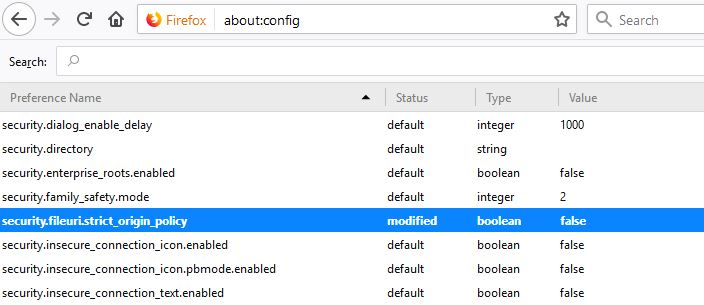
Git client and code deployment tool
For maintaining and deploying the code senior will need Git client and deployment tool.
As simple and convenient Git client can be recommended Github desktop app (Win/Mac, free).
As simple and convenient code deployment tool the online service deployhq.com can be recommended.
Defining edition
To define a new edition senior editor should add JSON object into the file /data/_catalogues/_sets.js . The order of JSON objects in this file is important because Catalogue page displays the list of editions in the same order.
For example, to define the edition "Ἡ Καινὴ Διαθήκη. Πράξεις, Ἐπιστολαί, Ἀποκάλυψις / The New Testament. Acts, Epistles, Revelation" such JSON object has been added:
nt_apostolics: {
title_orig: 'Ἡ Καινὴ Διαθήκη. Πράξεις, Ἐπιστολαί, Ἀποκάλυψις',
title_orig_short: 'Κ.Δ. Πράξεις, Ἐπιστολαί, Ἀποκάλυψις',
title_eng: 'The New Testament. Acts, Epistles, Revelation',
collections: [],
},
The value of the key "title_orig" should be a string in original language. It should include author or scripture name and the title. Abbreviation or/and shortened title can be used in order to avoid very long value. This value will be used in Catalogue page.
The value of the key "title_orig_short" should be a string in original language. This value usually is shorter than the value of the key "title_orig". Abbreviation or/and shortened title can be used in order to avoid very long value. This value will be used inside Collections selectbox at Library app page.
The value of the key "title_eng" should be a string in English. It should include author or scripture name and the title. Abbreviation or/and shortened title can be used in order to avoid very long value. This value will be used in Catalogue page.
The value of the key "collections" should be array of strings which are shortnames of collections. For now let's leave this array empty; we will add member to this array after defining certain collection.
After editing /data/_catalogues/_sets.js file refresh Catalogue page. A new value should appear in editions list.
Defining collection and its resources
Defining collection and its resources consists of the following tasks:
(1) listing collection;
(2) registering collection as part of edition;
(3) creating empty collection catalogue;
(4) listing collection resources;
(5) listing scanned books.
Listing collection
To list a new collection senior editor should add JSON object into the file /data/_catalogues/_collections.js as the value of certain key of ParsedClassicsCollDefs object.
For example, to list the collection Epistle to Titus such JSON object has been added as the value of the key "nt_titus":
const ParsedClassicsCollDefs = {
// some lines have been omitted
nt_titus: {
author_orig: 'Ἡ Καινὴ Διαθήκη',
author_eng: 'The New Testament',
collection_selectboxname: 'Κ.Δ. Πρὸς Τίτον',
collections_page_title_orig: 'Παύλου τοῦ ἀποστόλου ἡ πρὸς Τίτον ἐπιστολή',
collections_page_title_eng: 'Apostle Paul\'s epistle to Titus',
},
// some lines have been omitted
}
The key used to list collection let's call "collection shortname". This is important term and will be used often in this documentation.
Collection shortname should be a string containing only lowercase latin letters, numbers and underscores (no spaces!). It should include author or scripture name and the title. Abbreviation or/and shortened title can be used in order to avoid very long string.
The value of the key "collection_selectboxname" should be a string in original language. It should include author or scripture name and the title. Abbreviation or/and shortened title can be used in order to avoid very long value. It will be displayed in Collections selectbox.
The key "collections_page_title_eng" should have as its value the title of the collection in English.
The key "collections_page_title_orig" should have as its value the title of the collection in original language.
Both English and original title will be displayed in Collections page. Original title will also be displayed as title of parsed text resource inside Library app.
The key "author_orig" should have as its value the name of the author or the name of the scripture in original language, i. e. in Greek or Latin. It will be displayed as author name of parsed text resource inside Library app.
The key "author_eng" should have as its value English name of the author or English name of the scripture. The value is currently not used.
Since classics text usually consists of several books and each book usually will have its own collection, the values of the keys "author_orig" and "author_eng" will be repeated listing those collections. In order to avoid repetitions it is recommended to define JSON object containing all keys whose values would be repeated. That JSON object should be the value of certain key of ParsedClassicsCollProtos object which is in the same file as ParsedClassicsCollDefs object. Since the values of the keys "author_orig" and "author_eng" will be repeated for all NT books, let's name the key "nt_book":
const ParsedClassicsCollProtos = {
// some lines have been omitted
nt_book: {
author_orig: 'Ἡ Καινὴ Διαθήκη',
author_eng: 'The New Testament',
},
// some lines have been omitted
};
Now we can destructure the object ParsedClassicsCollProtos.nt_book anywhere we need the same values of "author_orig" and "author_eng" keys:
const ParsedClassicsCollDefs = {
// some lines have been omitted
nt_titus: {
...ParsedClassicsCollProtos.nt_book,
collection_selectboxname: 'Κ.Δ. Πρὸς Τίτον',
collections_page_title_orig: 'Παύλου τοῦ ἀποστόλου ἡ πρὸς Τίτον ἐπιστολή',
collections_page_title_eng: 'Apostle Paul\'s epistle to Titus',
},
// some lines have been omitted
}
Registering collection
The collection we just listed among other collections should be registered as a part of edition. This should be done by entering collection shortname as member of array which is value of the key "collections" in edition's definition:
nt_apostolics: {
title_orig: 'Ἡ Καινὴ Διαθήκη. Πράξεις, Ἐπιστολαί, Ἀποκάλυψις',
title_orig_short: 'Κ.Δ. Πράξεις, Ἐπιστολαί, Ἀποκάλυψις',
title_eng: 'The New Testament. Acts, Epistles, Revelation',
collections: [
'nt_titus',
],
},
The order of collection shortnames is important, because list of collections will be displayed in that order.
Creating empty collection catalogue
Collection catalogue is a file inside /data/_catalogues/ directory. Collection catalogue‘s filename should be the same as the collection shortname. In the example above collection shortname was "nt_titus". That means the name of the file of the collection catalogue should be "nt_titus.js".
The encoding of the collection catalogue file must be UTF-8 (no BOM).
Let‘s as example to create catalogue for Epistle to Titus collection.
To create empty catalogue for this collection we need to add to the object ParsedClassicsCollDefs the key "nt_titus" and to the object "nt_titus" the object "resource_defs"; let's also indicate the order of resource types:
ParsedClassicsCollDefs.nt_titus["resource_defs"] = {
// Parsed text
// IMPORTANT!
// The contents of the first resource of the type "Parsed text" serves as contents of the whole collection
// Original texts
// Concordances
// Lexicons
// Translations
// Commentaries
// Commentary references
// Grammar references
// Diagram sets
// Audio
}
Listing collection resources
The catalogue just created is empty because no resource is listed in it. Library app supports following types of resources: Parsed text, Critical edition, Concordance, Lexicon, Translation, Commentary, Commentary references, Grammar references, Diagram set, Audio recording.
Parsed text
As an example let‘s list parsed text resource for Epistle to Titus collection. Todo it we need to add JSON object as the value of certain key of ParsedClassicsCollDefs.nt_titus["resource_defs"] object. The key used to list resource let's call "resource shortname". This is important term and will be used often in this documentation.
In this case the key is "nt_titus_parsed_text" (contains inside collection shortname and resource type):
ParsedClassicsCollDefs.nt_titus["resource_defs"] = {
// Parsed text
// IMPORTANT!
// The contents of the first resource of the type "Parsed text" serves as contents of the whole collection
nt_titus_parsed_text: {
collections_page_resource_desc: "ed. by ParsedClassics (2018)",
library_app_selectbox_title: "Byzantine textform",
library_app_panel_subtitle: "",
library_app_panel_text_from: "The New Testament in the original Greek. Byzantine textform. Compiled and arranged by M. A. Robinson and W. G. Pierpont. 2005. Southborough, MA: Chilton book publishing.",
library_app_panel_note: "",
scanned_or_typed: "typed",
resource_type: "parsed_text",
scanned_source_shortname: "new_testament_in_original_greek_ed_robinson_pierpont",
library_app_panel_title: "Παύλου τοῦ ἀποστόλου ἡ πρὸς Τίτον ἐπιστολή",
contents_shortname: "nt_titus_parsed_text_contents",
},
// some lines have been omitted
}
After you add these lines, you should see this resource listed in Resources selectbox and in Collections page.
The key "collections_page_resource_desc" should have as its value a string "ed. by" plus compilator‘s name and the year in brackets.
The key "library_app_panel_title" should have as its value the title of the resource in original language.
The key "library_app_panel_subtitle" should have as its value the subtitle of the resource in original language. Here this key has empty string value because resource has no subtitle.
The key "library_app_panel_text_from" should have as its value bibliographic description of the book from which the text for parsing was taken.
The key "library_app_panel_note" should have as its value some text. Most probably it will be some acknowledgments.
The key "scanned_or_typed" should have as its value the string "typed" (it means "transcribed").
The key "scanned_source_shortname" should have as its value the name of the directory (without path) in which have been uploaded the images of the pages of the book from which the text for parsing was taken. Directory name includes title of the book, string "ed" and names of the authors.
The key "library_app_selectbox_title" should have as its value short English title of the resource.
The key "resource_type" should have the value "parsed_text".
The key "contents_shortname" should have as its value the name of the file containing resource's contents. The name of this file is usually formed by adding the string "parsed_text" at the end of collection name and next adding the string "contents" or the string indicating resource and the string "contents". So, if the collection shortname was "nt_titus", the the name of parsed text resource contents file will be "nt_titus_parsed_text_contents" or "nt_titus_parsed_text_byzantine_contents". About creating contents file and placing it in directory will be explained below.
Since classics text usually consists of several books and each book usually will have its own collection with its own parsed text resource, the values of the many keys will be repeated listing those resources. In order to avoid repetitions it is recommended to define JSON object containing all keys whose values would be repeated. That JSON object should be the value of certain key of ParsedClassicsResProtos object which is in the file /data/_catalogues/_res_protos.js . Since the values of many keys will be repeated for all resources of the type "Parsed text" based on Byzantyne textform, let's name the key "nt_parsed_text_byzantine":
const ParsedClassicsResProtos = {
// Parsed texts
nt_parsed_text_byzantine: {
collections_page_resource_desc: "ed. by ParsedClassics (2018)",
library_app_selectbox_title: "Byzantine textform",
library_app_panel_subtitle: "",
library_app_panel_text_from: "The New Testament in the original Greek. Byzantine textform. Compiled and arranged by M. A. Robinson and W. G. Pierpont. 2005. Southborough, MA: Chilton book publishing.",
library_app_panel_note: "",
scanned_or_typed: "typed",
resource_type: "parsed_text",
scanned_source_shortname: "new_testament_in_original_greek_ed_robinson_pierpont",
},
// some lines have been omitted
}
Now we can destructure the object ParsedClassicsCollProtos.nt_parsed_text_byzantine anywhere we need the same values of its keys:
ParsedClassicsCollDefs.nt_titus["resource_defs"] = {
// Parsed text
// IMPORTANT!
// The contents of the first resource of the type "Parsed text" serves as contents of the whole collection
nt_titus_parsed_text: {
...ParsedClassicsResProtos.nt_parsed_text_byzantine,
library_app_panel_title: "Παύλου τοῦ ἀποστόλου ἡ πρὸς Τίτον ἐπιστολή",
contents_shortname: "nt_titus_parsed_text_contents",
},
// some lines have been omitted
}
Original text
There can be several original text resources inside collection. In principle, resources belonging to type "Original text" can be either scanned or transcribed, but they surely will be all scanned because it is very difficult to reproduce complex formatting of the scholarly editions using very limitted means available in HTML.
As an example let‘s list original text resource for Epistle to Titus collection. Todo it we need to add JSON object as the value of certain key of ParsedClassicsCollDefs.nt_titus["resource_defs"] object. In this case the key (resource shortname) is "nt_titus_text_ed_antoniadis" (contains inside collection shortname, resource type and editor's name):
ParsedClassicsCollDefs.nt_titus["resource_defs"] = {
// some lines have been omitted
// Original texts
nt_titus_text_ed_antoniadis: {
collections_page_resource_desc: "ed. by V. Antoniadis (1904)",
library_app_selectbox_title: "Edition by V. Antoniadis (1904)",
library_app_panel_title: "Text ed. by V. Antoniadis (1904)",
library_app_panel_subtitle: "",
library_app_panel_text_from: "Ἡ Καινὴ Διαθήκη ἐγκρίσει τῆς Μεγάλης τοῦ Χριστοῦ Ἐκκλησίας. 1912. Ἐν Κωνσταντινουπόλει. Ἐκ τοῦ Πατριαχικοῦ Τυπογραφείου.",
library_app_panel_note: "",
scanned_or_typed: "scanned",
resource_type: "original_text",
scanned_source_shortname: "kaine_diatheke_ed_antoniadis",
contents_shortname: "nt_titus_ed_antoniadis_contents",
},
// some lines have been omitted
}
After you add these lines, you should see this resource listed in Resources selectbox and in Collections page.
The key "collections_page_resource_desc" should have as its value a string "ed. by" plus editor‘s name and the year in brackets.
The key "library_app_panel_title" should have as its value short title of the resource in English.
The key "library_app_panel_subtitle" should have as its value short subtitle of the resource. Here this key has empty string value because resource has no subtitle.
The key "library_app_panel_text_from" should have as its value bibliographic description of the book.
The key "library_app_panel_note" should have as its value some text. Most probably it will be some acknowledgments.
The key "scanned_or_typed" should have as its value the string "scanned".
The key "scanned_source_shortname" should have as its value the name of the directory (without path) in which have been uploaded the images of the pages of the book. Directory name includes title of the book, string "ed" and name of the author.
The key "library_app_selectbox_title" should have as its value short English title of the resource.
The key "resource_type" should have the value "original_text".
The key "contents_shortname" should have as its value the name of the file containing resource's contents. The name of this file is usually formed by adding the string "ed" at the end of collection name, then adding name of editor and next adding the string "contents". So, if the collection shortname was "nt_titus", and the editor was Antoniadis, then the name of original text resource contents file will be "nt_titus_ed_antoniadis_contents". About creating contents file and placing it in directory will be explained below.
Since classics text usually consists of several books and each book usually will have its own collection with its own original text resource, the values of many keys will be repeated listing those resources. In order to avoid repetitions it is recommended to define JSON object containing all keys whose values would be repeated. That JSON object should be the value of certain key of ParsedClassicsResProtos object which is in the file /data/_catalogues/_res_protos.js . Since the values of many keys will be repeated for all resources of the type "Original text" based on edition by Antoniadis, let's name the key "nt_text_ed_antoniadis":
const ParsedClassicsResProtos = {
// Original texts
nt_text_ed_antoniadis: {
collections_page_resource_desc: "ed. by V. Antoniadis (1904)",
library_app_selectbox_title: "Edition by V. Antoniadis (1904)",
library_app_panel_title: "Text ed. by V. Antoniadis (1904)",
library_app_panel_subtitle: "",
library_app_panel_text_from: "Ἡ Καινὴ Διαθήκη ἐγκρίσει τῆς Μεγάλης τοῦ Χριστοῦ Ἐκκλησίας. 1912. Ἐν Κωνσταντινουπόλει. Ἐκ τοῦ Πατριαχικοῦ Τυπογραφείου.",
library_app_panel_note: "",
scanned_or_typed: "scanned",
resource_type: "original_text",
scanned_source_shortname: "kaine_diatheke_ed_antoniadis",
},
// some lines have been omitted
}
Now we can destructure the object ParsedClassicsCollProtos.nt_text_ed_antoniadis anywhere we need the same values of its keys:
ParsedClassicsCollDefs.nt_titus["resource_defs"] = {
// some lines have been omitted
// Original texts
nt_titus_text_ed_antoniadis: {
...ParsedClassicsResProtos.nt_text_ed_antoniadis,
contents_shortname: "nt_titus_ed_antoniadis_contents",
},
// some lines have been omitted
}
Concordance
There can be many concordances inside a collection. Resource belonging to the type "Concordance" can be either scanned or transcribed.
As examples let‘s list scanned and transcribed concordance resources for Epistle to Titus collection. To do it we need to add JSON objects as the values of certain keys of ParsedClassicsCollDefs.nt_titus["resource_defs"] object. In this case the keys (resource shortnames) are "concordance_by_moulton_geden" and "nt_conc_by_parsedclassics" (contains inside resource type and editor's name):
ParsedClassicsCollDefs.nt_titus["resource_defs"] = {
// some lines have been omitted
// Concordances
concordance_by_moulton_geden: {
collections_page_resource_desc: "ed. by W. F. Moulton and A. S. Geden (1899)",
library_app_selectbox_title: "Concordance ed. by W. F. Moulton and A. S. Geden (1899)",
library_app_panel_title: "A concordance to the Greek Testament ed. by W. F. Moulton and A. S. Geden (1899)",
library_app_panel_text_from: "A concordance to the Greek Testament according to the texts of Westcott and Hort, Tischendorf and the English Revisers. Edited by W. F. Moulton and A. S. Geden. 2-nd ed. 1899. Edinburgh: T. & T. Clark.",
library_app_panel_note: "",
scanned_or_typed: "scanned",
resource_type: "concordance",
scanned_source_shortname: "concordance_to_greek_testament_by_moulton_geden",
contents_shortname: "concordance_to_greek_testament_by_moulton_geden_contents",
},
nt_conc_by_parsedclassics: {
collections_page_resource_desc: "compiled by ParsedClassics (2018)",
library_app_selectbox_title: "Concordance compiled by ParsedClassics (2018)",
library_app_panel_title: "New Testament concordance",
library_app_panel_text_from: "",
library_app_panel_note: "Compiled by ParsedClassics (2018)",
scanned_or_typed: "typed",
resource_type: "concordance",
scanned_source_shortname: "",
contents_shortname: "nt_conc_by_parsedclassics_contents",
},
// some lines have been omitted
}
After you add these lines, you should see these resources listed in Resources selectbox and in Collections page.
For scanned concordance resource the key "collections_page_resource_desc" should have as its value a string "ed. by" plus compilator‘s name and the year in brackets. For transcribed concordance resource the key "collections_page_resource_desc" should have as its value a string "compiled by" plus compilator‘s name and the year in brackets.
The key "library_app_panel_title" should have as its value short title of the resource in English.
The key "library_app_panel_subtitle" should have as its value short subtitle of the resource. Here this key has empty string value because resources has no subtitle.
The key "library_app_panel_text_from" should have as its value bibliographic description of the book.
The key "library_app_panel_note" should have as its value some text. Most probably it will be some acknowledgments. For transcribed concordance resource the value should be a string "Compiled by" plus compilator‘s name and the year in brackets.
The key "scanned_or_typed" should have as its value the string "scanned" for scanned resource and "typed" for transcribed resource.
The key "scanned_source_shortname" should have as its value the name of the directory (without path) in which have been uploaded the images of the pages of the book. Directory name includes title of the book, string "by" and names of the authors. For transcribed concordance resource the value of this key should be an empty string.
The key "library_app_selectbox_title" should have as its value short English title of the resource.
The key "resource_type" should have the value "concordance".
The key "contents_shortname" should have as its value the name of the file containing resource's contents. The name of this file is usually formed by adding the string "by" at the end of short title, then adding name of author or compiler and next adding the string "contents". About creating contents file and placing it in directory will be explained below.
Classics text usually consists of several books and each book usually will have its own collection. If we have certain concordance resource, it will be listed in all of these collections. That means there is no need to use ParsedClassicsResProtos object in listing concordance resources.
Lexicon
There can be many lexicons inside a collection. Resource belonging to the type "Lexicon" can be either scanned or transcribed.
As examples let‘s list scanned and transcribed lexicon resources for Epistle to Titus collection. To do it we need to add JSON objects as the values of certain keys of ParsedClassicsCollDefs.nt_titus["resource_defs"] object. In this case the keys (resource shortnames) are "greek_lexicon_of_nt_by_robinson" and "greek_lexicon_to_nt_by_green" (contains inside short title and author's name):
ParsedClassicsCollDefs.nt_titus["resource_defs"] = {
// some lines have been omitted
// Lexicons
greek_lexicon_of_nt_by_robinson: {
collections_page_resource_desc: "Greek-English lexicon of the NT by E. Robinson (1850)",
library_app_selectbox_title: "Greek-English lexicon of the NT by E. Robinson (1850)",
library_app_panel_title: "A Greek and English lexicon of the New Testament by E. Robinson (1850)",
library_app_panel_text_from: "A Greek and English lexicon of the New Testament. By Edward Robinson. Second edition. 1850. New York: Harper and Brothers.",
library_app_panel_note: "",
scanned_or_typed: "scanned",
resource_type: "lexicon",
scanned_source_shortname: "greek_and_english_lexicon_of_nt_by_robinson",
contents_shortname: "greek_and_english_lexicon_of_nt_by_robinson_contents",
},
greek_lexicon_to_nt_by_green: {
collections_page_resource_desc: "Greek-English lexicon of the NT by Th. S. Green (1896)",
library_app_selectbox_title: "Greek-English lexicon of the NT by Th. S. Green (1896)",
library_app_panel_title: "A Greek-English lexicon to the New Testament by Th. S. Green (1896)",
library_app_panel_text_from: "A Greek-English lexicon to the New Testament. Revised and enlarged by Thomas Sheldon Green. 1896. Boston: H. L. Hastings.",
library_app_panel_note: "",
scanned_or_typed: "typed",
resource_type: "lexicon",
scanned_source_shortname: "greek_english_lexicon_to_nt_by_green",
contents_shortname: "",
},
// some lines have been omitted
}
After you add these lines, you should see these resources listed in Resources selectbox and in Collections page.
The key "collections_page_resource_desc" should have as its value short title plus the string "by" plus author‘s name and the year in brackets.
The key "library_app_panel_title" should have as its value short title plus the string "by" plus author‘s name and the year in brackets.
The key "library_app_panel_subtitle" should have as its value short subtitle of the resource. Here this key has empty string value because resources has no subtitle.
The key "library_app_panel_text_from" should have as its value bibliographic description of the book.
The key "library_app_panel_note" should have as its value some text. Most probably it will be some acknowledgments.
The key "scanned_or_typed" should have as its value the string "scanned" for scanned resource and "typed" for transcribed resource.
The key "scanned_source_shortname" should have as its value the name of the directory (without path) in which have been uploaded the images of the pages of the book. Directory name includes title of the book, string "by" and name of the author.
The key "library_app_selectbox_title" should have as its value short English title of the resource plus the string "by" plus author‘s name and the year in brackets.
The key "resource_type" should have the value "lexicon".
The key "contents_shortname" for scanned lexicon resource should have as its value the name of the file containing resource's contents. The name of this file is usually formed by adding the string "by" at the end of short title, then adding name of author and next adding the string "contents". About creating contents file and placing it in directory will be explained below. The key "contents_shortname" for transcribed lexicon resource should have as its value an empty string.
Classics text usually consists of several books and each book usually will have its own collection. If we have certain lexicon resource, it will be listed in all of these collections. That means there is no need to use ParsedClassicsResProtos object in listing lexicon resources.
Translation
There can be several translation resources inside collection. In principle, resources belonging to type "Translation" can be either scanned or transcribed, but they most surely will be all scanned because there is little sense in transcribing translation of classics text.
As an example let‘s list scanned and transcribed translation resources for Epistle to Titus collection. Todo it we need to add JSON objects as the values of certain keys of ParsedClassicsCollDefs.nt_titus["resource_defs"] object. In this case the keys (resource shortnames) are "nt_titus_tr_EN_young" and "nt_titus_tr_EN_green" (contains inside collection shortname, string "tr", code of the language and and translator's name):
ParsedClassicsCollDefs.nt_titus["resource_defs"] = {
// some lines have been omitted
// Translations
nt_titus_tr_EN_young: {
collections_page_resource_desc: "to English by R. Young (1898)",
library_app_selectbox_title: "Translation to English by R. Young (1898)",
library_app_panel_title: "English translation by R. Young (1898)",
library_app_panel_subtitle: "",
library_app_panel_text_from: "The Holy Bible, consisting of the Old and New Covenants, translated according to the letter and idiom of the original languages by Robert Young. Revised edition. 1898. Edinburgh: G. A. Young and Co.",
library_app_panel_note: "",
scanned_or_typed: "scanned",
resource_type: "translation",
scanned_source_shortname: "holy_bible_tr_young",
contents_shortname: "nt_titus_tr_EN_young_contents",
},
nt_titus_tr_EN_green: {
collections_page_resource_desc: "to English by Th. Sh. Green (1864)",
library_app_selectbox_title: "Translation to English by Th. Sh. Green (1864)",
library_app_panel_title: "English translation by Th. Sh. Green (1864)",
library_app_panel_subtitle: "",
library_app_panel_text_from: "The twofold New Testament: being a new translation accompanying a newly formed text. In parallel columns. By the rev. Thomas Sheldon Green. 1864. London: Samuel Bagster and sons.",
library_app_panel_note: "",
scanned_or_typed: "typed",
resource_type: "translation",
scanned_source_shortname: "twofold_nt_tr_green",
contents_shortname: "",
},
// some lines have been omitted
}
After you add these lines, you should see these resources listed in Resources selectbox and in Collections page.
The key "collections_page_resource_desc" should have as its value a string "to" plus language plus "by" plus translator‘s name and the year in brackets.
The key "library_app_panel_title" should have as its value the language plus "translation by" plus translator‘s name and the year in brackets.
The key "library_app_panel_subtitle" should have as its value short subtitle of the resource. Here this key has empty string value because resource has no subtitle.
The key "library_app_panel_text_from" should have as its value bibliographic description of the book.
The key "library_app_panel_note" should have as its value some text. Most probably it will be some acknowledgments.
The key "scanned_or_typed" should have as its value the string "scanned" for scanned resource and "typed" for transcribed resource.
The key "scanned_source_shortname" should have as its value the name of the directory (without path) in which have been uploaded the images of the pages of the book. Directory name includes short title of the book, string "tr", language code and name of the translator.
The key "library_app_selectbox_title" should have as its value string "Translation to" then language then "by" then translator's name and year in brackets.
The key "resource_type" should have the value "translation".
The key "contents_shortname" should have as its value the name of the file containing resource's contents. The name of this file is usually formed by adding the string "tr" at the end of collection name, then adding language code, name of translator and last adding the string "contents". So, if the collection shortname was "nt_titus", and the editor was Young who translated to English, then the name of translation resource contents file will be "nt_titus_tr_EN_young_contents". Creating contents file and placing it in directory will be explained below.
Since classics text usually consists of several books and each book usually will have its own collection with its own translation resource, the values of the many keys will be repeated listing those translation resources. In order to avoid repetitions it is recommended to define JSON object containing all keys whose values would be repeated. That JSON object should be the value of certain key of ParsedClassicsResProtos object which is in the file /data/_catalogues/_res_protos.js . Since the values of many keys will be repeated for all New Testament resources of the type "Translation" based on translation by Young, so let's name the key "nt_tr_EN_young"; also, many keys will be repeated for all New Testament resources of the type "Translation" based on translation by Green, so let's name the other key "nt_tr_EN_green":
const ParsedClassicsResProtos = {
// Translation
// some lines have been omitted
nt_tr_EN_young: {
collections_page_resource_desc: "to English by R. Young (1898)",
library_app_selectbox_title: "Translation to English by R. Young (1898)",
library_app_panel_title: "English translation by R. Young (1898)",
library_app_panel_subtitle: "",
library_app_panel_text_from: "The Holy Bible, consisting of the Old and New Covenants, translated according to the letter and idiom of the original languages by Robert Young. Revised edition. 1898. Edinburgh: G. A. Young and Co.",
library_app_panel_note: "",
scanned_or_typed: "scanned",
resource_type: "translation",
scanned_source_shortname: "holy_bible_tr_young",
},
nt_tr_EN_green: {
collections_page_resource_desc: "to English by Th. Sh. Green (1864)",
library_app_selectbox_title: "Translation to English by Th. Sh. Green (1864)",
library_app_panel_title: "English translation by Th. Sh. Green (1864)",
library_app_panel_subtitle: "",
library_app_panel_text_from: "The twofold New Testament: being a new translation accompanying a newly formed text. In parallel columns. By the rev. Thomas Sheldon Green. 1864. London: Samuel Bagster and sons.",
library_app_panel_note: "",
scanned_or_typed: "typed",
resource_type: "translation",
scanned_source_shortname: "holy_bible_tr_green",
},
// some lines have been omitted
}
Now we can destructure the object ParsedClassicsCollProtos.nt_tr_EN_young anywhere we need the same values of its keys:
ParsedClassicsCollDefs.nt_titus["resource_defs"] = {
// some lines have been omitted
// Translations
nt_titus_tr_EN_young: {
...ParsedClassicsResProtos.nt_tr_EN_young,
contents_shortname: "nt_titus_tr_EN_young_contents",
},
nt_titus_tr_EN_green: {
...ParsedClassicsResProtos.nt_tr_EN_green
},
// some lines have been omitted
}
Commentary
There can be several commentary resources inside collection. In principle, resources belonging to type "Commentary" can be either scanned or transcribed, but they most surely will be all scanned because there is little sense in transcribing commentary of classics text.
As an example let‘s list commentary resources for Epistle to Titus collection. Todo it we need to add JSON object as the values of certain keys of ParsedClassicsCollDefs.nt_titus["resource_defs"] object. In this case the keys (resource shortnames) are "nt_titus_commentary_by_nicoll" and "nt_titus_commentary_by_bengel" (contains inside collection shortname, type of resource, string "by" and author's name):
ParsedClassicsCollDefs.nt_titus["resource_defs"] = {
// some lines have been omitted
nt_titus_commentary_by_nicoll: {
collections_page_resource_desc: "ed. by W. R. Nicoll (1897)",
library_app_selectbox_title: "Commentary ed. by W. R. Nicoll (1897)",
library_app_panel_title: "Commentary ed. by W. R. Nicoll (1897)",
library_app_panel_subtitle: "",
library_app_panel_text_from: "The Expositor's Greek Testament. Volume 4. Edited by W. R. Nicoll. 1897. London etc.: Hodder and Stoughton.",
library_app_panel_note: "",
scanned_or_typed: "scanned",
resource_type: "commentary",
scanned_source_shortname: "expositors_greek_testament_ed_nicoll_vol_4",
contents_shortname: "nt_titus_commentary_by_nicoll_contents"
},
nt_titus_commentary_by_bengel: {
collections_page_resource_desc: "ed. by J. A. Bengel (1877)",
library_app_selectbox_title: "Commentary ed. by J. A. Bengel (1877)",
library_app_panel_title: "Commentary ed. by J. A. Bengel (1877)",
library_app_panel_text_from: "Gnomon of the New Testament. By J. A. Bengel. Volume 4. 1877. Edinburgh: T. & A. Clark.",
library_app_panel_note: "",
scanned_or_typed: "typed",
scanned_source_shortname: "gnomon_of_new_testament_ed_bengel_vol_4",
contents_shortname: ""
}
// some lines have been omitted
}
After you add these lines, you should see these resources listed in Resources selectbox and in Collections page.
The key "collections_page_resource_desc" should have as its value a string "ed. by" plus author‘s name and the year in brackets.
The key "library_app_panel_title" should have as its value the string "Commentary ed. by" or "Commentary by" plus author‘s name and the year in brackets.
The key "library_app_panel_subtitle" should have as its value short subtitle of the resource. Here this key has empty string value because resource has no subtitle.
The key "library_app_panel_text_from" should have as its value bibliographic description of the book.
The key "library_app_panel_note" should have as its value some text. Most probably it will be some acknowledgments.
The key "scanned_or_typed" should have as its value the string "scanned" for scanned resource and "typed" for transcribed resource.
The key "scanned_source_shortname" should have as its value the name of the directory (without path) in which have been uploaded the images of the pages of the book. Directory name includes short title of the book, string "ed" or "by" and name of the author.
The key "library_app_selectbox_title" should have as its value string "Commentary ed. by" or "Commentary by" then author's name and year in brackets.
The key "resource_type" should have the value "commentary".
The key "contents_shortname" should have as its value the name of the file containing resource's contents. The name of this file is usually formed by collection shortname plus resource type plus "by" plus author's name plus string "contents". Creating contents file and placing it in directory will be explained below.
Since classics text usually consists of several books and each book usually will have its own collection with its own commentary resource, the values of many keys will be repeated listing those commentary resources. In order to avoid repetitions it is recommended to define JSON object containing all keys whose values would be repeated. That JSON object should be the value of certain key of ParsedClassicsResProtos object which is in the file /data/_catalogues/_res_protos.js . Since the values of many keys will be repeated for all New Testament resources of the type "Commentary" based on volume 4 of the commentary by Nicoll, so let's name the key "nt_commentary_by_nicoll_vol_4"; also many keys will be repeated for all New Testament resources of the type "Commentary" based on volume 4 of the commentary by Bengel, so let's name the key "nt_commentary_by_bengel_vol_4":
const ParsedClassicsResProtos = {
// Commentary
// some lines have been omitted
nt_commentary_by_nicoll_vol_4: {
collections_page_resource_desc: "ed. by W. R. Nicoll (1897)",
library_app_selectbox_title: "Commentary ed. by W. R. Nicoll (1897)",
library_app_panel_title: "Commentary ed. by W. R. Nicoll (1897)",
library_app_panel_subtitle: "",
library_app_panel_text_from: "The Expositor's Greek Testament. Volume 4. Edited by W. R. Nicoll. 1897. London etc.: Hodder and Stoughton.",
library_app_panel_note: "",
scanned_or_typed: "scanned",
resource_type: "commentary",
scanned_source_shortname: "expositors_greek_testament_ed_nicoll_vol_4",
},
nt_commentary_by_bengel_vol_4: {
collections_page_resource_desc: "ed. by J. A. Bengel (1877)",
library_app_selectbox_title: "Commentary ed. by J. A. Bengel (1877)",
library_app_panel_title: "Commentary ed. by J. A. Bengel (1877)",
library_app_panel_text_from: "Gnomon of the New Testament. By J. A. Bengel. Volume 4. 1877. Edinburgh: T. & A. Clark.",
library_app_panel_note: "",
scanned_or_typed: "typed",
scanned_source_shortname: "gnomon_of_new_testament_ed_bengel_vol_4",
contents_shortname: ""
}
// some lines have been omitted
}
Now we can destructure the objects ParsedClassicsCollProtos.nt_commentary_by_nicoll_vol_4 and ParsedClassicsCollProtos.t_commentary_by_bengel_vol_4 anywhere we need the same values of their keys:
ParsedClassicsCollDefs.nt_titus["resource_defs"] = {
// some lines have been omitted
nt_titus_commentary_by_nicoll: {
...ParsedClassicsResProtos.nt_commentary_by_nicoll_vol_4,
contents_shortname: "nt_titus_commentary_by_nicoll_contents"
},
nt_titus_commentary_by_bengel: {
...ParsedClassicsResProtos.nt_commentary_by_bengel_vol_4
}
// some lines have been omitted
}
Commentary references
Resource of the type "Commentary references" contains list of page numbers – active links – which lead into pages of collections of scholia or collections of extant fragments of ancient commentaries. That's specific content and it is quite possible, that there is simply no such collections of scholia or collections of extant fragments published for certain classics texts or there is only one or two. That means, that either there will not be possible to create resource of the type "Commentary references" or only one such resource will be created in which all relevant collections of scholia or collections of extant fragments will be indexed.
Resource of the type "Commentary references" will be transcribed.
As an example let‘s list commentary references resource for Epistle to Titus collection. Todo it we need to add JSON object as the value of certain key of ParsedClassicsCollDefs.nt_titus["resource_defs"] object. In this case the key (resource shortname) is "nt_titus_commentary_refs_by_parsedclassics" (contains inside collection shortname, type of resource, string "by" and compilator's name):
ParsedClassicsCollDefs.nt_titus["resource_defs"] = {
// some lines have been omitted
// Commentary refs
nt_titus_commentary_refs_by_parsedclassics: {
collections_page_resource_desc: "compiled by ParsedClassics (2023)",
library_app_selectbox_title: "Commentary references by ParsedClassics (2023)",
library_app_panel_title: "Commentary references",
library_app_panel_subtitle: "",
library_app_panel_text_from: "",
library_app_panel_note: "Compiled by ParsedClassics (2023)",
scanned_or_typed: "typed",
resource_type: "commentary_refs",
scanned_source_shortname: "",
contents_shortname: "",
},
// some lines have been omitted
}
After you add these lines, you should see this resource listed in Resources selectbox and in Collections page.
The key "collections_page_resource_desc" should have as its value a string "compiled by" plus author‘s name and the year in brackets.
The key "library_app_panel_title" should have as its value "Commentary references".
The key "library_app_panel_subtitle" should have as its value short subtitle of the resource. Here this key has empty string value because resource has no subtitle.
The key "library_app_panel_text_from" should have as its value empty string.
The key "library_app_panel_note" should have as its value some text. Most probably it will be some acknowledgments.
The key "scanned_or_typed" should have as its value the string "typed".
The key "scanned_source_shortname" should have as its value empty string.
The key "library_app_selectbox_title" should have as its value string "Commentary references by" then compilator's name and year in brackets.
The key "resource_type" should have the value "commentary_refs".
The key "contents_shortname" should have as its value empty string.
Since classics text usually consists of several books and each book usually will have its own collection with its own commentary references resource, the values of many keys will be repeated listing those commentary references resources. In order to avoid repetitions it is recommended to define JSON object containing all keys whose values would be repeated. That JSON object should be the value of certain key of ParsedClassicsResProtos object which is in the file /data/_catalogues/_res_protos.js . Since the values of many keys will be repeated for all New Testament resources of the type "Commentary references", let's name the key "nt_commentary_refs_by_parsedclassics":
const ParsedClassicsResProtos = {
// Commentary refs
// some lines have been omitted
nt_commentary_refs_by_parsedclassics: {
collections_page_resource_desc: "compiled by ParsedClassics (2023)",
library_app_selectbox_title: "Commentary references by ParsedClassics (2023)",
library_app_panel_title: "Commentary references",
library_app_panel_subtitle: "",
library_app_panel_text_from: "",
library_app_panel_note: "Compiled by ParsedClassics (2023)",
scanned_or_typed: "typed",
resource_type: "commentary_refs",
scanned_source_shortname: "",
contents_shortname: "",
},
// some lines have been omitted
}
Now we can destructure the object ParsedClassicsCollProtos.nt_commentary_refs_by_parsedclassics anywhere we need the same values of its keys:
ParsedClassicsCollDefs.nt_titus["resource_defs"] = {
// some lines have been omitted
// Commentary refs
nt_titus_grammar_refs_by_parsedclassics: {
...ParsedClassicsResProtos.nt_grammar_refs_by_parsedclassics,
},
// some lines have been omitted
}
Grammar references
Resource of the type "Grammar references" contains list of page numbers – active links – which lead into pages of grammars. That's specific content and it is quite possible, that there is simply no grammars that have multiple references to certain classics text. That means, that either there will not be possible to create resource of the type "Grammar references" or only one such resource will be created in which all relevant grammars will be indexed.
Resource of the type "Grammar references" will be transcribed.
As an example let‘s list grammar references resource for Epistle to Titus collection. Todo it we need to add JSON object as the value of certain key of ParsedClassicsCollDefs.nt_titus["resource_defs"] object. In this case the key (resource shortname) is "nt_titus_grammar_refs_by_parsedclassics" (contains inside collection shortname, type of resource, string "by" and compilator's name):
ParsedClassicsCollDefs.nt_titus["resource_defs"] = {
// some lines have been omitted
// Grammar references
nt_titus_grammar_refs_by_parsedclassics: {
collections_page_resource_desc: "compiled by ParsedClassics (2022)",
library_app_selectbox_title: "Grammar references by ParsedClassics (2022)",
library_app_panel_title: "Grammar references",
library_app_panel_subtitle: "",
library_app_panel_text_from: "",
library_app_panel_note: "Compiled by ParsedClassics (2022)",
scanned_or_typed: "typed",
resource_type: "grammar_refs",
scanned_source_shortname: "",
contents_shortname: "",
},
// some lines have been omitted
}
After you add these lines, you should see this resource listed in Resources selectbox and in Collections page.
The key "collections_page_resource_desc" should have as its value a string "compiled by" plus author‘s name and the year in brackets.
The key "library_app_panel_title" should have as its value "Grammar references".
The key "library_app_panel_subtitle" should have as its value short subtitle of the resource. Here this key has empty string value because resource has no subtitle.
The key "library_app_panel_text_from" should have as its value empty string.
The key "library_app_panel_note" should have as its value some text. Most probably it will be some acknowledgments.
The key "scanned_or_typed" should have as its value the string "typed".
The key "scanned_source_shortname" should have as its value empty string.
The key "library_app_selectbox_title" should have as its value string "Grammar references by" then compilator's name and year in brackets.
The key "resource_type" should have the value "grammar_refs".
The key "contents_shortname" should have as its value empty string.
Since classics text usually consists of several books and each book usually will have its own collection with its own grammar references resource, the values of many keys will be repeated listing those grammar references resources. In order to avoid repetitions it is recommended to define JSON object containing all keys whose values would be repeated. That JSON object should be the value of certain key of ParsedClassicsResProtos object which is in the file /data/_catalogues/_res_protos.js . Since the values of many keys will be repeated for all New Testament resources of the type "Grammar references", let's name the key "nt_grammar_refs_by_parsedclassics":
const ParsedClassicsResProtos = {
// Grammar refs
// some lines have been omitted
nt_grammar_refs_by_parsedclassics: {
collections_page_resource_desc: "compiled by ParsedClassics (2022)",
library_app_selectbox_title: "Grammar references by ParsedClassics (2022)",
library_app_panel_title: "Grammar references",
library_app_panel_subtitle: "",
library_app_panel_text_from: "",
library_app_panel_note: "Compiled by ParsedClassics (2022)",
scanned_or_typed: "typed",
resource_type: "grammar_refs",
scanned_source_shortname: "",
contents_shortname: "",
},
// some lines have been omitted
}
Now we can destructure the object ParsedClassicsCollProtos.nt_grammare_refs_by_parsedclassics anywhere we need the same values of its keys:
ParsedClassicsCollDefs.nt_titus["resource_defs"] = {
// some lines have been omitted
// Grammar refs
nt_titus_grammar_refs_by_parsedclassics: {
...ParsedClassicsResProtos.nt_grammar_refs_by_parsedclassics,
},
// some lines have been omitted
}
Diagram set
There can be one diagram set resource in collection.
Resources of the type "Diagram set" are transcribed.
As an example let‘s list diagram set resource for Epistle to Ephesians collection. Todo it we need to add JSON object as the value of certain key of ParsedClassicsCollDefs.nt_ephesians["resource_defs"] object. In this case the key (resource shortname) is "nt_ephesians_diagrams_by_parsedclassics" (contains inside collection shortname, type of resource, string "by" and author's name):
ParsedClassicsCollDefs.nt_titus["resource_defs"] = {
// some lines have been omitted
// Diagram sets
nt_ephesians_diagrams_by_parsedclassics: {
collections_page_resource_desc: "by ParsedClassics (2018)",
library_app_selectbox_title: "Diagrams by ParsedClassics (2018)",
library_app_panel_title: "Modernized Reed-Kellogg syntax diagrams by ParsedClassics",
library_app_panel_subtitle: "",
library_app_panel_text_from: "The New Testament in the original Greek. Byzantine textform. Compiled and arranged by M. A. Robinson and W. G. Pierpont. 2005. Southborough, MA: Chilton book publishing.",
library_app_panel_note: "",
scanned_or_typed: "typed",
resource_type: "diagram_set",
scanned_source_shortname: "new_testament_in_original_greek_ed_robinson_pierpont",
contents_shortname: "",
},
// some lines have been omitted
}
After you add these lines, you should see this resource listed in Resources selectbox and in Collections page.
The key "collections_page_resource_desc" should have as its value a string "by" plus author‘s name and the year in brackets.
The key "library_app_panel_title" should have as its value the language plus "Modernized Reed-Kellogg syntax diagrams by" plus author‘s name and the year in brackets.
The key "library_app_panel_subtitle" should have as its value short subtitle of the resource. Here this key has empty string value because resource has no subtitle.
The key "library_app_panel_text_from" should have as its value empty string.
The key "library_app_panel_note" should have as its value some text. Most probably it will be some acknowledgments.
The key "scanned_or_typed" should have as its value the string "typed".
The key "scanned_source_shortname" should have as its value the name of the directory (without path) in which have been uploaded the images of the pages of the book containg the text whose sentences were diagrammed. Directory name includes short title of the book, string "ed" or "by" and name of the author.
The key "library_app_selectbox_title" should have as its value string "Diagrams by", author's name and year in brackets.
The key "resource_type" should have the value "diagram_set".
The key "contents_shortname" should have as its value empty string.
Since classics text usually consists of several books and each book usually will have its own collection which may have its own diagram set resource, the values of many keys will be repeated listing those diagram set resources. In order to avoid repetitions it is recommended to define JSON object containing all keys whose values would be repeated. That JSON object should be the value of certain key of ParsedClassicsResProtos object which is in the file /data/_catalogues/_res_protos.js . Since the values of many keys will be repeated for all New Testament resources of the type "Diagram set", let's name the key "nt_diagrams_by_parsedclassics":
const ParsedClassicsResProtos = {
// some lines have been omitted
// Diagram set
nt_diagrams_by_parsedclassics: {
collections_page_resource_desc: "by ParsedClassics (2018)",
library_app_selectbox_title: "Diagrams by ParsedClassics (2018)",
library_app_panel_title: "Modernized Reed-Kellogg syntax diagrams by ParsedClassics",
library_app_panel_subtitle: "",
library_app_panel_text_from: "The New Testament in the original Greek. Byzantine textform. Compiled and arranged by M. A. Robinson and W. G. Pierpont. 2005. Southborough, MA: Chilton book publishing.",
library_app_panel_note: "",
scanned_or_typed: "typed",
resource_type: "diagram_set",
scanned_source_shortname: "new_testament_in_original_greek_ed_robinson_pierpont",
contents_shortname: "",
},
// some lines have been omitted
}
Now we can destructure the object ParsedClassicsCollProtos.nt_diagrams_by_parsedclassics anywhere we need the same values of its keys:
ParsedClassicsCollDefs.nt_titus["resource_defs"] = {
// some lines have been omitted
// Diagram set
nt_ephesians_diagrams_by_parsedclassics: {
...ParsedClassicsResProtos.nt_diagrams_by_parsedclassics,
},
// some lines have been omitted
}
Audio recording
There can be several audio recording resources in collection.
Resources of the type "Audio recording" are transcribed.
As an example let‘s list commentary resource for Epistle to Titus collection. Todo it we need to add JSON object as the value of certain key of ParsedClassicsCollDefs.nt_titus["resource_defs"] object. In this case the key (resource shortname) is "nt_titus_audio_by_karvounakis" (contains inside collection shortname, type of resource, string "by" and author's name):
ParsedClassicsCollDefs.nt_titus["resource_defs"] = {
// some lines have been omitted
// Audio recording
nt_titus_audio_by_karvounakis: {
collections_page_resource_desc: "by Th. Karvounakis (2012)",
library_app_selectbox_title: "Audio recording by Th. Karvounakis (2012)",
library_app_panel_title: "Audio recording by Th. Karvounakis",
library_app_panel_subtitle: "",
library_app_panel_text_from: "Novum Testamentum. Textus Stephanici A.D. 1550, cum variis lectionibus editionum Bezae, Elzeviri, Lachmanni, Tischendorfii, Tregellesii, Westcott-Hortii, versionis anglicanae emendatorum, curante F. H. A. Scrivener. 1887. Cantabrigiae: Deighton, Bell et soc.; Londini: Whittaker et soc.; G. Bell et filii.",
library_app_panel_note: "Pronunciation: modern.",
scanned_or_typed: "typed",
resource_type: "audio_recording",
scanned_source_shortname: "novum_testamentum_textus_stephanici_ed_scrivener",
contents_shortname: "nt_titus_audio_by_karvounakis_contents",
},
// some lines have been omitted
}
After you add these lines, you should see this resource listed in Resources selectbox and in Collections page.
The key "collections_page_resource_desc" should have as its value a string "by" plus author‘s name and the year in brackets.
The key "library_app_panel_title" should have as its value "Audio recording by" plus author‘s name and the year in brackets.
The key "library_app_panel_subtitle" should have as its value short subtitle of the resource. Here this key has empty string value because resource has no subtitle.
The key "library_app_panel_text_from" should have as its value bibliographic description of the book.
The key "library_app_panel_note" should have as its value some text. Most probably it will be some acknowledgments.
The key "scanned_or_typed" should have as its value the string "typed".
The key "scanned_source_shortname" should have as its value the name of the directory (without path) in which have been uploaded the images of the pages of the book whose sentences were recorded. Directory name includes short title of the book, string "ed" or "by" and name of the author.
The key "library_app_selectbox_title" should have as its value string "Audio recording by" then author's name and year in brackets.
The key "resource_type" should have the value "audio_recording".
The key "contents_shortname" should have as its value the name of the file containing resource's contents. The name of this file is usually formed by collection shortname plus resource type plus "by" plus author's name plus string "contents". Creating contents file and placing it in directory will be explained below.
Since classics text usually consists of several books and each book usually will have its own collection with its own audio recording resource, the values of many keys will be repeated listing those audio recording resources. In order to avoid repetitions it is recommended to define JSON object containing all keys whose values would be repeated. That JSON object should be the value of certain key of ParsedClassicsResProtos object which is in the file /data/_catalogues/_res_protos.js . Since the values of mentioned keys will be repeated for all New Testament resources of the type "Audio recording" by Kervounakis, let's name the key "nt_audio_by_karvounakis":
const ParsedClassicsResProtos = {
// some lines have been omitted
// Audio recording
nt_audio_by_karvounakis: {
collections_page_resource_desc: "by Th. Karvounakis (2012)",
library_app_selectbox_title: "Audio recording by Th. Karvounakis (2012)",
library_app_panel_title: "Audio recording by Th. Karvounakis",
library_app_panel_subtitle: "",
library_app_panel_text_from: "Novum Testamentum. Textus Stephanici A.D. 1550, cum variis lectionibus editionum Bezae, Elzeviri, Lachmanni, Tischendorfii, Tregellesii, Westcott-Hortii, versionis anglicanae emendatorum, curante F. H. A. Scrivener. 1887. Cantabrigiae: Deighton, Bell et soc.; Londini: Whittaker et soc.; G. Bell et filii.",
library_app_panel_note: "Pronunciation: modern.",
scanned_or_typed: "typed",
resource_type: "audio_recording",
scanned_source_shortname: "novum_testamentum_textus_stephanici_ed_scrivener",
},
// some lines have been omitted
}
Now we can destructure the object ParsedClassicsCollProtos.nt_audio_by_karvounakis anywhere we need the same values of its keys:
ParsedClassicsCollDefs.nt_titus["resource_defs"] = {
// some lines have been omitted
// Audio recording
nt_titus_audio_by_karvounakis: {
...ParsedClassicsResProtos.nt_audio_by_karvounakis,
contents_shortname: "nt_titus_audio_by_karvounakis_contents",
},
// some lines have been omitted
}
Listing scanned books
All scanned resources and most transcribed resources have non empty value for the key "scanned_source_shortname" when are listed as part of some collection. The value of this key is a name of the directory (without path) in which have been uploaded the images of the pages of the book.
The book should also be listed. The senior editor should add a key to object ParsedClassicsScannedBooks in the file /data/_catalogues/_scanned_books.js and a JSON object as the value of that key. The key to object ParsedClassicsScannedBooks should be no other than the value of "scanned_source_shortname" we entered while listing resource.
Also there could be a need to list books which are referred to in resources of the type "Commentary references" or "Grammar references" (directories of the pages of such books are not entered as values of the key "scanned_source_shortname"). Listing of these books is done the same way.
For example, to list E. Robinson‘s book Greek and English lexicon of the New Testament the key "greek_and_english_lexicon_of_nt_by_robinson" and JSON object as its value has been added to ParsedClassicsScannedBooks object:
ParsedClassicsScannedBooks = {
// some lines have been omitted
greek_and_english_lexicon_of_nt_by_robinson: {
bookTitle: "A Greek and English lexicon of the New Testament."
, bookUrlText: 'By Edward Robinson. Second edition. 1850. New York: Harper and Brothers.'
, numLeafs: "816"
, leafWidth: 1105
, leafHeight: 1813
, thumbnail: "page0001.jpg"
, metadata: [
{
label: 'Title'
, value: "A Greek and English lexicon of the New Testament. By Edward Robinson. Second edition. 1850. New York: Harper and Brothers."
}
]
}
// some lines have been omitted
}
As you see the key "greek_and_english_lexicon_of_nt_by_robinson" includes at the beginning lowercase book title, the string "by", and lowercase author name at the end.
This key is used as directory name: /_scans/greek_and_english_lexicon_of_nt_by_robinson/ . This directory contains images of the pages of the scanned book.
The JSON object‘s key "bookTitle" should have as its value scanned book title in book's language.
The key "bookUrlText" should have as its value all remaining bibliographic data of the book (author, edition, year, place, publishing house).
The key "numLeafs" should have as its value number of files in the directory containing images of the pages.
The key "leafWidth" should have as its value number of pixels of the width of scanned pages. This key is optional, but to add it is highly recommended because otherwise scanned pages might look slightly distorted.
The key "leafHeight" should have as its value number of pixels of the height of scanned pages. This key is optional, but to add it is highly recommended because otherwise scanned pages might look slightly distorted.
The key "thumbnail" should have as its value the filename of the image displaying the title page of the scanned book.
The key "label" should always have as its value the word "Title".
The key "value" should have as its value the string containing all relevant bibliographic data of the scanned book. Usually you will get it by combining values of the keys "bookTitle" and "bookUrlText".
Dealing with multi-volume books
Multi-volume scanned books should be listed as one book in case there are references from one volume to the other. Accordingly, all pages of multi-volume book should be uploaded into one directory and there should be only one entry in _scanned_books.js file.
Ensuring page rotation
The last page of the book will not rotate if the page is not big enough to take all height of the window or frame, i.e. if there is displayed part of previous page on top of it:

So, if there could be a need to rotate the last page, add additional empty page as the last page of the scanned book and correct accordingly number of pages in book's JSON object in _scanned_books.js file.
Creating resources
Library app supports following types of resources: Parsed text, Original text, Concordance, Lexicon, Translation, Commentary, Commentary references, Grammar references, Diagram set, Audio recording. Parsed text, Commentary references, Grammar references, Diagram set, Audio recording resources can only be transcribed; Original text, Concordance, Lexicon, Translation, Commentary resources can be transcribed or scanned. Creating transcribed and scanned resources will be described separately because the process is very different.
Parsed text (transcribed)
Creating Parsed text resource involves creating two files: contents file and data file. The contents file of the first listed Parsed text resource also serves as the contents file for the whole collection.
Creating contents file
The contents file is being created by filling Parsed text contents generator form.
Let‘s create contents file for parsed text resource we listed as part of Epistle to Titus collection.
The value of the form‘s field "Contents shortname" should be the same as the value of the key "contents_shortname" we entered when we listed resource. We entered for this key the value "nt_titus_parsed_text_contents", so we now should enter it as the value of the field.
The value of the form‘s field "Line range" should be pipe delimited line ranges. In Epistle to Titus there are three chapters, the first having 16 verses, the second – 15 verses and the third – 15 verses. So, the value of this field should be 1-16|1-15|1-15 .
The value of the form‘s field "Line number prefix" should be pipe delimited line prefixes, one for each chapter. Line number prefix usually indicates the chapter. The chapters of the New Testament are usually indicated by the number; colon usually used to separate chapter number from verse number. So, the value of this field should be 1:|2:|3: .
The value of the form‘s field "Line index prefix" should be be pipe delimited line index prefixes, one for each chapter. Line index prefixes usually are the same line number prefixes. So, the value of this field will be 1:|2:|3: .
After filling the fields the form should have the following look:
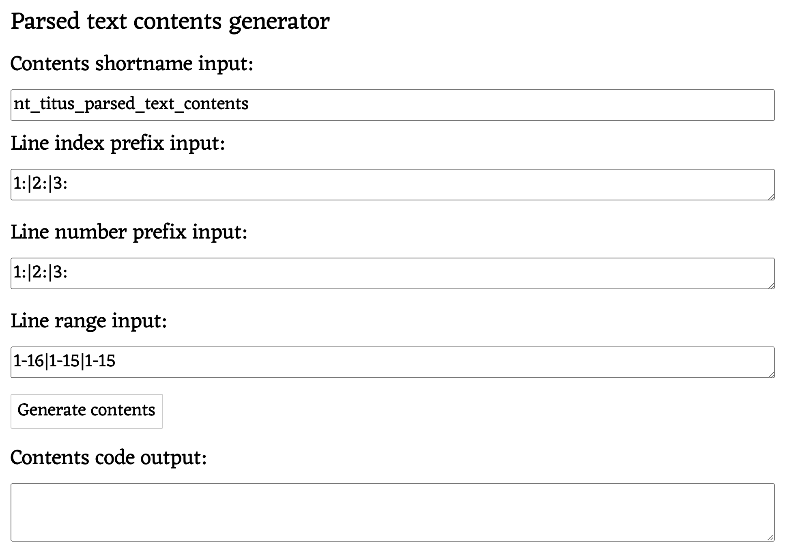
After filling fields with these values, click the button "Generate contents" and the contents code will be displayed in "Contents code output" textarea.
The code will be as this:
var nt_titus_parsed_text_contents = {
"title": ""
, "levelstart-1": ""
, "1:1": "1:1"
, "1:2": "1:2"
// part of code has been cut out
, "1:15": "1:15"
, "1:16": "1:16"
, "levelend-1": ""
, "levelstart-2": ""
, "2:1": "2:1"
, "2:2": "2:2"
// part of code has been cut out
, "2:14": "2:14"
, "2:15": "2:15"
, "levelend-2": ""
, "levelstart-3": ""
, "3:1": "3:1"
, "3:2": "3:2"
// part of code has been cut out
, "3:14": "3:14"
, "3:15": "3:15"
, "levelend-3": ""
};
Now let‘s copy this code to code editor and let‘s enter values for the keys "title" , "levelstart-1" , "levelstart-2", "levelstart-3". All these values should be in original language, in this case Greek. Since the key "title" is the index of the title, let‘s enter "Τίτλος" as the value of this key. Since the keys "levelstart-1" , "levelstart-2", "levelstart-3" are the indexes of the chapters, let‘s enter "Κεφάλαιον A'", "Κεφάλαιον Β'", "Κεφάλαιον Γ'" as the values of these keys.
After this the code will be as this:
var nt_titus_parsed_text_contents = {
"title": "Τίτλος"
, "levelstart-1": "Κεφάλαιον A'"
, "1:1": "1:1"
, "1:2": "1:2"
// part of code has been cut out
, "1:15": "1:15"
, "1:16": "1:16"
, "levelend-1": ""
, "levelstart-2": "Κεφάλαιον Β'"
, "2:1": "2:1"
, "2:2": "2:2"
// part of code has been cut out
, "2:14": "2:14"
, "2:15": "2:15"
, "levelend-2": ""
, "levelstart-3": "Κεφάλαιον Γ'"
, "3:1": "3:1"
, "3:2": "3:2"
// part of code has been cut out
, "3:14": "3:14"
, "3:15": "3:15"
, "levelend-3": ""
};
This code should be saved in the file having the same name as the value of the key "contents_shortname" which was entered when we listed resource as part of collection. The value of the key "contents_shortname" is "nt_titus_parsed_text_contents", so the filename should be "nt_titus_parsed_text_contents.js". The file should be placed in directory which has the same name as resource shortname. The resource shortname is "nt_titus_parsed_text", so the directory to place contents file should be /data/parsed_text/nt_titus_parsed_text/ .
Creating data file
Data file‘s name should be the same as resource shortname. The resource shortname is "nt_titus_parsed_text", so data file‘s name should be "nt_titus_parsed_text.js". Data file should be placed in directory having the same name: /data/parsed_text/nt_titus_parsed_text/ .
Tags and required attributes
Data file uses certain formatting conventions.
HTML "span" tag having class attribute "line" should wrap each line of the text.
"span" tag having class attribute "line-number" should wrap verse number in each line. The same "span" element should also have attribute "data-line-number" whose value should be line number.
"span" tag having class attribute "word" should wrap each word. The same "span" element should also have the attributes "data-form", "data-part-of-speech", "data-parsing", "data-lemma". These four attributes contain morphological data of the word.
"span" tag having class attribute "para" should mark start of each new paragraph.
HTML code formatted using these "span" tags should be converted to string and made the value of javascript global variable whose name is the same as resource shortname.
This way we get such data file:
nt_titus_parsed_text = `<span class="line"><span data-line-number="1:1" class="line-number">1:1</span> <span class="word" data-form="Παῦλος" data-part-of-speech="noun" data-parsing="nominative singular masculine" data-lemma="Παῦλος">Παῦλος</span>, <span class="word" data-form="δοῦλος" data-part-of-speech="noun" data-parsing="nominative singular masculine" data-lemma="δοῦλος">δοῦλος</span> <span class="word" data-form="θεοῦ" data-part-of-speech="noun" data-parsing="genitive singular masculine" data-lemma="θεός">θεοῦ</span>, <span class="word" data-form="ἀπόστολος" data-part-of-speech="noun" data-parsing="nominative singular masculine" data-lemma="ἀπόστολος">ἀπόστολος</span> <span class="word" data-form="δέ" data-part-of-speech="conjunction" data-parsing="" data-lemma="δέ">δὲ</span> <span class="word" data-form="Ἰησοῦ" data-part-of-speech="noun" data-parsing="genitive singular masculine" data-lemma="Ἰησοῦς">Ἰησοῦ</span> <span class="word" data-form="χριστοῦ" data-part-of-speech="noun" data-parsing="genitive singular masculine" data-lemma="χριστός">χριστοῦ</span>, <span class="word" data-form="κατά" data-part-of-speech="preposition" data-parsing="" data-lemma="κατά">κατὰ</span> <span class="word" data-form="πίστιν" data-part-of-speech="noun" data-parsing="accusative singular feminine" data-lemma="πίστις">πίστιν</span> <span class="word" data-form="ἐκλεκτῶν" data-part-of-speech="adjective" data-parsing="genitive plural masculine" data-lemma="ἐκλεκτός">ἐκλεκτῶν</span> <span class="word" data-form="θεοῦ" data-part-of-speech="noun" data-parsing="genitive singular masculine" data-lemma="θεός">θεοῦ</span> <span class="word" data-form="καί" data-part-of-speech="conjunction" data-parsing="" data-lemma="καί">καὶ</span> <span class="word" data-form="ἐπίγνωσιν" data-part-of-speech="noun" data-parsing="accusative singular feminine" data-lemma="ἐπίγνωσις">ἐπίγνωσιν</span> <span class="word" data-form="ἀληθείας" data-part-of-speech="noun" data-parsing="genitive singular feminine" data-lemma="ἀλήθεια">ἀληθείας</span> <span class="word" data-form="τῆς" data-part-of-speech="article" data-parsing="genitive singular feminine" data-lemma="ὁ">τῆς</span> <span class="word" data-form="κατά" data-part-of-speech="preposition" data-parsing="" data-lemma="κατά">κατ’</span> <span class="word" data-form="εὐσέβειαν" data-part-of-speech="noun" data-parsing="accusative singular feminine" data-lemma="εὐσέβεια">εὐσέβειαν</span>, </span> <span class="line"><span data-line-number="1:2" class="line-number">1:2</span> <span class="word" data-form="ἐπί" data-part-of-speech="preposition" data-parsing="" data-lemma="ἐπί">ἐπ’</span> <span class="word" data-form="ἐλπίδι" data-part-of-speech="noun" data-parsing="dative singular feminine" data-lemma="ἐλπίς">ἐλπίδι</span> <span class="word" data-form="ζωῆς" data-part-of-speech="noun" data-parsing="genitive singular feminine" data-lemma="ζωή">ζωῆς</span> <span class="word" data-form="αἰωνίου" data-part-of-speech="adjective" data-parsing="genitive singular feminine" data-lemma="αἰώνιος">αἰωνίου</span>, <span class="word" data-form="ἥν" data-part-of-speech="relative pronoun" data-parsing="accusative singular feminine" data-lemma="ὅς">ἣν</span> <span class="word" data-form="ἐπηγγείλατο" data-part-of-speech="verb" data-parsing="aorist middle indicative 3rd person singular" data-lemma="ἐπαγγέλλομαι">ἐπηγγείλατο</span> <span class="word" data-form="ὁ" data-part-of-speech="article" data-parsing="nominative singular masculine" data-lemma="ὁ">ὁ</span> <span class="word" data-form="ἀψευδής" data-part-of-speech="adjective" data-parsing="nominative singular masculine" data-lemma="ἀψευδής">ἀψευδὴς</span> <span class="word" data-form="θεός" data-part-of-speech="noun" data-parsing="nominative singular masculine" data-lemma="θεός">θεὸς</span> <span class="word" data-form="πρό" data-part-of-speech="preposition" data-parsing="" data-lemma="πρό">πρὸ</span> <span class="word" data-form="χρόνων" data-part-of-speech="noun" data-parsing="genitive plural masculine" data-lemma="χρόνος">χρόνων</span> <span class="word" data-form="αἰωνίων" data-part-of-speech="adjective" data-parsing="genitive plural masculine" data-lemma="αἰώνιος">αἰωνίων</span>, </span> <span class="line"><span data-line-number="1:3" class="line-number">1:3</span> <span class="word" data-form="ἐφανέρωσε(ν)" data-part-of-speech="verb" data-parsing="aorist active indicative 3rd person singular" data-lemma="φανερόω">ἐφανέρωσεν</span> <span class="word" data-form="δέ" data-part-of-speech="conjunction" data-parsing="" data-lemma="δέ">δὲ</span> <span class="word" data-form="καιροῖς" data-part-of-speech="noun" data-parsing="dative plural masculine" data-lemma="καιρός">καιροῖς</span> <span class="word" data-form="ἰδίοις" data-part-of-speech="adjective" data-parsing="dative plural masculine" data-lemma="ἴδιος">ἰδίοις</span> <span class="word" data-form="τόν" data-part-of-speech="article" data-parsing="accusative singular masculine" data-lemma="ὁ">τὸν</span> <span class="word" data-form="λόγον" data-part-of-speech="noun" data-parsing="accusative singular masculine" data-lemma="λόγος">λόγον</span> <span class="word" data-form="αὐτοῦ" data-part-of-speech="personal pronoun" data-parsing="genitive singular masculine" data-lemma="αὐτός">αὐτοῦ</span> <span class="word" data-form="ἐν" data-part-of-speech="preposition" data-parsing="" data-lemma="ἐν">ἐν</span> <span class="word" data-form="κηρύγματι" data-part-of-speech="noun" data-parsing="dative singular neuter" data-lemma="κήρυγμα">κηρύγματι</span> <span class="word" data-form="ὅ" data-part-of-speech="relative pronoun" data-parsing="accusative singular neuter" data-lemma="ὅς">ὃ</span> <span class="word" data-form="ἐπιστεύθην" data-part-of-speech="verb" data-parsing="aorist passive indicative 1st person singular" data-lemma="πιστεύω">ἐπιστεύθην</span> <span class="word" data-form="ἐγώ" data-part-of-speech="personal pronoun" data-parsing="nominative singular" data-lemma="ἐγώ">ἐγὼ</span> <span class="word" data-form="κατά" data-part-of-speech="preposition" data-parsing="" data-lemma="κατά">κατ’</span> <span class="word" data-form="ἐπιταγήν" data-part-of-speech="noun" data-parsing="accusative singular feminine" data-lemma="ἐπιταγή">ἐπιταγὴν</span> <span class="word" data-form="τοῦ" data-part-of-speech="article" data-parsing="genitive singular masculine" data-lemma="ὁ">τοῦ</span> <span class="word" data-form="σωτῆρος" data-part-of-speech="noun" data-parsing="genitive singular masculine" data-lemma="σωτήρ">σωτῆρος</span> <span class="word" data-form="ἡμῶν" data-part-of-speech="personal pronoun" data-parsing="genitive plural" data-lemma="ἐγώ">ἡμῶν</span> <span class="word" data-form="θεοῦ" data-part-of-speech="noun" data-parsing="genitive singular masculine" data-lemma="θεός">θεοῦ</span>, </span>`; // part of code has been cut out
Optional attributes
It happens, that more than one word has the same lemma. E.g. in Greek-English lexicon to the New Testament by Th. S. Green two words have the lemma δέω, two words have the lemma μήν, and two words have the lemma ὅτι. If one clicks in parsed text resource on the word whose lemma has more than one article in the dictionary, then by default the first article will be crolled into view.
In cases second, third etc. lexicon article should be loaded we need to use two additional attributes for the tag "span" having class "word". These are attributes "data-lexicon" and "data-lexicon-entry". The value of the attribute "data-lexicon" should be resource shortname of the relevant lexicon; the value of the attribute "data-lexicon-entry" should be order number of the entry which should be scrolled into view. E.g. the verse Matthew 9:38 contains the word δεήθητε, whose lemma is δέω. The needed article in Green's lexicon is second article for the lemma δέω. To load second article the code for the word δεήθητε in parsed text resource should be as this:
` <span class="word" data-form="δεήθητε" data-part-of-speech="verb" data-parsing="aorist passive imperative 2nd person plural" data-lemma="δέω" data-lexicon="greek_lexicon_to_nt_by_green" data-lexicon-entry="2">δεήθητε</span>`
In case we added two or more lexicon resources in which two or more words have the lemma, we need use pipe symbol inside attributes "data-lexicon" and "data-lexicon-entry":
` <span class="word" data-form="δεήθητε" data-part-of-speech="verb" data-parsing="aorist passive imperative 2nd person plural" data-lemma="δέω" data-lexicon="greek_lexicon_to_nt_by_green|greek_latin_lexicon_by_zorell" data-lexicon-entry="2|2">δεήθητε</span>`
Parsing scheme
"span" tag having class attribute "word" should wrap each word in the data file. This "span" tag also has the attributes "data-form", "data-part-of-speech", "data-parsing", "data-lemma which contain morphological data of the word.
The attribute "data-form" contains as its value the same form of the word which "span" tag wraps. Usually the word wrapped and the value of "data-form" are exactly the same. But in some cases, as word undergoing elision or word having movable consonant or word having several orthographic variants, the word wrapped and the value of "data-form" will be slightly different.
The attribute "data-lemma" contains as its value the dictionary lemma of the wrapped word.
The attribute "data-part-of-speech" contains as its value the name of the part of speech the wrapped word belongs to.
The attribute "data-parsing" contains as its value parsing data of the wrapped word except the part of speech.
The values of the attributes "data-part-of-speech" and "data-parsing" are entered according to parsing scheme. The attribute "data-part-of-speech" always must have a value and always contains one piece of data. The attribute "data-parsing" can be empty or contain one or more pieces of data. In case the attribute "data-parsing" contains several pieces of data, these pieces should be in proper order, i.e. each piece has its own position. E.g. the value of the attribute "data-parsing" for nouns should consist of case, number and gender exactly in this order.
The following table presents parsing scheme which is used to enter values for "data-part-of-speech" and "data-parsing" attributes:
| Attribute "data-part-of-speech" | Attribute "data-parsing" | |
|---|---|---|
| Possible values | Position name | Possible values |
| verb | tense |
present imperfect future aorist perfect pluperfect |
| voice |
active middle passive |
|
| mood |
indicative subjunctive optative imperative |
|
| person |
1st person 2nd person 3rd person |
|
| number |
singular dual plural |
|
| verb | tense |
present imperfect future aorist perfect pluperfect |
| voice |
active middle passive |
|
| participle | participle | |
| case |
nominative genitive dative accusative voccative |
|
| number |
singular dual plural |
|
| gender |
masculine feminine neuter |
|
| verb | tense |
present imperfect future aorist perfect pluperfect |
| voice |
active middle passive |
|
| infinitive | infinitive | |
| noun | case |
nominative genitive dative accusative voccative |
| number |
singular dual plural |
|
| gender |
masculine feminine neuter |
|
| adjective | case |
nominative genitive dative accusative voccative |
| number |
singular dual plural |
|
| gender |
masculine feminine neuter |
|
| article | case |
nominative genitive dative accusative voccative |
| number |
singular dual plural |
|
| gender |
masculine feminine neuter |
|
| demonstrative | case |
nominative genitive dative accusative voccative |
| number |
singular dual plural |
|
| gender |
masculine feminine neuter |
|
| personal pronoun | case |
nominative genitive dative accusative voccative |
| number |
singular dual plural |
|
| gender |
masculine feminine neuter |
|
| relative pronoun | case |
nominative genitive dative accusative voccative |
| number |
singular dual plural |
|
| gender |
masculine feminine neuter |
|
| interrogative/indefinite pronoun | case |
nominative genitive dative accusative voccative |
| number |
singular dual plural |
|
| gender |
masculine feminine neuter |
|
| adverb | ||
| conjunction | ||
| preposition | ||
| particle | ||
Notice, that there are in this table 3 entries for the value "verb" of the "data-part-of-speech" attribute: first for finite verb, second – for participle and the third – for infinitive.
Coding and parsing policy
Dealing with missing and differently numbered lines
It happens, that some lines of the classical text, which are included in some critical editions, are considered inauthentic and excluded from other editions. E.g. lines 16:25-27 of apostle Paul's epistle to Romans are included in Scrivener's edition, in Westcott and Hort's edition, and in Nestle and Nestle's edition of the New Testament, but are excluded from Robinson and Pierpont's edition and from Antoniadis's edition; in Westcott and Hort's edition and in Nestle and Nestle's edition of the New Testament the line 16:24 is not included.
So, it may be that the critical edition parsed text resource is based on lacks certain lines included in some other critical edition. In such case parsed text resource should include the line numbers of missing lines. In the parsed text of the apostle Paul's epistle to Romans which is based on Robinson and Pierpont's edition of the New Testament, the lines 16:25-27 are represented in parsed text resource's data file by their line numbers:
`<span class="line"><span data-line-number="16:25" class="line-number">16:25</span></span> <span class="line"><span data-line-number="16:26" class="line-number">16:26</span></span> <span class="line"><span data-line-number="16:27" class="line-number">16:27</span></span>`
After including numbers of missing lines in parsed text resource's data file we should not forget to to add these same lines into contents file.
Also it happens that some lines of the classical text are numbered slightly differently in some critical editions. E.g. the line from apostle John's Third Catholic epistle, which in Robinson and Pierpont's edition of the New Testament is numbered as 1:14, in Antoniadis's edition, in Scrivener's edition, in Westcott and Hort's edition and in Nestle and Nestle's edition is numbered as lines 1:14-15. In cases when numbering of lines has some differences across critical editions, it is best for parsed text to accept the most common numbering of lines.
Dealing with crasis
Cases of crasis, such as κἀκεῖ, κἀκεῖθεν, κἀκεῖνος, κἄν, ταὐτά, τοὐναντίον, τοὔνομα, τουτέστι, although might be explained in certain dictionaries, should be treated as two words and those two words should be parsed separately. The "span" tag of the first word should contain that part of the crasis expression which is before vowel having breathing mark, and the "span" tag of the second word should contain part of the crasis expression starting with vowel having breathing mark to the end of expression. E.g. in case of crasis expression κἀκεῖθεν the "span" tag of the first word will contain "κ" and the "span" tag of the second word will contain "ἀκεῖθεν". The code for crasis expression κἀκεῖθεν will be this:
`<span class="word" data-form="καί" data-part-of-speech="conjunction" data-parsing="" data-lemma="καί">κ</span><span class="word" data-form="ἐκεῖθεν" data-part-of-speech="adverb" data-parsing="" data-lemma="ἐκεῖθεν">ἀκεῖθεν</span>`
Dealing with punctuation
Punctuation marks, i.e. symbols ",", ".", "·", ";", "–", "—" should be outside "span" tag having class atribute "word", that is, "span" tag should not wrap the word together with punctuation symbol. E.g. in Matthew 2:10 there are punctuation marks "," and ".":
`<span class="line"><span data-line-number="2:10" class="line-number">2:10</span> <span class="word" data-form="ἰδόντες" data-part-of-speech="verb" data-parsing="aorist active participle nominative plural masculine" data-lemma="ὁράω">Ἰδόντες</span> <span class="word" data-form="δέ" data-part-of-speech="conjunction" data-parsing="" data-lemma="δέ">δὲ</span> <span class="word" data-form="τόν" data-part-of-speech="article" data-parsing="accusative singular masculine" data-lemma="ὁ">τὸν</span> <span class="word" data-form="ἀστέρα" data-part-of-speech="noun" data-parsing="accusative singular masculine" data-lemma="ἀστήρ">ἀστέρα</span>, <span class="word" data-form="ἐχάρησαν" data-part-of-speech="verb" data-parsing="aorist passive indicative 3rd person plural" data-lemma="χαίρω">ἐχάρησαν</span> <span class="word" data-form="χαράν" data-part-of-speech="noun" data-parsing="accusative singular feminine" data-lemma="χαρά">χαρὰν</span> <span class="word" data-form="μεγάλην" data-part-of-speech="adjective" data-parsing="accusative singular feminine" data-lemma="μέγας">μεγάλην</span> <span class="word" data-form="σφόδρα" data-part-of-speech="adverb" data-parsing="" data-lemma="σφόδρα">σφόδρα</span>.' + </span>`
The exception is apostroph symbol "’" marking elision. It should be inside "span" tag having class atribute "word", that is, "span" tag should wrap the word together with apostroph symbol. E.g. in Matthew 2:12 there are two apostroph symbols:
`<span class="line"><span data-line-number="2:12" class="line-number">2:12</span> <span class="word" data-form="καί" data-part-of-speech="conjunction" data-parsing="" data-lemma="καί">Καὶ</span> <span class="word" data-form="χρηματισθέντες" data-part-of-speech="verb" data-parsing="aorist passive participle nominative plural masculine" data-lemma="χρηματίζω">χρηματισθέντες</span> <span class="word" data-form="κατά" data-part-of-speech="preposition" data-parsing="" data-lemma="κατά">κατ’</span> <span class="word" data-form="ὄναρ" data-part-of-speech="noun" data-parsing="accusative singular neuter" data-lemma="ὄναρ">ὄναρ</span> <span class="word" data-form="μή" data-part-of-speech="adverb" data-parsing="" data-lemma="μή">μὴ</span> <span class="word" data-form="ἀνακάμψαι" data-part-of-speech="verb" data-parsing="aorist active infinitive" data-lemma="ἀνακάμπτω">ἀνακάμψαι</span> <span class="word" data-form="πρός" data-part-of-speech="preposition" data-parsing="" data-lemma="πρός">πρὸς</span> <span class="word" data-form="Ἡρῴδην" data-part-of-speech="noun" data-parsing="accusative singular masculine" data-lemma="Ἡρῴδης">Ἡρῴδην</span>, <span class="word" data-form="διά" data-part-of-speech="preposition" data-parsing="" data-lemma="διά">δι’</span> <span class="word" data-form="ἄλλης" data-part-of-speech="adjective" data-parsing="genitive singular feminine" data-lemma="ἄλλος">ἄλλης</span> <span class="word" data-form="ὁδοῦ" data-part-of-speech="noun" data-parsing="genitive singular feminine" data-lemma="ὁδός">ὁδοῦ</span> <span class="word" data-form="ἀνεχώρησαν" data-part-of-speech="verb" data-parsing="aorist active indicative 3rd person plural" data-lemma="ἀναχωρέω">ἀνεχώρησαν</span> <span class="word" data-form="εἰς" data-part-of-speech="preposition" data-parsing="" data-lemma="εἰς">εἰς</span> <span class="word" data-form="τήν" data-part-of-speech="article" data-parsing="accusative singular feminine" data-lemma="ὁ">τὴν</span> <span class="word" data-form="χώραν" data-part-of-speech="noun" data-parsing="accusative singular feminine" data-lemma="χώρα">χώραν</span> <span class="word" data-form="αὐτῶν" data-part-of-speech="personal pronoun" data-parsing="genitive plural masculine" data-lemma="αὐτός">αὐτῶν</span>. </span>`
Dealing with alternative characters
In unicode two or more code points may encode characters which look identically or have only stylistic difference. In order for all functionality to work correctly the uniformity of encoding must be enforced by using only characters from certain "standard" set. To achieve this go to Unicode Characters changer and use the form to change unicode characters into "standard" ones.
Original text (scanned)
In principle, resources belonging to type "Original text" can be either scanned or transcribed, but they surely will be all scanned because it is very difficult to reproduce complex formatting of the scholarly editions using very limitted means available in HTML. So, only creation of scanned resources of the type "Critical edition" will be described in Editor's documentation.
Creating image files
To create scanned resource of the type "Critical edition" you first need a series of JPG images, each image picturing one page of the book. Scanned resource always includes all pages of the book, i.e. each page from the title page to the last, not including covers and promotional materials. About creating a series of JPG files for scanned resource, read in Common tasks.
When you have a series of JPG files each image picturing one page of the book and named starting from page0001.jpg, submit them to the senior editor who will upload those files to the server. The files will be uploaded to the directory which was entered as value of the key "scanned_source_shortname" when original text resource was listed as part of collection. For example, in the Epistle to Titus collection the original text edited by V. Antoniadis has been listed and the value of the key "scanned_source_shortname" is "kaine_diatheke_ed_antoniadis". It means that the pictures of the pages must be uploaded to the directory /_scans/kaine_diatheke_ed_antoniadis/ .
Having uploaded the images of the pages to the server, senior editor should list the scanned book as described in section Listing scanned books.
After uploading the files of the scanned book and listing it among scanned books, it can be browsed using the value of the key "scanned_source_shortname" in the URL: parsedclassics.com/reader/embedded_bookreader.html?kaine_diatheke_ed_antoniadis .
Creating contents file
In order for critical edition to work in sync with parsed text, the contents file must be created. To create contents file go to Scanned book contents generator page and fill the form:
The value of the form‘s field "Line range" should be pipe delimited line ranges. In Epistle to Titus there are three chapters, the first having 16 verses, the second – 15 verses and the third – 15 verses. So, the value of this field should be 1-16|1-15|1-15 .
The value of the form‘s field "Prefix" should be be pipe delimited line prefixes, one for each chapter. The chapters of the New Testament are usually indicated by the number written to the left from verse number; colon usually used to separate chapter number from verse number. So, the value for this field is 1:|2:|3: .
The value of the form‘s field "Contents shortname" should be the same as the value of the key "contents_shortname" which was entered while listing resource as part of collection. The value we entered for this key was "nt_titus_ed_antoniadis_contents", so we now should enter it as the value of the field "Contents shortname".
After filling fields with these values, click the button "Generate contents" and the contents code will be displayed in "Contents code output" textarea.
The code will be as this:
nt_titus_ed_antoniadis_contents = {
"title": ""
, "1:1": ""
, "1:2": ""
// part of code has been cut out
, "1:15": ""
, "1:16": ""
, "2:1": ""
, "2:2": ""
// part of code has been cut out
, "2:14": ""
, "2:15": ""
, "3:1": ""
, "3:2": ""
// part of code has been cut out
, "3:14": ""
, "3:15": ""
};
Now we need to enter values for each key of this JSON object. The keys are indexes of lines of the parsed text. "title" is the index of the title of the parsed text. The values should be numbers from image file names (without zero padding). View images of the scanned files, look for the numbers in their file names and enter those numbers as the values for relevant keys.
nt_titus_ed_antoniadis_contents = {
"title": "451"
, "1:1": "451"
, "1:2": "451"
// part of code has been cut out
, "1:15": "451"
, "1:16": "451"
, "2:1": "452"
, "2:2": "452"
// part of code has been cut out
, "2:14": "452"
, "2:15": "452"
, "3:1": "452"
, "3:2": "452"
// part of code has been cut out
, "3:14": "453"
, "3:15": "453"
};
This code should be saved in the file having the same name as the value in "Contents shortname" field in the form, so it will be nt_titus_ed_antoniadis_contents.js . The file should be placed in directory whose name is the same as resource shortname. Resource shortname is "nt_titus_text_ed_antoniadis" so the directory will be /data/original_text/nt_titus_text_ed_antoniadis/ .
After doing this critical edition resource should work in sync with parsed text resource.
Concordance (scanned)
Creating image files
To create scanned resource of the type "Concordance" you first need a series of JPG images, each image picturing one page of the book. Scanned resource always includes all pages of the book, i.e. each page from the title page to the last, not including covers and promotional materials. About creating a series of JPG files for scanned resource, read in Common tasks.
When you have a series of JPG files each image picturing one page of the book and named starting from page0001.jpg, submit them to the senior editor who will upload those files to the server. The files will be uploaded to the directory which was entered as value of the key "scanned_source_shortname" when concordance resource was listed as part of collection. For example, in the Epistle to Titus collection the concordance edited by W. F. Moulton and A. S. Geden has been listed and the value of the key "scanned_source_shortname" is "concordance_to_greek_testament_by_moulton_geden". It means that the pictures of the pages must be uploaded to the directory /_scans/concordance_to_greek_testament_by_moulton_geden/ .
Having uploaded the images of the pages to the server, senior editor should list the scanned book as described in section Listing scanned books.
After uploading the files of the scanned book and listing it among scanned books, it can be browsed using the value of the key "scanned_source_shortname" in the URL: parsedclassics.com/reader/embedded_bookreader.html?concordance_to_greek_testament_by_moulton_geden .
In order for concordance to work in sync with parsed text, the contents file should be prepared. The same concordance resource can be listed as part of several collections. This means that there could be two cases: (1) there is no contents file and we need to create it; (2) there is contents file, but the words of certain classics book are not fully dealt with, so we need to supplement it.
Creating contents file
To create new contents file go to Word list generator page and fill the form:
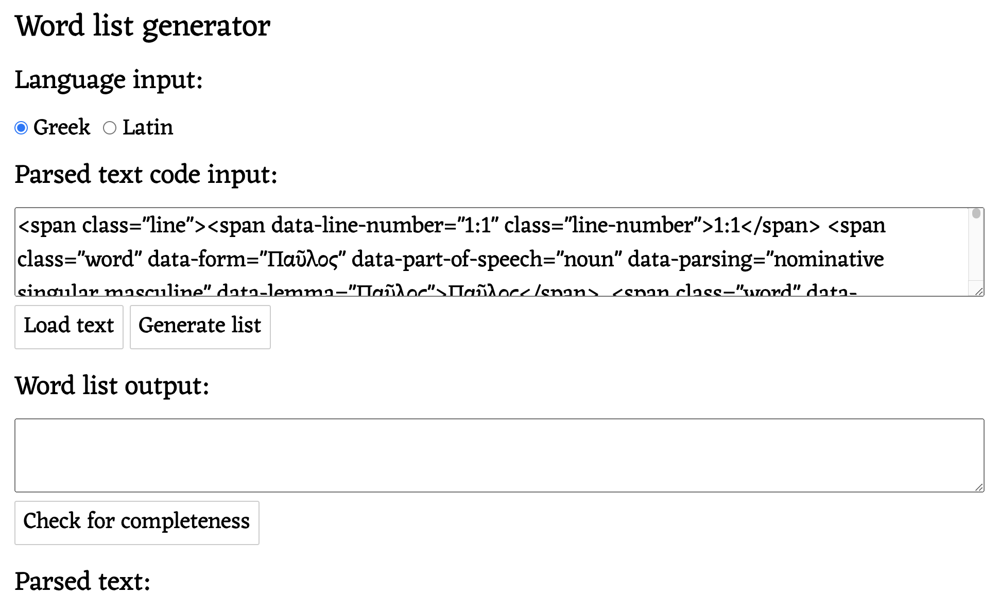
The value of the form‘s field "Language" should be "Greek" because in Epistle to Titus collection parsed text resource is in Greek.
The value of the form‘s field "Parsed text code" should be full HTML code of the parsed text. Use browser’s HTML inspector (available on right-click in every major browser) to copy parsed text's HTML code from Library app’s page. To do this right-click inside HTML inspector's panel on the "div" element having "class" attribute "parsed-text-split-top" and in context menu select option "Copy outerHTML":
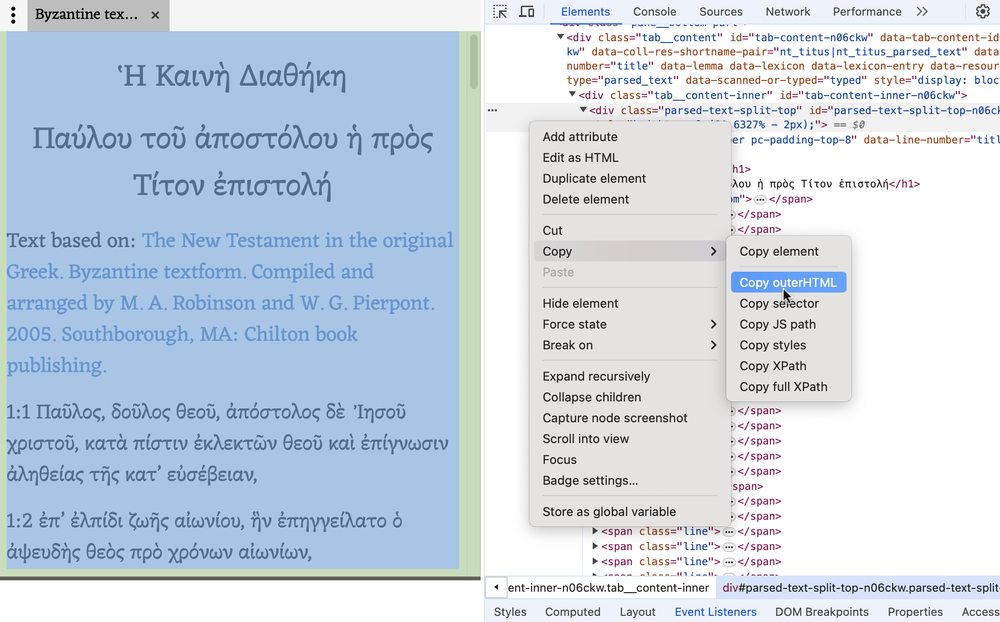
Then paste the copied string into form‘s field. After that select and delete all code before first "span" tag having "class" attribute "line" and closing "div" tag from the code pasted into field:
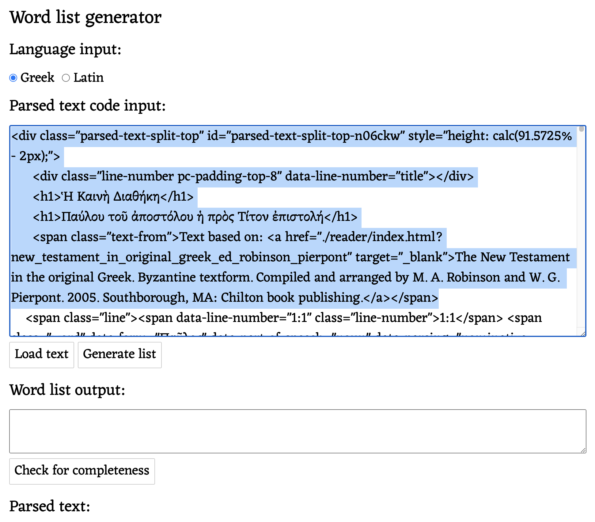
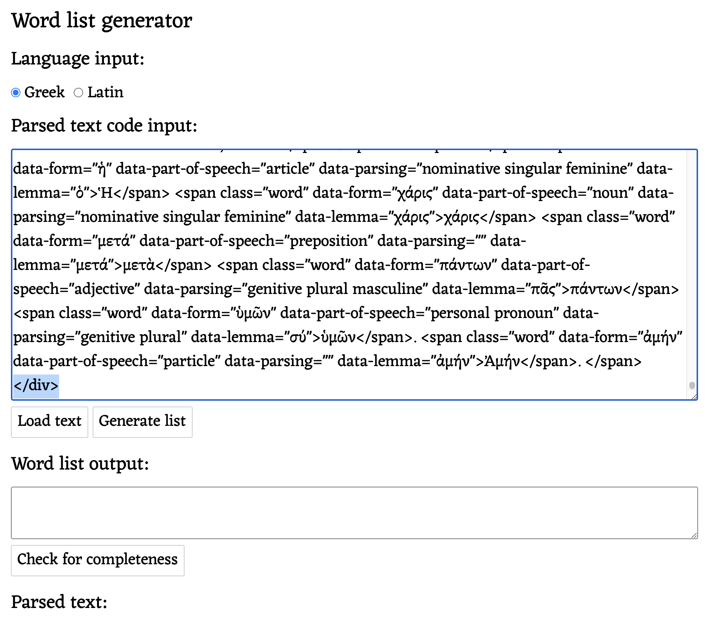
After filling fields with these values, click the button "Load text" and the text will be displayed beneath "Parsed text" heading.
After loading text click the button "Generate list" and the pipe delimited alphabetical list of all words in the text will appear in "Word list" textarea.
The word list will be as this:
ἀγαθός|ἀγάπη|ἅγιος|ἁγνός|ἀδιαφθορία|ἀδόκιμος|ἀεί|αἱρετικός|αἰσχροκερδής|αἰσχρός|αἰτία|αἰών|αἰώνιος|ἄκαρπος|ἀκατάγνωστος|ἀλήθεια|ἀληθής|ἀλλά|ἀλλήλων|ἁμαρτάνω|ἄμαχος|ἀμήν|ἀναγκαῖος|ἀνακαίνωσις|ἀνατρέπω|ἀνέγκλητος|ἀνήρ|ἄνθρωπος|ἀνόητος|ἀνομία|ἀντέχομαι|ἀντιλέγω|ἀνυπότακτος|ἀνωφελής|ἀπειθής|ἄπιστος|ἀπό|Ἀπολλῶς|ἀπόστολος|ἀποστρέφω|ἀποτόμως|ἀργός|ἀρνέομαι|Ἀρτεμᾶς|ἀρχή|ἀσέβεια|ἀσπάζομαι|ἀσωτία|αὐθάδης|αὐτοκατάκριτος|αὐτός|ἀφθαρσία|ἀψευδής|βδελυκτός|βλασφημέω|βούλομαι|γάρ|γαστήρ|γενεαλογία|γίνομαι|γνήσιος|γυνή|δέ|δεσπότης|δεύτερος|δέω|διά|διαβεβαιόομαι|διάβολος|διάγω|διατάσσω|διδασκαλία|διδάσκω|διδαχή|δίδωμι|δίκαιος|δικαιοσύνη|δικαιόω|δικαίως|δόξα|δουλεύω|δοῦλος|δουλόω|δυνατός|ἑαυτοῦ|ἐγκρατής|ἐγώ|εἰ|εἰμί|εἰρήνη|εἷς|εἰς|ἐκ|ἐκεῖ|ἐκεῖνος|ἐκλεκτός|ἐκστρέφομαι|ἐκχέω|ἐλέγχω|ἔλεος|ἐλπίς|ἐν|ἐναντίος|ἐνδείκνυμι|ἐντολή|ἐντρέπω|ἐξουσία|ἐπαγγέλλομαι|ἐπί|ἐπίγνωσις|ἐπιδιορθόω|ἐπιεικής|ἐπιθυμία|ἐπίσκοπος|ἐπιστομίζω|ἐπιταγή|ἐπιφαίνω|ἐπιφάνεια|ἔργον|ἔρις|ἔρχομαι|ἕτοιμος|εὐάρεστος|εὐσέβεια|εὐσεβῶς|ἔχω|ζάω|ζηλωτής|Ζηνᾶς|ζήτησις|ζωή|ἤ|ἡδονή|ἡμέτερος|θεός|θηρίον|ἴδιος|ἱεροπρεπής|Ἰησοῦς|ἵνα|Ἰουδαϊκός|καθαρίζω|καθαρός|καθίστημι|καί|καιρός|κακία|κακός|καλοδιδάσκαλος|καλός|κατά|καταλείπω|κατάστημα|κατηγορία|κέρδος|κήρυγμα|κληρονόμος|κοινός|κοσμέω|κοσμικός|Κρής|Κρήτη|κρίνω|κύριους|λαλέω|λαός|λέγω|λείπω|λόγος|λουτρόν|λυτρόομαι|μακάριος|μάλιστα|μανθάνω|μαρτυρία|ματαιολόγος|μάταιος|μάχη|μέγας|μέν|μετά|μή|μηδείς|μιαίνω|μισέω|μῦθος|μωρός|νέος|νηφάλιος|Νικόπολις|νομικός|νοσφίζομαι|νουθεσία|νοῦς|νῦν|ὁ|οἶδα|οἰκονόμος|οἶκος|οἰκουργός|οἶνος|ὅλος|ὁμολογέω|ὁράω|ὀργίλος|ὅς|ὅσιος|ὅστις|ὅταν|ὅτε|ὅτι|οὐ|οὐδείς|οὗτος|παιδεύω|παλιγγενεσία|παραιτέομαι|παρακαλέω|παραχειμάζω|παρέχω|πάροινος|πᾶς|πατήρ|Παῦλος|πειθαρχέω|πέμπω|περί|περιΐστημι|περιούσιος|περιτομή|περιφρονέω|πιστεύω|πίστις|πιστός|πλανάω|πλήκτης|πλουσίως|πνεῦμα|ποιέω|ποικίλος|πόλις|πολύς|ποτέ|πραΰτης|πρέπω|πρεσβύτερος|πρεσβύτης|πρεσβῦτις|πρό|προΐστημι|προπέμπω|πρός|προσδέχομαι|προσέχω|προφήτης|σεαυτοῦ|σεμνός|σεμνότης|σπουδάζω|σπουδαίως|στυγητός|σύ|συνείδησις|σῴζω|σωτήρ|σωτήριος|σωφρονέω|σωφρονίζω|σωφρόνως|σώφρων|τέκνον|τίς|τις|Τίτος|τοιοῦτος|τύπος|Τυχικός|ὑγιαίνω|ὑγιής|ὑπέρ|ὑπομιμνῄσκω|ὑπομονή|ὑποτάσσω|φανερόω|φαῦλος|φθόνος|φιλάγαθος|φίλανδρος|φιλανθρωπία|φιλέω|φιλόξενος|φιλότεκνος|φρεναπάτης|φροντίζω|χάριν|χάρις|χρεία|χρηστότης|χριστός|χρόνος|ψεύστης|ὡς|ὡσαύτως|ὠφέλιμος
Then click the button "Check for completeness". After this all words beneath the heading "Parsed text" should be displayed on green backgound. If some words remain on white background, it means that the script was not able to generate complete list of words. Inform about it senior editor.
When you have pipe delimited alphabetical list of all words in the parsed text, go to Lexicon contents generator page and fill the form:
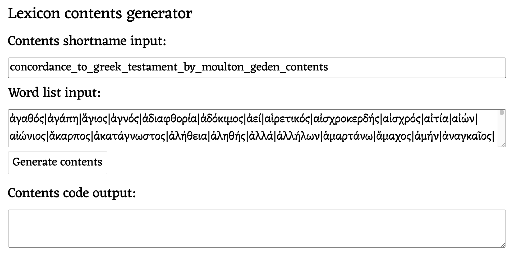
The value of the form‘s field "Contents shortname" should be the same as the value of the key "contents_shortname" we entered when we listed resource. We entered for this key the value "oncordance_to_greek_testament_by_moulton_geden_contents", so we now should enter it as the value of the field.
The value of the form‘s field "Word list" should be just created pipe delimited alphabetical list of all words in the parsed text.
After filling fields with these values click the button "Generate contents" and the contents code will appear in "Contents code" textarea.
The contents code will be as this:
concordance_to_greek_testament_by_moulton_geden_contents = {
/*Title page*/ "title": ""
, /*ἀγαθός*/ "w-7936-947-945-952-972-962": ""
, /*ἀγάπη*/ "w-7936-947-940-960-951": ""
, /*ἅγιος*/ "w-7941-947-953-959-962": ""
, /*ἁγνός*/ "w-7937-947-957-972-962": ""
// part of code has been cut out
, /*χριστός*/ "w-967-961-953-963-964-972-962": ""
, /*χρόνος*/ "w-967-961-972-957-959-962": ""
, /*ψεύστης*/ "w-968-949-973-963-964-951-962": ""
, /*ὡς*/ "w-8033-962": ""
, /*ὡσαύτως*/ "w-8033-963-945-973-964-969-962": ""
, /*ὠφέλιμος*/ "w-8032-966-941-955-953-956-959-962": ""
};
Now we need to enter values for each key of this JSON object. The keys are strings starting with "w" and consisting from numerical letter codes. "title" is the key for the title page of the concordane. The values should be numbers from image file names (without zero padding). View images of the scanned files, look for the numbers in their file names and enter those numbers as the values for relevant keys.
We get the following code:
concordance_to_greek_testament_by_moulton_geden_contents = {
/*Title page*/ "title": "3"
, /*ἀγαθός*/ "w-7936-947-945-952-972-962": "14"
, /*ἀγάπη*/ "w-7936-947-940-960-951": "18"
, /*ἅγιος*/ "w-7941-947-953-959-962": "23"
, /*ἁγνός*/ "w-7937-947-957-972-962": "26"
// part of code has been cut out
, /*χριστός*/ "w-967-961-953-963-964-972-962": "1023"
, /*χρόνος*/ "w-967-961-972-957-959-962": "1030"
, /*ψεύστης*/ "w-968-949-973-963-964-951-962": "1034"
, /*ὡς*/ "w-8033-962": "1038"
, /*ὡσαύτως*/ "w-8033-963-945-973-964-969-962": "1043"
, /*ὠφέλιμος*/ "w-8032-966-941-955-953-956-959-962": "1044"
};
This code should be saved in the file having the same name as the value in "Contents shortname" field in the form. The file should be placed in directory whose name is the same as resource shortname. Resource shortname is "concordance_by_moulton_geden" so the directory will be /data/concordance/concordance_by_moulton_geden/
After doing this Concordance resource should work in sync with parsed text resource.
Supplementing contents file
In case there is already contents file which contains words from one book of classics text, and we want that contents file would include also the words from other book of classics text, we need to supplement contents.
To do this go to Lexicon contents supplementer page and fill the form:
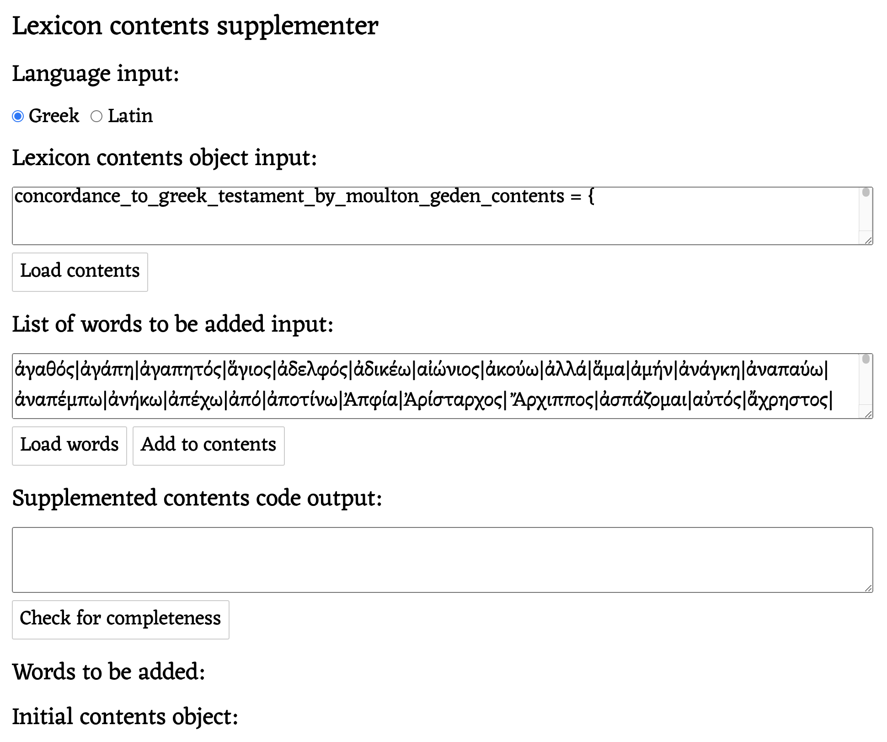
The value of the form‘s field "Language" should be "Greek" because in Epistle to Titus collection parsed text resource is in Greek.
The value of the form‘s field "Lexicon contents object" should be complete content of the concordance contents file. In previous section we saved it as /data/concordance/concordance_by_moulton_geden/concordance_to_greek_testament_by_moulton_geden_contents.js .
The value of the form‘s field "List of words to be added" should be pipe delimited alphabetical list of words contained in parsed text resource. How to create such word list has been described in previous section. Here in this field we added list of words contained in parsed text resource from Epistle to Philemon collection.
After filling fields with these values, click the button "Load contents" and the code of the concordance contents object will be displayed beneath "Initial contents object" heading.
Then click the button "Load words" and the list of words to be added to contents will be displayed beneath "Words to be added" heading.
After that click the button "Add to contents" and the code of supplemented contents object will appear in "Supplemented contents code" textarea.
Then click the button "Check for completeness" and all words beneath the headings "Words to be added" and "Initial contents object" should be displayed in green background. If some words will not be displayed in green background, inform about it senior editor.
The code generated will be as this:
concordance_to_greek_testament_by_moulton_geden_contents = {
/*Title page*/ "title": "3"
, /*ἀγαθός*/ "w-7936-947-945-952-972-962": "14"
, /*ἀγάπη*/ "w-7936-947-940-960-951": "18"
, /*ἀγαπητός*/ "w-7936-947-945-960-951-964-972-962": ""
, /*ἅγιος*/ "w-7941-947-953-959-962": "23"
, /*ἁγνός*/ "w-7937-947-957-972-962": "26"
, /*ἀδελφός*/ "w-7936-948-949-955-966-972-962": ""
// part of code has been cut out
, /*χριστός*/ "w-967-961-953-963-964-972-962": "1023"
, /*χρόνος*/ "w-967-961-972-957-959-962": "1030"
, /*χωρίζω*/ "w-967-969-961-943-950-969": ""
, /*χωρίς*/ "w-967-969-961-943-962": ""
, /*ψεύστης*/ "w-968-949-973-963-964-951-962": "1034"
, /*ὥρα*/ "w-8037-961-945": ""
, /*ὡς*/ "w-8033-962": "1038"
, /*ὡσαύτως*/ "w-8033-963-945-973-964-969-962": "1043"
, /*ὠφέλιμος*/ "w-8032-966-941-955-953-956-959-962": "1044"
};
Notice, tat some keys have numerical values while the other keys have empty strings as their values. The latter represents the words which were not included in the initial contents object.
Now we need to enter numerical values for each key having empty string as its value. The values should be numbers from image file names (without zero padding). So, view images of the scanned files, look for the numbers in their file names and enter those numbers as the values for relevant keys.
We get the following code:
concordance_to_greek_testament_by_moulton_geden_contents = {
/*Title page*/ "title": "3"
, /*ἀγαθός*/ "w-7936-947-945-952-972-962": "14"
, /*ἀγάπη*/ "w-7936-947-940-960-951": "18"
, /*ἀγαπητός*/ "w-7936-947-945-960-951-964-972-962": "19"
, /*ἅγιος*/ "w-7941-947-953-959-962": "23"
, /*ἁγνός*/ "w-7937-947-957-972-962": "26"
, /*ἀδελφός*/ "w-7936-948-949-955-966-972-962": "29"
// part of code has been cut out
, /*χριστός*/ "w-967-961-953-963-964-972-962": "1023"
, /*χρόνος*/ "w-967-961-972-957-959-962": "1030"
, /*χωρίζω*/ "w-967-969-961-943-950-969": "1032"
, /*χωρίς*/ "w-967-969-961-943-962": "1032"
, /*ψεύστης*/ "w-968-949-973-963-964-951-962": "1034"
, /*ὥρα*/ "w-8037-961-945": "1037"
, /*ὡς*/ "w-8033-962": "1038"
, /*ὡσαύτως*/ "w-8033-963-945-973-964-969-962": "1043"
, /*ὠφέλιμος*/ "w-8032-966-941-955-953-956-959-962": "1044"
};
Replace with this code the contents of the file from which initial code was taken (in our case this was the file /data/concordance/concordance_by_moulton_geden/concordance_to_greek_testament_by_moulton_geden_contents.js) and save it.
After doing this concordance resource should work in sync with parsed text resource.
Workflows for multiple collections
Usually scanned resource of the type "Concordance" is being included into several collections. E.g. such resource as concordance edited by W. F. Moulton and A. S. Geden will be used in every collection dedicated to certain book of the New Testament. This means that the same contents file of the scanned resource of the type "Concordance" will be used by all relevant collections.
There are several workflows for creating contents file to be used by several collections.
Supplementing in stages
One possible workflow is as follows: at first we create new contents file to be used by certain single collection and fill the gaps with page numbers for all lemmas found in the parsed text of that collection. Then we supplement the contents file with the lemmas found in parsed text of another collection and fill the gaps with page numbers of these lemmas. And we repeat this process again and again until all lemmas of the all parsed texts of the all relevant collections are included in the contents file and all relevant page numbers are filled in.
This workflow has the advantage that we can work only with lemmas of the parsed text of the single collection and doing so quickly prepare one or more resources of the type "Concordance" to be used inside single collection. The disadvantage is that in each cycle we need again to browse through all pages of the scanned book in search for relevant lemmas and that takes a lot of time.
Supplementing at start
Another possible workflow is as follows: at first we create new contents file to be used by certain single collection. Then we don't fill the gaps with page numbers, but instead supplement the contents file with the lemmas found in original text of another collection. And we repeat this process again and again until all lemmas of the all original texts of the all relevant collections are included in the contents file. Then we browse through all pages of the scanned book, find the page numbers of the all lemmas and fill the gaps in contents file with these page numbers.
This workflow has the advantage that we must browse though all pages of the scanned book only once and this takes much less time than repeated browsing of the workflow described above. But the disadvantage is that we cannot work with the single collection at the time and must create huge contents file at once.
Cleaning page numbers
By using the first or the second workflow of those described above we get contents file of the resource of the type "Concordance" which is being used by multiple collections. We may need to add another resource of the type "Concordance" to the same collections. E.g. after having added concordance edited by W. F. Moulton and A. S. Geden to every collection dedicated to certain book of the New Testament we may need to add concordance edited by Ch. F. Hudson and E. Abbot to the same collections. In such cases we can shortcut the process by using the third workflow.
The contents file for the new resource of the type "Concordance" should contain the same lemmas. This means that we can reuse existing contents file: we only need to remove page numbers, to change the name of the contents object and to change the name of the file. To remove page numbers from the contents file use Lexicon page numbers cleaner. Copy contents object from the contents file, paste it in the field "Lexicon contents object" and click the button "Clean page numbers":
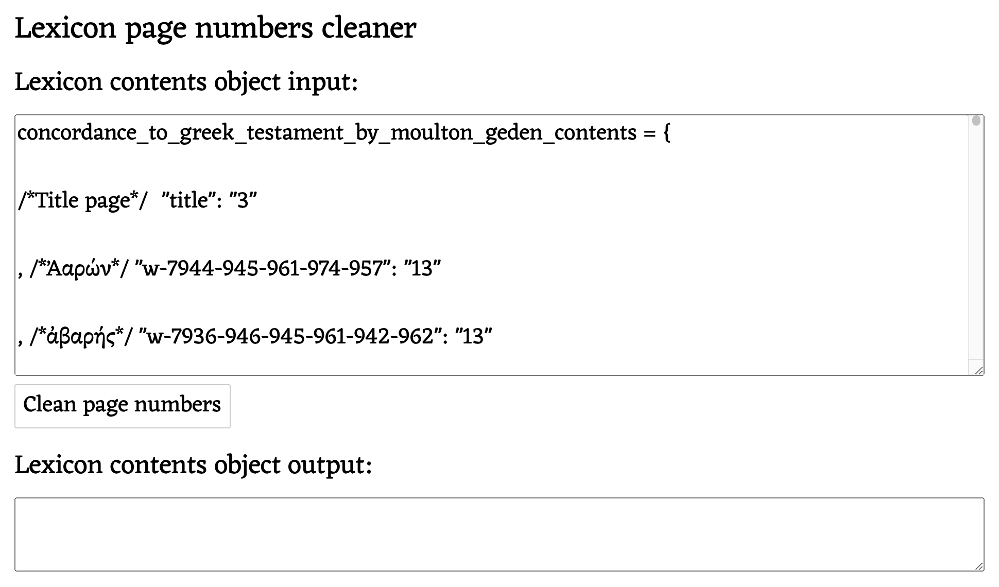
Then save the outputted contents object without page numbers using relevant variable name and file name.
Importing after cleaning
It may happen that one resource of the type "Concordance" has been added to multiple collections and another resource of the type "Concordance" has been added to just single or several collections. E.g. such resource as concordance edited by W. F. Moulton and A. S. Geden has been added to every collection dedicated to certain book of the New Testament, but such resource as concordance edited by Ch. F. Hudson and E. Abbot has been added to one or couple of collections. Now we need to add this resource to remaining collections.
In this case we need to use the following workflow. At first we should take that bigger contents file which contains comprehensive list of lemmas found in multiple collections and remove the page numbers from it. After that we need to import data into cleaned contents object from the contents object which contains less comprehensive list of lemmas from single collection or couple of collections. To do this go to Lexicon contents importer form and fill the fields:
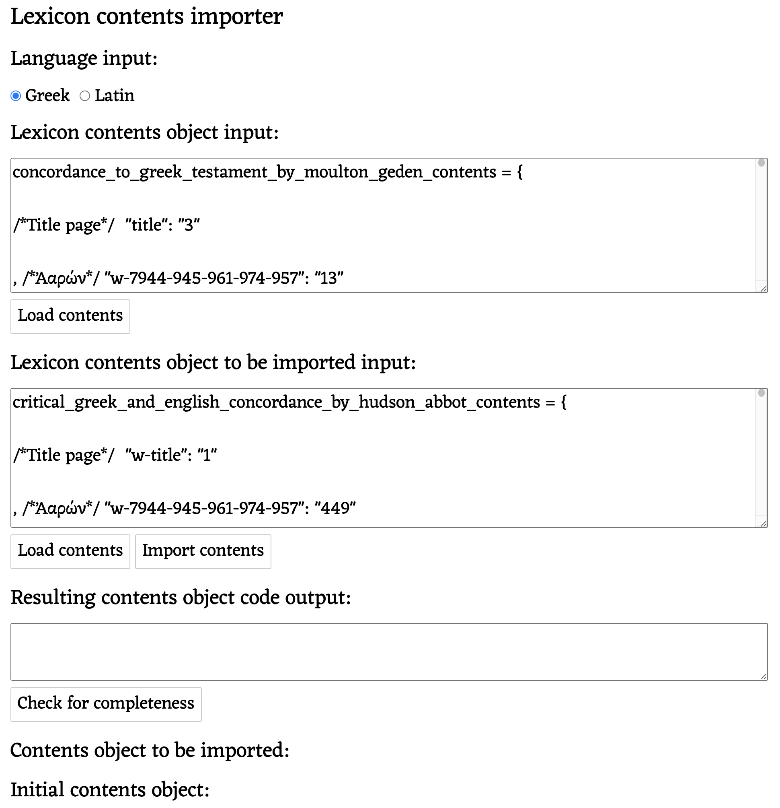
The value of the form‘s field "Language" should be "Greek" because lemmas in both contents objects are in Greek.
The value of the field "Lexicon contents object" should be contents object in which page numbers have been removed, i.e. that contents object which contains comprehensive list of lemmas found in multiple collections.
The value of the field "Lexicon contents object to be imported" should be contents object with all page numbers intact which contains less comprehensive list of lemmas from single collection or couple of collections.
After filling fields with such values click the button "Load contents" which is below the first textarea and the list of lemmas contained in the initial contents object will be displayed below the heading "Initial contents object". Then click the button "Load contents" which is below the second textarea and the list of lemmas contained in contents object to be imported will be displayed below the heading "Contents object to be imported". After that click the button "Import contents" and the resulting contents object will be outputted inside textarea "Resulting contents object code". Then click the button "Check for completeness". All lemmas below the headings "Contents object to be imported" and "Initial contents object" should be colored green. If certain lemmas remain not colored, inform about it senior editor.
Then save the resulting contents object using relevant object name and file name.
Concordance (transcribed)
Creating transcribed resource of the type "concordance" involves creating data file, contents file and target text files.
Creating data file
Let‘s create data file of the transcribed concordance of the Epistle to Titus text.
The data file is being created by filling Concordance generator form:
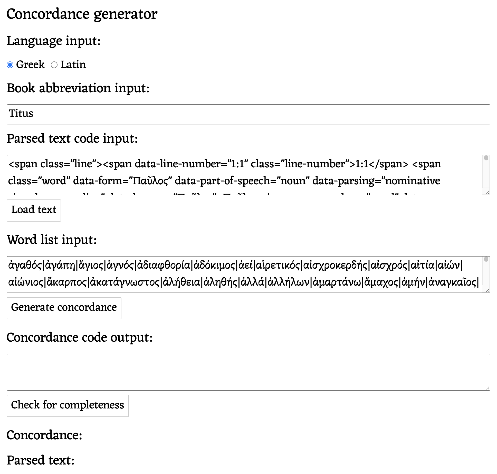
The value of the form‘s field "Language" should be "Greek" because in Epistle to Titus collection parsed text resource is in Greek.
The value of the form‘s field "Book abbreviation" should be standard abbreviation of the title of the classical book. For example, abbreviation of the apostle Paul's First Epistle to Thessalonians would be "1 Thess.", abbreviation of the Revelation to John the Theologian would be "Rev.".
The value of the form‘s field "Parsed text code" should be HTML code of the parsed text starting from the first "span" tag having class attribute value "line" and ending with the last "span" tag having the same class attribute value. Use browser’s HTML inspector (available on right-click in every major browser) to copy this part of code from Library app’s page.
The value of the form‘s field "Word list" should be pipe delimited alphabetical list of words contained in parsed text resource. How to create such word list has been described in the section on Creating contents file for scanned concordance resource.
After filling fields with these values, click the button "Load text" and the text will be displayed beneath "Parsed text" heading.
After loading text click the button "Generate concordance" and the concordance code will appear in "Concordance code" textarea.
Then click the button "Check for completeness" and all words beneath the heading "Parsed text" should be displayed in green background. If some words will not be displayed in green background, inform about it senior editor.
The generated concordance code will be as this:
<div class="concordance-entry">
<h2><span class="concordance-heading" data-lemma="ἀγαθός">ἀγαθός</span></h2>
<span class="concordance-line">
<span class="concordance-lines-button collapsed"></span>
<span class="concordance-word" data-lemma="ἀγαθός" data-form="ἀγαθήν" data-parsing="accusative singular feminine" data-part-of-speech="adjective">
ἀγαθήν adjective accusative singular feminine
<span class="concordance-lines-list">
<span class="concordance-line-number" data-concordance-line-class="2:10">Titus 2:10</span>
</span>
</span>
</span>
<span class="concordance-line">
<span class="concordance-lines-button collapsed"></span>
<span class="concordance-word" data-lemma="ἀγαθός" data-form="ἀγαθάς" data-parsing="accusative plural feminine" data-part-of-speech="adjective">
ἀγαθάς adjective accusative plural feminine
<span class="concordance-lines-list">
<span class="concordance-line-number" data-concordance-line-class="2:5">Titus 2:5</span>
</span>
</span>
</span>
<span class="concordance-line">
<span class="concordance-lines-button collapsed"></span>
<span class="concordance-word" data-lemma="ἀγαθός" data-form="ἀγαθόν" data-parsing="accusative singular neuter" data-part-of-speech="adjective">
ἀγαθόν adjective accusative singular neuter
<span class="concordance-lines-list">
<span class="concordance-line-number" data-concordance-line-class="1:16">Titus 1:16</span>,
<span class="concordance-line-number" data-concordance-line-class="3:1">Titus 3:1</span>
</span>
</span>
</span>
</div>
// part of code has been cut out
<div class="concordance-entry">
<h2><span class="concordance-heading" data-lemma="χάρις">χάρις</span></h2>
<span class="concordance-line">
<span class="concordance-lines-button collapsed"></span>
<span class="concordance-word" data-lemma="χάρις" data-form="χάρις" data-parsing="nominative singular feminine" data-part-of-speech="noun">
χάρις noun nominative singular feminine
<span class="concordance-lines-list">
<span class="concordance-line-number" data-concordance-line-class="1:4">Titus 1:4</span>,
<span class="concordance-line-number" data-concordance-line-class="2:11">Titus 2:11</span>,
<span class="concordance-line-number" data-concordance-line-class="3:15">Titus 3:15</span>
</span>
</span>
</span>
<span class="concordance-line">
<span class="concordance-lines-button collapsed"></span>
<span class="concordance-word" data-lemma="χάρις" data-form="χάριτι" data-parsing="dative singular feminine" data-part-of-speech="noun">
χάριτι noun dative singular feminine
<span class="concordance-lines-list">
<span class="concordance-line-number" data-concordance-line-class="3:7">Titus 3:7</span>
</span>
</span>
</span>
</div>
Concordance HTML code should be converted to string and made the value of the variable having the same name as resource shortname. Transcribed concordance resource was listed using "nt_conc_by_parsedclassics" as its shortname, so this will be variable name. To convert concordance HTML code to string it should be enclosed by the backtick/grave accent (` `) character.
This way we get such data file:
nt_conc_by_parsedclassics =
`<div class="concordance-entry">
<h2><span class="concordance-heading" data-lemma="ἀγαθός">ἀγαθός</span></h2>
<span class="concordance-line">
<span class="concordance-lines-button collapsed"></span>
<span class="concordance-word" data-lemma="ἀγαθός" data-form="ἀγαθήν" data-parsing="accusative singular feminine" data-part-of-speech="adjective">
ἀγαθήν adjective accusative singular feminine
<span class="concordance-lines-list">
<span class="concordance-line-number" data-concordance-line-class="2:10">Titus 2:10</span>
</span>
</span>
</span>
<span class="concordance-line">
<span class="concordance-lines-button collapsed"></span>
<span class="concordance-word" data-lemma="ἀγαθός" data-form="ἀγαθάς" data-parsing="accusative plural feminine" data-part-of-speech="adjective">
ἀγαθάς adjective accusative plural feminine
<span class="concordance-lines-list">
<span class="concordance-line-number" data-concordance-line-class="2:5">Titus 2:5</span>
</span>
</span>
</span>
<span class="concordance-line">
<span class="concordance-lines-button collapsed"></span>
<span class="concordance-word" data-lemma="ἀγαθός" data-form="ἀγαθόν" data-parsing="accusative singular neuter" data-part-of-speech="adjective">
ἀγαθόν adjective accusative singular neuter
<span class="concordance-lines-list">
<span class="concordance-line-number" data-concordance-line-class="1:16">Titus 1:16</span>,
<span class="concordance-line-number" data-concordance-line-class="3:1">Titus 3:1</span>
</span>
</span>
</span>
</div>
// part of code has been cut out
<div class="concordance-entry">
<h2><span class="concordance-heading" data-lemma="χάρις">χάρις</span></h2>
<span class="concordance-line">
<span class="concordance-lines-button collapsed"></span>
<span class="concordance-word" data-lemma="χάρις" data-form="χάρις" data-parsing="nominative singular feminine" data-part-of-speech="noun">
χάρις noun nominative singular feminine
<span class="concordance-lines-list">
<span class="concordance-line-number" data-concordance-line-class="1:4">Titus 1:4</span>,
<span class="concordance-line-number" data-concordance-line-class="2:11">Titus 2:11</span>,
<span class="concordance-line-number" data-concordance-line-class="3:15">Titus 3:15</span>
</span>
</span>
</span>
<span class="concordance-line">
<span class="concordance-lines-button collapsed"></span>
<span class="concordance-word" data-lemma="χάρις" data-form="χάριτι" data-parsing="dative singular feminine" data-part-of-speech="noun">
χάριτι noun dative singular feminine
<span class="concordance-lines-list">
<span class="concordance-line-number" data-concordance-line-class="3:7">Titus 3:7</span>
</span>
</span>
</span>
</div>`;
Data file‘s name should be the same as resource shortname. Transcribed concordance resource was listed using "nt_conc_by_parsedclassics" as its shortname, so the filename will be "nt_conc_by_parsedclassics.js". Data file should be placed in directory also named after resource shortname: /data/concordance/nt_conc_by_parsedclassics/ .
After doing this concordance resource should work in sync with parsed text resource.
We compiled grammatical concordance just for one book. In some cases this might be enough, but usually concordance compiled just for one book is not very useful. Much more useful would be to compile concordance for all books of certain classical text or to compile concordance for all texts written by certain author. We can compile concordance for several books by using Concordance supplementer form:
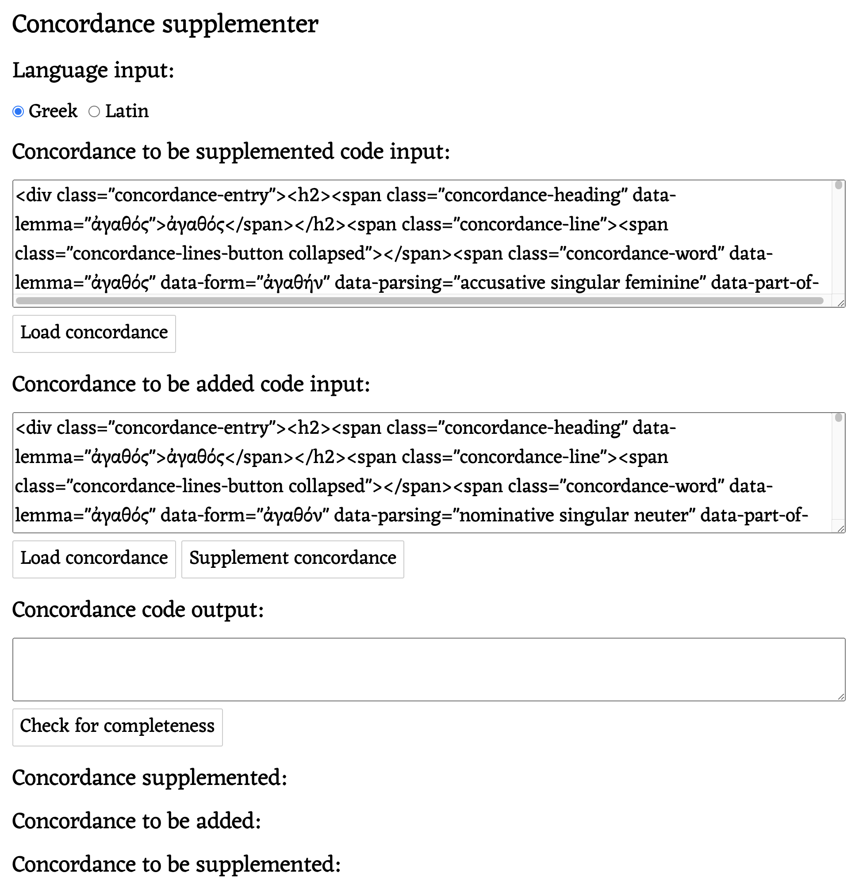
Let's say we want to compile grammatical concordance for all books of the New Testament starting from Gospel according to Matthew and ending with Revelation to John the Theologian. To achieve this we at first need to supplement concordance of the Gospel according to Matthew with the concordance of the Gospel according to Mark, then the resulting concordance we should supplement with the concordance of the Gospel according to Luke etc. until we reach the last book of the New Testament, the Revelation to John the Theologian.
The value of the form‘s field "Language" should be "Greek" because New Testament is in Greek.
The value of the form‘s field "Concordance to be supplemented" should be the code of the concordance of the Gospel according to Matthew.
The value of the form‘s field "Concordance to be supplemented" should be the code of the concordance of the Gospel according to Mark.
Having filled form's fields with these values, we should load both concordances by clicking "Load concordance" buttons and then we should click the button "Supplement concordance". The code of resulting concordance will be outputted in "Concordance code" textarea and resulting concordance will be displayed under "Concordance supplemented" heading. Now we can click "Check for completeness" button to see if everything which was included in concordance to be supplemented and in concordance to be added is also included in resulting concordance. All words and line numbers of the concordance to be supplemented and of the concordance to be added should become green. If any word or line number became red and is included in square brackets (symbols []), inform about it senior editor.
Now that we have grammatical concordance of the Gospels according to Matthew and Mark, let's copy its code and paste it in the field "Concordance to be supplemented", then let's paste the code of the concordance of the Gospel according to Luke in the field "Concordance to be added". After clicking button "Supplement concordance" we will have concordance which includes words of these three books. We can repeat this process until we compile concordance for all 27 books of the New Testament. The resulting concordance code should be converted to string and be made the value of the variable "nt_conc_by_parsedclassics" as has been described above.
The code resulting should be saved in the file named as the variable i.e. "nt_conc_by_parsedclassics.js". The file should be placed in directory /data/concordance/nt_conc_by_parsedclassics/ .
Creating contents file
Concordance data file includes for each word form the list of book abbreviations together with line numbers indicating places where the word form is present. Clicking the line number should open the original text in exact place. To enable this functionality we need to add contents file.
Let's create contents file for concordance containing words of all 27 New Testament's books. The name of the contents file should be formed by adding "contents" to the end of the data file's name, and this way we get file name "nt_conc_by_parsedclassics_contents.js".
The code inside the file "nt_conc_by_parsedclassics_contents.js" will be as follows:
nt_conc_by_parsedclassics_contents = {
"Matt.": "nt_conc_by_parsedclassics_matthew_parsed_text",
"Mark": "nt_conc_by_parsedclassics_mark_parsed_text",
"Luke": "nt_conc_by_parsedclassics_luke_parsed_text",
"John": "nt_conc_by_parsedclassics_john_parsed_text",
"Acts": "nt_conc_by_parsedclassics_acts_parsed_text",
"James": "nt_conc_by_parsedclassics_james_parsed_text",
"1 Pet.": "nt_conc_by_parsedclassics_peter_1_parsed_text",
"2 Pet.": "nt_conc_by_parsedclassics_peter_2_parsed_text",
"1 John": "nt_conc_by_parsedclassics_john_1_parsed_text",
"2 John": "nt_conc_by_parsedclassics_john_2_parsed_text",
"3 John": "nt_conc_by_parsedclassics_john_3_parsed_text",
"Jude": "nt_conc_by_parsedclassics_jude_parsed_text",
"Rom.": "nt_conc_by_parsedclassics_romans_parsed_text",
"1 Cor.": "nt_conc_by_parsedclassics_corinthians_1_parsed_text",
"2 Cor.": "nt_conc_by_parsedclassics_corinthians_2_parsed_text",
"Gal.": "nt_conc_by_parsedclassics_galatians_parsed_text",
"Eph.": "nt_conc_by_parsedclassics_ephesians_parsed_text",
"Phil.": "nt_conc_by_parsedclassics_philippians_parsed_text",
"Col.": "nt_conc_by_parsedclassics_colossians_parsed_text",
"1 Thess.": "nt_conc_by_parsedclassics_thessalonians_1_parsed_text",
"2 Thess.": "nt_conc_by_parsedclassics_thessalonians_2_parsed_text",
"Heb.": "nt_conc_by_parsedclassics_hebrews_parsed_text",
"1 Tim.": "nt_conc_by_parsedclassics_timothy_1_parsed_text",
"2 Tim.": "nt_conc_by_parsedclassics_timothy_2_parsed_text",
"Titus": "nt_conc_by_parsedclassics_titus_parsed_text",
"Philem.": "nt_conc_by_parsedclassics_philemon_parsed_text",
"Rev.": "nt_conc_by_parsedclassics_revelation_parsed_text",
"titles": {
"nt_conc_by_parsedclassics_matthew_parsed_text": {
"author_orig": "Ἡ Καινὴ Διαθήκη",
"library_app_panel_text_from": "The New Testament in the original Greek. Byzantine textform. Compiled and arranged by M. A. Robinson and W. G. Pierpont. 2005. Southborough, MA: Chilton book publishing.",
"scanned_source_shortname": "new_testament_in_original_greek_ed_robinson_pierpont",
"library_app_panel_note": "",
"library_app_panel_title": "Τὸ κατὰ Ματθαῖον εὐαγγέλιον"
},
// part of code has been cut out
"nt_conc_by_parsedclassics_revelation_parsed_text": {
"author_orig": "Ἡ Καινὴ Διαθήκη",
"library_app_panel_text_from": "The New Testament in the original Greek. Byzantine textform. Compiled and arranged by M. A. Robinson and W. G. Pierpont. 2005. Southborough, MA: Chilton book publishing.",
"scanned_source_shortname": "new_testament_in_original_greek_ed_robinson_pierpont",
"library_app_panel_note": "",
"library_app_panel_title": "Ἀποκάλυψις Ἰωάννου τοῦ θεολόγου"
}
}
};
This code initializes global variable "nt_conc_by_parsedclassics_contents", which as you see has the same name as the file. The value of this variable is JSON object. The keys of this object are abbreviations of the titles of the New Testament books and the values of these keys are strings which refer to files containing parsed text of relevant New Testament books. There are also the key "titles" whose value is an JSON object having as its keys just mentioned strings. The values of these keys are JSON objects having several keys: "author_orig", "library_app_panel_text_from", "scanned_source_shortname", "library_app_panel_note", "library_app_panel_title". These keys together with their values should be copied from the files which contain relevant collection and resource definitions, i.e. from files _collections.js and _res_protos.js from /data/catalogues/ directory.
As you can see, the keys of the object nt_conc_by_parsedclassics_contents.titles have many common values. To avoid the repetitios we can desctructure relevant objects from _collections.js and _res_protos.js files. The code would be as follows:
nt_conc_by_parsedclassics_contents = {
"Matt.": "nt_conc_by_parsedclassics_matthew_parsed_text",
"Mark": "nt_conc_by_parsedclassics_mark_parsed_text",
"Luke": "nt_conc_by_parsedclassics_luke_parsed_text",
"John": "nt_conc_by_parsedclassics_john_parsed_text",
"Acts": "nt_conc_by_parsedclassics_acts_parsed_text",
"James": "nt_conc_by_parsedclassics_james_parsed_text",
"1 Pet.": "nt_conc_by_parsedclassics_peter_1_parsed_text",
"2 Pet.": "nt_conc_by_parsedclassics_peter_2_parsed_text",
"1 John": "nt_conc_by_parsedclassics_john_1_parsed_text",
"2 John": "nt_conc_by_parsedclassics_john_2_parsed_text",
"3 John": "nt_conc_by_parsedclassics_john_3_parsed_text",
"Jude": "nt_conc_by_parsedclassics_jude_parsed_text",
"Rom.": "nt_conc_by_parsedclassics_romans_parsed_text",
"1 Cor.": "nt_conc_by_parsedclassics_corinthians_1_parsed_text",
"2 Cor.": "nt_conc_by_parsedclassics_corinthians_2_parsed_text",
"Gal.": "nt_conc_by_parsedclassics_galatians_parsed_text",
"Eph.": "nt_conc_by_parsedclassics_ephesians_parsed_text",
"Phil.": "nt_conc_by_parsedclassics_philippians_parsed_text",
"Col.": "nt_conc_by_parsedclassics_colossians_parsed_text",
"1 Thess.": "nt_conc_by_parsedclassics_thessalonians_1_parsed_text",
"2 Thess.": "nt_conc_by_parsedclassics_thessalonians_2_parsed_text",
"Heb.": "nt_conc_by_parsedclassics_hebrews_parsed_text",
"1 Tim.": "nt_conc_by_parsedclassics_timothy_1_parsed_text",
"2 Tim.": "nt_conc_by_parsedclassics_timothy_2_parsed_text",
"Titus": "nt_conc_by_parsedclassics_titus_parsed_text",
"Philem.": "nt_conc_by_parsedclassics_philemon_parsed_text",
"Rev.": "nt_conc_by_parsedclassics_revelation_parsed_text",
"titles": {
"nt_conc_by_parsedclassics_matthew_parsed_text": {
...ParsedClassicsCollProtos.nt_book,
...ParsedClassicsResProtos.nt_parsed_text_byzantine,
library_app_panel_title: "Τὸ κατὰ Ματθαῖον εὐαγγέλιον",
},
// part of code has been cut out
"nt_conc_by_parsedclassics_revelation_parsed_text": {
...ParsedClassicsCollProtos.nt_book,
...ParsedClassicsResProtos.nt_parsed_text_byzantine,
library_app_panel_title: "Ἀποκάλυψις Ἰωάννου τοῦ θεολόγου",
}
}
};
Now put the file "nt_conc_by_parsedclassics_contents.js" to the directory /data/concordance/nt_conc_by_parsedclassics/ .
Creating target text files
Contents file we just created is the link between concordance and original text. Clicking on line numbers in concordance (rendered by data file) should display the original text (rendered by target text file) at exact place. One target file contains one book of classics text, so, since classics text usually consists of several books, most often there will be a need to create several target text files.
For New Testament corcondance we need to create 27 target text files. Their names will be the strings from contents file which are values of abbreviations of the titles of the New Testament books. E.g. abbreviation "Titus" as a key has as its value the string "nt_conc_by_parsedclassics_titus_parsed_text", so the file name will be "nt_conc_by_parsedclassics_titus_parsed_text.js".
Inside this file there should be the variable of the same name and its value should be the string containing parsed text of the relevant book. Parsed text can be taken from data file of relevant parsed text resource.
The code would be as this:
nt_conc_by_parsedclassics_titus_parsed_text = `<span class="line"><span data-line-number="1:1" class="line-number">1:1</span> <span class="word" data-form="Παῦλος" data-part-of-speech="noun" data-parsing="nominative singular masculine" data-lemma="Παῦλος">Παῦλος</span>, <span class="word" data-form="δοῦλος" data-part-of-speech="noun" data-parsing="nominative singular masculine" data-lemma="δοῦλος">δοῦλος</span> <span class="word" data-form="θεοῦ" data-part-of-speech="noun" data-parsing="genitive singular masculine" data-lemma="θεός">θεοῦ</span>, <span class="word" data-form="ἀπόστολος" data-part-of-speech="noun" data-parsing="nominative singular masculine" data-lemma="ἀπόστολος">ἀπόστολος</span> <span class="word" data-form="δέ" data-part-of-speech="conjunction" data-parsing="" data-lemma="δέ">δὲ</span> <span class="word" data-form="Ἰησοῦ" data-part-of-speech="noun" data-parsing="genitive singular masculine" data-lemma="Ἰησοῦς">Ἰησοῦ</span> <span class="word" data-form="χριστοῦ" data-part-of-speech="noun" data-parsing="genitive singular masculine" data-lemma="χριστός">χριστοῦ</span>, <span class="word" data-form="κατά" data-part-of-speech="preposition" data-parsing="" data-lemma="κατά">κατὰ</span> <span class="word" data-form="πίστιν" data-part-of-speech="noun" data-parsing="accusative singular feminine" data-lemma="πίστις">πίστιν</span> <span class="word" data-form="ἐκλεκτῶν" data-part-of-speech="adjective" data-parsing="genitive plural masculine" data-lemma="ἐκλεκτός">ἐκλεκτῶν</span> <span class="word" data-form="θεοῦ" data-part-of-speech="noun" data-parsing="genitive singular masculine" data-lemma="θεός">θεοῦ</span> <span class="word" data-form="καί" data-part-of-speech="conjunction" data-parsing="" data-lemma="καί">καὶ</span> <span class="word" data-form="ἐπίγνωσιν" data-part-of-speech="noun" data-parsing="accusative singular feminine" data-lemma="ἐπίγνωσις">ἐπίγνωσιν</span> <span class="word" data-form="ἀληθείας" data-part-of-speech="noun" data-parsing="genitive singular feminine" data-lemma="ἀλήθεια">ἀληθείας</span> <span class="word" data-form="τῆς" data-part-of-speech="article" data-parsing="genitive singular feminine" data-lemma="ὁ">τῆς</span> <span class="word" data-form="κατά" data-part-of-speech="preposition" data-parsing="" data-lemma="κατά">κατ’</span> <span class="word" data-form="εὐσέβειαν" data-part-of-speech="noun" data-parsing="accusative singular feminine" data-lemma="εὐσέβεια">εὐσέβειαν</span>, </span> <span class="line"><span data-line-number="1:2" class="line-number">1:2</span> <span class="word" data-form="ἐπί" data-part-of-speech="preposition" data-parsing="" data-lemma="ἐπί">ἐπ’</span> <span class="word" data-form="ἐλπίδι" data-part-of-speech="noun" data-parsing="dative singular feminine" data-lemma="ἐλπίς">ἐλπίδι</span> <span class="word" data-form="ζωῆς" data-part-of-speech="noun" data-parsing="genitive singular feminine" data-lemma="ζωή">ζωῆς</span> <span class="word" data-form="αἰωνίου" data-part-of-speech="adjective" data-parsing="genitive singular feminine" data-lemma="αἰώνιος">αἰωνίου</span>, <span class="word" data-form="ἥν" data-part-of-speech="relative pronoun" data-parsing="accusative singular feminine" data-lemma="ὅς">ἣν</span> <span class="word" data-form="ἐπηγγείλατο" data-part-of-speech="verb" data-parsing="aorist middle indicative 3rd person singular" data-lemma="ἐπαγγέλλομαι">ἐπηγγείλατο</span> <span class="word" data-form="ὁ" data-part-of-speech="article" data-parsing="nominative singular masculine" data-lemma="ὁ">ὁ</span> <span class="word" data-form="ἀψευδής" data-part-of-speech="adjective" data-parsing="nominative singular masculine" data-lemma="ἀψευδής">ἀψευδὴς</span> <span class="word" data-form="θεός" data-part-of-speech="noun" data-parsing="nominative singular masculine" data-lemma="θεός">θεὸς</span> <span class="word" data-form="πρό" data-part-of-speech="preposition" data-parsing="" data-lemma="πρό">πρὸ</span> <span class="word" data-form="χρόνων" data-part-of-speech="noun" data-parsing="genitive plural masculine" data-lemma="χρόνος">χρόνων</span> <span class="word" data-form="αἰωνίων" data-part-of-speech="adjective" data-parsing="genitive plural masculine" data-lemma="αἰώνιος">αἰωνίων</span>, </span> <span class="line"><span data-line-number="1:3" class="line-number">1:3</span> <span class="word" data-form="ἐφανέρωσε(ν)" data-part-of-speech="verb" data-parsing="aorist active indicative 3rd person singular" data-lemma="φανερόω">ἐφανέρωσεν</span> <span class="word" data-form="δέ" data-part-of-speech="conjunction" data-parsing="" data-lemma="δέ">δὲ</span> <span class="word" data-form="καιροῖς" data-part-of-speech="noun" data-parsing="dative plural masculine" data-lemma="καιρός">καιροῖς</span> <span class="word" data-form="ἰδίοις" data-part-of-speech="adjective" data-parsing="dative plural masculine" data-lemma="ἴδιος">ἰδίοις</span> <span class="word" data-form="τόν" data-part-of-speech="article" data-parsing="accusative singular masculine" data-lemma="ὁ">τὸν</span> <span class="word" data-form="λόγον" data-part-of-speech="noun" data-parsing="accusative singular masculine" data-lemma="λόγος">λόγον</span> <span class="word" data-form="αὐτοῦ" data-part-of-speech="personal pronoun" data-parsing="genitive singular masculine" data-lemma="αὐτός">αὐτοῦ</span> <span class="word" data-form="ἐν" data-part-of-speech="preposition" data-parsing="" data-lemma="ἐν">ἐν</span> <span class="word" data-form="κηρύγματι" data-part-of-speech="noun" data-parsing="dative singular neuter" data-lemma="κήρυγμα">κηρύγματι</span> <span class="word" data-form="ὅ" data-part-of-speech="relative pronoun" data-parsing="accusative singular neuter" data-lemma="ὅς">ὃ</span> <span class="word" data-form="ἐπιστεύθην" data-part-of-speech="verb" data-parsing="aorist passive indicative 1st person singular" data-lemma="πιστεύω">ἐπιστεύθην</span> <span class="word" data-form="ἐγώ" data-part-of-speech="personal pronoun" data-parsing="nominative singular" data-lemma="ἐγώ">ἐγὼ</span> <span class="word" data-form="κατά" data-part-of-speech="preposition" data-parsing="" data-lemma="κατά">κατ’</span> <span class="word" data-form="ἐπιταγήν" data-part-of-speech="noun" data-parsing="accusative singular feminine" data-lemma="ἐπιταγή">ἐπιταγὴν</span> <span class="word" data-form="τοῦ" data-part-of-speech="article" data-parsing="genitive singular masculine" data-lemma="ὁ">τοῦ</span> <span class="word" data-form="σωτῆρος" data-part-of-speech="noun" data-parsing="genitive singular masculine" data-lemma="σωτήρ">σωτῆρος</span> <span class="word" data-form="ἡμῶν" data-part-of-speech="personal pronoun" data-parsing="genitive plural" data-lemma="ἐγώ">ἡμῶν</span> <span class="word" data-form="θεοῦ" data-part-of-speech="noun" data-parsing="genitive singular masculine" data-lemma="θεός">θεοῦ</span>, </span>`; // part of code has been cut out
Lexicon (scanned)
Creating image files
To create scanned resource of the type "Lexicon" you first need a series of JPG images, each image picturing one page of the book. Scanned resource always includes all pages of the book, i.e. each page from the title page to the last, not including covers and promotional materials. About creating a series of JPG files for scanned resource, read in Common tasks.
When you have a series of JPG files each image picturing one page of the book and named starting from page0001.jpg, submit them to the senior editor who will upload those files to the server. The files will be uploaded to the directory which was entered as value of the key "scanned_source_shortname" when lexicon resource was listed as part of collection. For example, in the Epistle to Titus collection the lexicon by E. Robinson has been listed and the value of the key "scanned_source_shortname" is "greek_and_english_lexicon_of_nt_by_robinson". It means that the pictures of the pages must be uploaded to the directory /_scans/greek_and_english_lexicon_of_nt_by_robinson/ .
Having uploaded the images of the pages to the server, senior editor should list the scanned book as described in section Listing scanned books.
After uploading the files of the scanned book and listing it among scanned books, it can be browsed using the value of the key "scanned_source_shortname" in the URL: parsedclassics.com/reader/embedded_bookreader.html?greek_and_english_lexicon_of_nt_by_robinson .
In order for lexicon to work in sync with parsed text, the contents file should be prepared. The same lexicon resource can be listed as part of several collections. This means that there could be two cases: (1) there is no contents file and we need to create it; (2) there is contents file, but the words of certain classics book are not fully dealt with, so we need to supplement it.
Creating contents file
To create new contents file go to Word list generator page and fill the form:
The value of the form‘s field "Language" should be "Greek" because in Epistle to Titus collection parsed text resource is in Greek.
The value of the form‘s field "Parsed text code" should be full HTML code of the parsed text. Use browser’s HTML inspector (available on right-click in every major browser) to copy parsed text's HTML code from Library app’s page. To do this right-click inside HTML inspector's panel on the "div" element having "class" attribute "parsed-text-split-top" and in context menu select option "Copy outerHTML":
Then paste the copied string into form‘s field. After that select and delete all code before first "span" tag having "class" attribute "line" and closing "div" tag from the code pasted into field:
After filling fields with these values, click the button "Load text" and the text will be displayed beneath "Parsed text" heading.
After loading text click the button "Generate list" and the pipe delimited alphabetical list of all words in the text will appear in "Word list" textarea.
The word list will be as this:
ἀγαθός|ἀγάπη|ἅγιος|ἁγνός|ἀδιαφθορία|ἀδόκιμος|ἀεί|αἱρετικός|αἰσχροκερδής|αἰσχρός|αἰτία|αἰών|αἰώνιος|ἄκαρπος|ἀκατάγνωστος|ἀλήθεια|ἀληθής|ἀλλά|ἀλλήλων|ἁμαρτάνω|ἄμαχος|ἀμήν|ἀναγκαῖος|ἀνακαίνωσις|ἀνατρέπω|ἀνέγκλητος|ἀνήρ|ἄνθρωπος|ἀνόητος|ἀνομία|ἀντέχομαι|ἀντιλέγω|ἀνυπότακτος|ἀνωφελής|ἀπειθής|ἄπιστος|ἀπό|Ἀπολλῶς|ἀπόστολος|ἀποστρέφω|ἀποτόμως|ἀργός|ἀρνέομαι|Ἀρτεμᾶς|ἀρχή|ἀσέβεια|ἀσπάζομαι|ἀσωτία|αὐθάδης|αὐτοκατάκριτος|αὐτός|ἀφθαρσία|ἀψευδής|βδελυκτός|βλασφημέω|βούλομαι|γάρ|γαστήρ|γενεαλογία|γίνομαι|γνήσιος|γυνή|δέ|δεσπότης|δεύτερος|δέω|διά|διαβεβαιόομαι|διάβολος|διάγω|διατάσσω|διδασκαλία|διδάσκω|διδαχή|δίδωμι|δίκαιος|δικαιοσύνη|δικαιόω|δικαίως|δόξα|δουλεύω|δοῦλος|δουλόω|δυνατός|ἑαυτοῦ|ἐγκρατής|ἐγώ|εἰ|εἰμί|εἰρήνη|εἷς|εἰς|ἐκ|ἐκεῖ|ἐκεῖνος|ἐκλεκτός|ἐκστρέφομαι|ἐκχέω|ἐλέγχω|ἔλεος|ἐλπίς|ἐν|ἐναντίος|ἐνδείκνυμι|ἐντολή|ἐντρέπω|ἐξουσία|ἐπαγγέλλομαι|ἐπί|ἐπίγνωσις|ἐπιδιορθόω|ἐπιεικής|ἐπιθυμία|ἐπίσκοπος|ἐπιστομίζω|ἐπιταγή|ἐπιφαίνω|ἐπιφάνεια|ἔργον|ἔρις|ἔρχομαι|ἕτοιμος|εὐάρεστος|εὐσέβεια|εὐσεβῶς|ἔχω|ζάω|ζηλωτής|Ζηνᾶς|ζήτησις|ζωή|ἤ|ἡδονή|ἡμέτερος|θεός|θηρίον|ἴδιος|ἱεροπρεπής|Ἰησοῦς|ἵνα|Ἰουδαϊκός|καθαρίζω|καθαρός|καθίστημι|καί|καιρός|κακία|κακός|καλοδιδάσκαλος|καλός|κατά|καταλείπω|κατάστημα|κατηγορία|κέρδος|κήρυγμα|κληρονόμος|κοινός|κοσμέω|κοσμικός|Κρής|Κρήτη|κρίνω|κύριους|λαλέω|λαός|λέγω|λείπω|λόγος|λουτρόν|λυτρόομαι|μακάριος|μάλιστα|μανθάνω|μαρτυρία|ματαιολόγος|μάταιος|μάχη|μέγας|μέν|μετά|μή|μηδείς|μιαίνω|μισέω|μῦθος|μωρός|νέος|νηφάλιος|Νικόπολις|νομικός|νοσφίζομαι|νουθεσία|νοῦς|νῦν|ὁ|οἶδα|οἰκονόμος|οἶκος|οἰκουργός|οἶνος|ὅλος|ὁμολογέω|ὁράω|ὀργίλος|ὅς|ὅσιος|ὅστις|ὅταν|ὅτε|ὅτι|οὐ|οὐδείς|οὗτος|παιδεύω|παλιγγενεσία|παραιτέομαι|παρακαλέω|παραχειμάζω|παρέχω|πάροινος|πᾶς|πατήρ|Παῦλος|πειθαρχέω|πέμπω|περί|περιΐστημι|περιούσιος|περιτομή|περιφρονέω|πιστεύω|πίστις|πιστός|πλανάω|πλήκτης|πλουσίως|πνεῦμα|ποιέω|ποικίλος|πόλις|πολύς|ποτέ|πραΰτης|πρέπω|πρεσβύτερος|πρεσβύτης|πρεσβῦτις|πρό|προΐστημι|προπέμπω|πρός|προσδέχομαι|προσέχω|προφήτης|σεαυτοῦ|σεμνός|σεμνότης|σπουδάζω|σπουδαίως|στυγητός|σύ|συνείδησις|σῴζω|σωτήρ|σωτήριος|σωφρονέω|σωφρονίζω|σωφρόνως|σώφρων|τέκνον|τίς|τις|Τίτος|τοιοῦτος|τύπος|Τυχικός|ὑγιαίνω|ὑγιής|ὑπέρ|ὑπομιμνῄσκω|ὑπομονή|ὑποτάσσω|φανερόω|φαῦλος|φθόνος|φιλάγαθος|φίλανδρος|φιλανθρωπία|φιλέω|φιλόξενος|φιλότεκνος|φρεναπάτης|φροντίζω|χάριν|χάρις|χρεία|χρηστότης|χριστός|χρόνος|ψεύστης|ὡς|ὡσαύτως|ὠφέλιμος
Then click the button "Check for completeness". After this all words beneath the heading "Parsed text" should be displayed on green backgound. If some words remain on white background, it means that the script was not able to generate complete list of words. Inform about it senior editor.
When you have pipe delimited alphabetical list of all words in the parsed text, go to Lexicon contents generator page and fill the form:
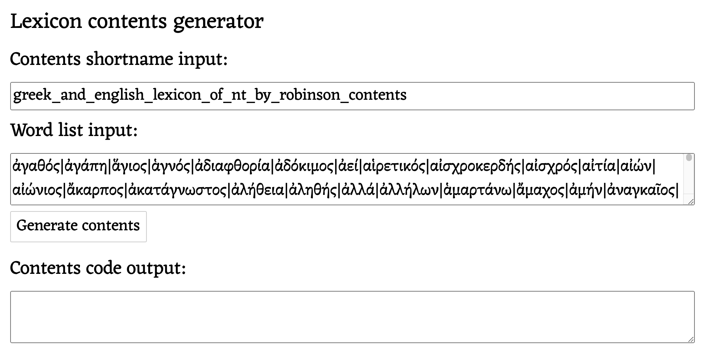
The value of the form‘s field "Contents shortname" should be the same as the value of the key "contents_shortname" we entered when we listed resource. We entered for this key the value "greek_and_english_lexicon_of_nt_by_robinson_contents", so we now should enter it as the value of the field.
The value of the form‘s field "Word list" should be just created pipe delimited alphabetical list of all words in the parsed text.
After filling fields with these values click the button "Generate contents" and the contents code will appear in "Contents code" textarea.
The contents code will be as this:
greek_and_english_lexicon_of_nt_by_robinson_contents = {
/*Title page*/ "title": ""
, /*ἀγαθός*/ "w-7936-947-945-952-972-962": ""
, /*ἀγάπη*/ "w-7936-947-940-960-951": ""
, /*ἅγιος*/ "w-7941-947-953-959-962": ""
, /*ἁγνός*/ "w-7937-947-957-972-962": ""
// part of code has been cut out
, /*χριστός*/ "w-967-961-953-963-964-972-962": ""
, /*χρόνος*/ "w-967-961-972-957-959-962": ""
, /*ψεύστης*/ "w-968-949-973-963-964-951-962": ""
, /*ὡς*/ "w-8033-962": ""
, /*ὡσαύτως*/ "w-8033-963-945-973-964-969-962": ""
, /*ὠφέλιμος*/ "w-8032-966-941-955-953-956-959-962": ""
};
Now we need to enter values for each key of this JSON object. The keys are strings starting with "w" and consisting from numerical letter codes. "title" is the key for the title page of the lexicon. The values should be numbers from image file names (without zero padding). View images of the scanned files, look for the numbers in their file names and enter those numbers as the values for relevant keys.
We get the following code:
greek_and_english_lexicon_of_nt_by_robinson_contents = {
/*Title page*/ "title": ""
, /*ἀγαθός*/ "w-7936-947-945-952-972-962": "15"
, /*ἀγάπη*/ "w-7936-947-940-960-951": "17"
, /*ἅγιος*/ "w-7941-947-953-959-962": "19"
, /*ἁγνός*/ "w-7937-947-957-972-962": "21"
// part of code has been cut out
, /*χριστός*/ "w-967-961-953-963-964-972-962": "799"
, /*χρόνος*/ "w-967-961-972-957-959-962": "800"
, /*ψεύστης*/ "w-968-949-973-963-964-951-962": "804"
, /*ὡς*/ "w-8033-962": "810"
, /*ὡσαύτως*/ "w-8033-963-945-973-964-969-962": "813"
, /*ὠφέλιμος*/ "w-8032-966-941-955-953-956-959-962": "815"
};
This code should be saved in the file having the same name as the value in "Contents shortname" field in the form. The file should be placed in directory whose name is the same as resource shortname. Resource shortname is "greek_lexicon_of_nt_by_robinson" so the directory will be /data/lexicon/greek_lexicon_of_nt_by_robinson/ .
After doing this lexicon resource should work in sync with parsed text resource.
Supplementing contents file
In case there is already contents file which contains words from one book of classics text, and we want that contents file would include also the words from other book of classics text, we need to supplement contents.
To do this go to Lexicon contents supplementer page and fill the form:
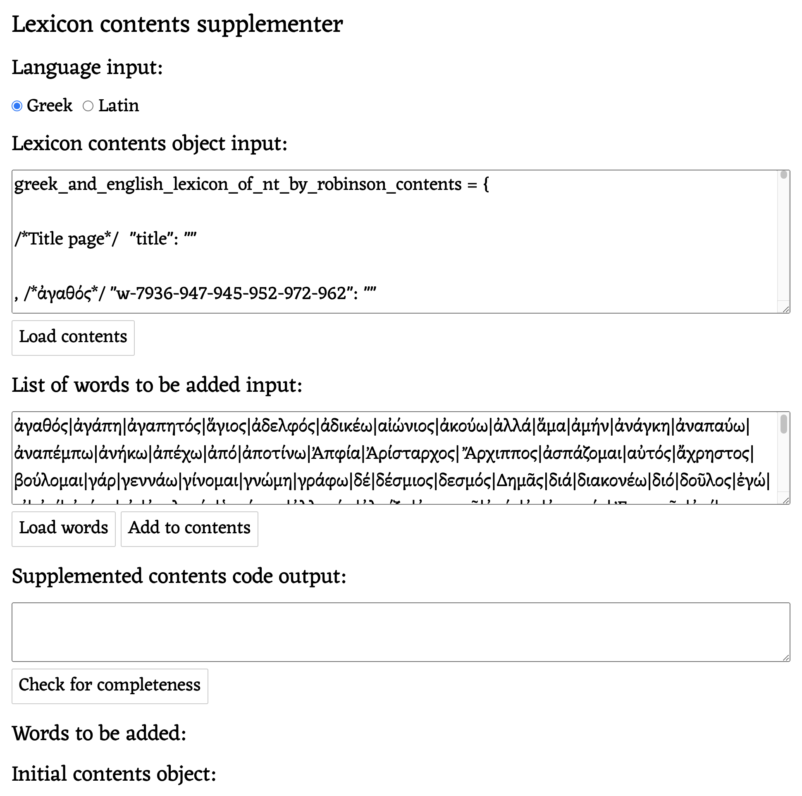
The value of the form‘s field "Language" should be "Greek" because in Epistle to Titus collection parsed text resource is in Greek.
The value of the form‘s field "Lexicon contents object" should be complete content of the lexicon contents file. In previous section we saved it as /data/lexicon/greek_lexicon_of_nt_by_robinson/greek_and_english_lexicon_of_nt_by_robinson_contents.js .
The value of the form‘s field "List of words to be added" should be pipe delimited alphabetical list of words contained in parsed text resource. How to create such word list has been described in previous section. Here in this field we added list of words contained in parsed text resource from Epistle to Philemon collection.
After filling fields with these values, click the button "Load contents" and the code of the concordance contents object will be displayed beneath "Initial contents object" heading.
Then click the button "Load words" and the list of words to be added to contents will be displayed beneath "Words to be added" heading.
After that click the button "Add to contents" and the code of supplemented contents object will appear in "Supplemented contents code" textarea.
Then click the button "Check for completeness" and all words beneath the headings "Words to be added" and "Initial contents object" should be displayed in green background. If some words will not be displayed in green background, inform about it senior editor.
The code generated will be as this:
greek_and_english_lexicon_of_nt_by_robinson_contents = {
/*Title page*/ "title": "3"
, /*ἀγαθός*/ "w-7936-947-945-952-972-962": "14"
, /*ἀγάπη*/ "w-7936-947-940-960-951": "18"
, /*ἀγαπητός*/ "w-7936-947-945-960-951-964-972-962": ""
, /*ἅγιος*/ "w-7941-947-953-959-962": "23"
, /*ἁγνός*/ "w-7937-947-957-972-962": "26"
, /*ἀδελφός*/ "w-7936-948-949-955-966-972-962": ""
// part of code has been cut out
, /*χριστός*/ "w-967-961-953-963-964-972-962": "1023"
, /*χρόνος*/ "w-967-961-972-957-959-962": "1030"
, /*χωρίζω*/ "w-967-969-961-943-950-969": ""
, /*χωρίς*/ "w-967-969-961-943-962": ""
, /*ψεύστης*/ "w-968-949-973-963-964-951-962": "1034"
, /*ὥρα*/ "w-8037-961-945": ""
, /*ὡς*/ "w-8033-962": "1038"
, /*ὡσαύτως*/ "w-8033-963-945-973-964-969-962": "1043"
, /*ὠφέλιμος*/ "w-8032-966-941-955-953-956-959-962": "1044"
};
Notice, tat some keys have numerical values while the other keys have empty strings as their values. The latter represents the words which were not included in the initial contents object.
Now we need to enter numerical values for each key having empty string as its value. The values should be numbers from image file names (without zero padding). So, view images of the scanned files, look for the numbers in their file names and enter those numbers as the values for relevant keys.
We get the following code:
greek_and_english_lexicon_of_nt_by_robinson_contents = {
/*Title page*/ "title": "3"
, /*ἀγαθός*/ "w-7936-947-945-952-972-962": "14"
, /*ἀγάπη*/ "w-7936-947-940-960-951": "18"
, /*ἀγαπητός*/ "w-7936-947-945-960-951-964-972-962": "19"
, /*ἅγιος*/ "w-7941-947-953-959-962": "23"
, /*ἁγνός*/ "w-7937-947-957-972-962": "26"
, /*ἀδελφός*/ "w-7936-948-949-955-966-972-962": "29"
// part of code has been cut out
, /*χριστός*/ "w-967-961-953-963-964-972-962": "1023"
, /*χρόνος*/ "w-967-961-972-957-959-962": "1030"
, /*χωρίζω*/ "w-967-969-961-943-950-969": "1032"
, /*χωρίς*/ "w-967-969-961-943-962": "1032"
, /*ψεύστης*/ "w-968-949-973-963-964-951-962": "1034"
, /*ὥρα*/ "w-8037-961-945": "1037"
, /*ὡς*/ "w-8033-962": "1038"
, /*ὡσαύτως*/ "w-8033-963-945-973-964-969-962": "1043"
, /*ὠφέλιμος*/ "w-8032-966-941-955-953-956-959-962": "1044"
};
Replace with this code the contents of the file from which initial code was taken (in our case this was the file /data/lexicon/greek_lexicon_of_nt_by_robinson/greek_and_english_lexicon_of_nt_by_robinson_contents.js) and save it.
After doing this lexicon resource should work in sync with parsed text resource.
Workflows for multiple collections
Usually scanned resource of the type "Lexicon" is being included into several collections. E.g. such resource as lexicon by E. Robertson will be used in every collection dedicated to certain book of the New Testament. This means that the same contents file of the scanned resource of the type "Lexicon" will be used by all relevant collections.
There are several workflows for creating contents file to be used by several collections.
Supplementing in stages
One possible workflow is as follows: at first we create new contents file to be used by certain single collection and fill the gaps with page numbers for all lemmas found in the parsed text of that collection. Then we supplement the contents file with the lemmas found in parsed text of another collection and fill the gaps with page numbers of these lemmas. And we repeat this process again and again until all lemmas of the all parsed texts of the all relevant collections are included in the contents file and all relevant page numbers are filled in.
This workflow has the advantage that we can work only with lemmas of the parsed text of the single collection and doing so quickly prepare one or more resources of the type "Lexicon" to be used inside single collection. The disadvantage is that in each cycle we need again to browse through all pages of the scanned book in search for relevant lemmas and that takes a lot of time.
Supplementing at start
Another possible workflow is as follows: at first we create new contents file to be used by certain single collection. Then we don't fill the gaps with page numbers, but instead supplement the contents file with the lemmas found in original text of another collection. And we repeat this process again and again until all lemmas of the all original texts of the all relevant collections are included in the contents file. Then we browse through all pages of the scanned book, find the page numbers of the all lemmas and fill the gaps in contents file with these page numbers.
This workflow has the advantage that we must browse though all pages of the scanned book only once and this takes much less time than repeated browsing of the workflow described above. But the disadvantage is that we cannot work with the single collection at the time and must create huge contents file at once.
Cleaning page numbers
By using the first or the second workflow of those described above we get contents file of the resource of the type "Lexicon" which is being used by multiple collections. We may need to add another resource of the type "Lexicon" to the same collections. E.g. after having added lexicon by E. Robinson to every collection dedicated to certain book of the New Testament we may need to add F. Zorell's Lexicon Graecum Novi Testamenti to the same collections. In such cases we can shortcut the process by using the third workflow.
The contents file for the new resource of the type "Lexicon" should contain the same lemmas. This means that we can reuse existing contents file: we only need to remove page numbers, to change the name of the contents object and to change the name of the file. To remove page numbers from the contents file use Lexicon page numbers cleaner. Copy contents object from the contents file, paste it in the field "Lexicon contents object" and click the button "Clean page numbers":
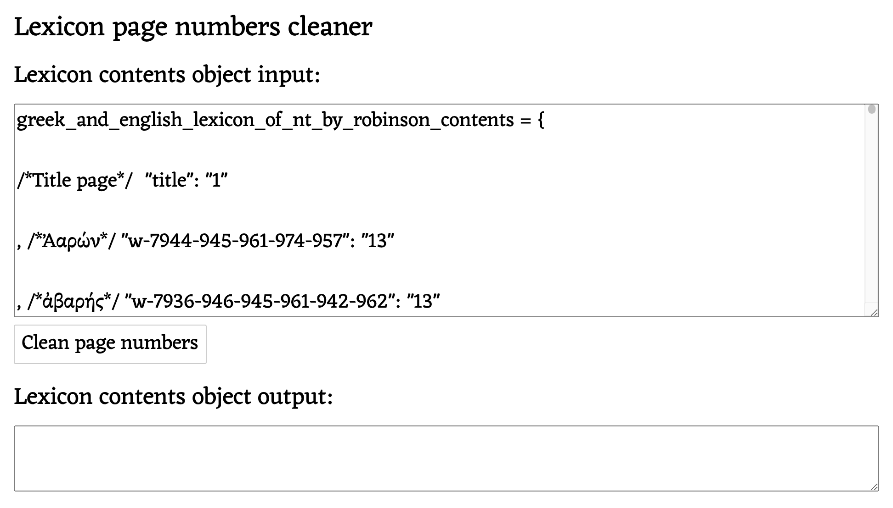
Then save the outputted contents object without page numbers using relevant variable name and file name.
Importing after cleaning
It may happen that one resource of the type "Lexicon" has been added to multiple collections and another resource of the type "Lexicon" has been added to just single or several collections. E.g. such resource as E. Robinson's Greek and English lexicon of the New Testament has been added to every collection dedicated to certain book of the New Testament, but such resource as F. Zorell's Lexicon Graecum Novi Testamenti has been added to one or couple of collections. Now we need to add this resource to remaining collections.
In this case we need to use the following workflow. At first we should take that bigger contents file which contains comprehensive list of lemmas found in multiple collections and remove the page numbers from it. After that we need to import data into cleaned contents object from the contents object which contains less comprehensive list of lemmas from single collection or couple of collections. To do this go to Lexicon contents importer form and fill the fields:
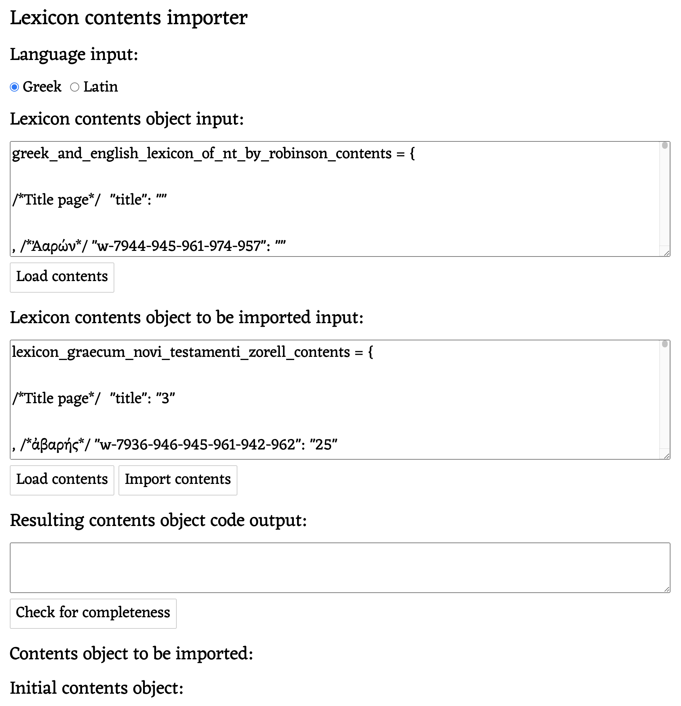
The value of the form‘s field "Language" should be "Greek" because lemmas in both contents objects are in Greek.
The value of the field "Lexicon contents object" should be contents object in which page numbers have been removed, i.e. that contents object which contains comprehensive list of lemmas found in multiple collections.
The value of the field "Lexicon contents object to be imported" should be contents object with all page numbers intact which contains less comprehensive list of lemmas from single collection or couple of collections.
After filling fields with such values click the button "Load contents" which is below the first textarea and the list of lemmas contained in the initial contents object will be displayed below the heading "Initial contents object". Then click the button "Load contents" which is below the second textarea and the list of lemmas contained in contents object to be imported will be displayed below the heading "Contents object to be imported". After that click the button "Import contents" and the resulting contents object will be outputted inside textarea "Resulting contents object code". Then click the button "Check for completeness". All lemmas below the headings "Contents object to be imported" and "Initial contents object" should be colored green. If certain lemmas remain not colored, inform about it senior editor.
Then save the resulting contents object using relevant variable name and file name.
Lexicon (transcribed)
Usually lexicon contains many hundreds of pages of text which uses complex formatting. In such situation there are no sense to create transcribed resource; scanned resource will be adequate solution.
But there are some smaller and simpler lexicons which do not use complex formatting. In such case creating transcribed resource might be considered. As an example of transcribed lexicon resource Greek-English lexicon to the New Testament by Th. S. Green has been listed in the Epistle to Titus collection.
Creating transcribed resource of the type "lexicon" involves creating one data file.
Creating data file
The text of lexicon articles should be HTML formatted according simple convention. Here is example of HTML formatted lexicon articles:
<h3>Α, α, <i>Ἄλφα</i></h3>
<dl>
<dt><span class="lexicon-heading" data-lemma="α">Α</span>, α, <i>Alpha</i>,</dt>
<dd>the first letter in the Greek Alphabet, and used for the <i>first</i>, Re. 1.8, 11; 21.6; 22.13.</dd>
<dd>In composition, it denotes privation; sometimes augmentation, and union.</dd>
<dt><span class="lexicon-heading" data-lemma="αβαρής">Αβᾰρής</span>, έος, οῦς, ὁ, ἡ, τὸ, -ές, (ἀ & <a class="inner-link" data-anchor="green-nt-lex-βαρος">βάρος</a>)</dt>
<dd>not burdensome, not chargeable, 2 Co. 11.9.</dd>
<dt><span class="lexicon-heading" data-lemma="αββᾶ">Αββᾶ</span></dt>
<dd>ind. ch. or Sy. <span class="hebrew">אבא</span>, father, Mar. 14.36. Ro.8.15 Ga. 4.6.</dd>
<dt><span class="lexicon-heading" data-lemma="ἄβυσσος">Ἄβυσσος</span>, ου, ἡ,</dt>
<dd><i>pr.</i> bottomless; place of the dead, hell.</dd>
<dt><span class="lexicon-heading" data-lemma="ἀγαθοεργέω">Ἀγαθοεργέω</span>, ῶ, Ἀγαθουργῶ, (<a class="inner-link" data-anchor="green-nt-lex-αγαθος">ἀγαθός</a> & <a class="inner-link" data-anchor="green-nt-lex-εργον">ἔργον</a>)</dt>
<dd>f. ήσω, </dd>
<dd>to do good, confer benefits, 1 Ti.6.18 N.T.</dd>
<dt><span class="lexicon-heading" data-lemma="αγαθοποιέω">Αγαθοποιέω</span>, ῶ, (<a class="inner-link" data-anchor="green-nt-lex-αγαθος">ἀγαθός</a> & <a class="inner-link" data-anchor="green-nt-lex-ποιεω">ποιέω</a>)</dt>
<dd>f. ήσω, </dd>
<dd>to do good, benefit, do well: (S.) <i>whence</i></dd>
<dt><span class="lexicon-heading" data-lemma="ἀγαθοποιΐα">Ἀγαθοποιΐα</span>, ας, ἡ,</dt>
<dd>well-doing, probity, 1 Pe. 4.19 L.G.</dd>
<dt><span class="lexicon-heading" data-lemma="ἀγαθοποιός">Ἀγαθοποιός</span>, οῦ, ὁ, ἡ,</dt>
<dd>a well-doer, 1 Pe. 2.14 L.G.</dd>
<dt><a class="pc-anchor" id="green-nt-lex-αγαθος"><span class="lexicon-heading" data-lemma="ἀγαθός">Ἀγᾰθός</span></a>, ή, όν, </dt>
<dd>good, profitable, generous, beneficent, upright, virtuous: <i>whence</i></dd>
<!-- part of code has been cut out -->
</dl>
<h3>Β, β, <i>Βῆτα</i></h3>
<dl>
<dt><a class="pc-anchor" id="green-nt-lex-βαθμος"><span class="lexicon-heading" data-lemma="βαθμός">Βαθμός</span></a>, οῦ, ὁ, (<a class="inner-link" data-anchor="green-nt-lex-βαινω">βαίνω</a>)</dt>
<dd><i>pr.</i> a step, stair; <i>met.</i> grade of dignity, degree, rank standing, 1 Ti 3.13.</dd>
<dt><span class="lexicon-heading" data-lemma="βάθος">Βάθος</span>, εος, ους, τό,</dt>
<dd>depth; τὸ βάθος, deep water, Lu. 5.4. Mat. 13.5, et al.; <i>met.</i> fullness, abundance, immensity, Ro. 11.33. 2 Co. 8.2; an extreme degree, 2 Co. 8.2; <i>pl.</i> deep laid plans, profound, secret things, 1 Co. 2.10. Re. 2.24.</dd>
<dt><span class="lexicon-heading" data-lemma="βαθύνω">Βαθύνω</span>, </dt>
<dd>f. ῠνῶ, </dd>
<dd>to deepen, excavate, Lu. 6.48 <i>from</i></dd>
<dt><a class="pc-anchor" id="green-nt-lex-βαθυς"><span class="lexicon-heading" data-lemma="βαθύς">Βαθύς</span></a>, εῖα, ύ, </dt>
<dd>deep. Jno. 4.11; <i>met.</i> deep, profound, Ac. 20.9; ὄρθρου βαθέος, <i>lit.</i> at deep morning twilight <i>i.e.</i> at the earliest dawn, Lu. 24.1.</dd>
<dt><span class="lexicon-heading" data-lemma="βάϊον">Βάϊον</span>, <i>v.</i> Βαΐον, ου, τό, </dt>
<dd>a palm branch, Jno. 12.13. S.</dd>
<dt><span class="lexicon-heading" data-lemma="βαλάντιον">Βαλάντιον</span>, ου, τό, </dt>
<dd>a bag, purse, Lu. 10.4; 12.33; 22.35, 36.</dd>
<!-- part of code has been cut out -->
<dt><a class="pc-anchor" id="green-nt-lex-βαρος"><span class="lexicon-heading" data-lemma="βάρος">Βάρος</span></a>, εος, τό,</dt>
<dd>weight, heaviness; a burden, any thing grievous and hard to be borne, Mat. 20.12. Ac. 15.28. Re. 2.24; burden, charge, <i>or,</i> weight, influence, dignity, honour, 1 Thes. 2.6; <i>with another noun in government,</i> fullness, abundance, excellence, 2 Co. 4.17.</dd>
<!-- part of code has been cut out -->
</dl>
<!-- part of code has been cut out -->
The following conventions are used to format lexicon articles.
(1) On the top of the series of articles on words starting from certain letter is that letter wrapped by "h3" tag.
(2) Series of articles on words starting from certain letter is wrapped by "dl" tag.
(3) The words which the lexicon explains are wrapped by "dt" tag.
(4) The lemmas of explained words are wrapped by "span" tags having "class" attribute value "lexicon-heading". These "span" tags have "data-lemma" attribute. The value of this attribute is lowercase lemma of the explained word.
(5) Explanation of the word is wrapped by "dd" tag. Certain word may have several explanations, so below "dt" tag may stand several "dd" tags.
(6) Inner links, i.e. the links that lead from one place in the lexicon to another place in the same lexicon are wrapped by "a" tags. Inner link anchor has "class" attribute value "pc-anchor" and "id" attribute value consisting from lowercase lemma prefixed by certain string indicating lexicon title. Inner link himself has "class" attribute value "inner-link" and "data-anchor" attribute value consisting from lowercase lemma prefixed by certain string indicating lexicon title. In code example above there is link <a class="inner-link" data-anchor="green-nt-lex-βαρος" >βάρος</a> which leads to its anchor <a class="pc-anchor" id="green-nt-lex-βαρος" >Βάρος</a>.
Using these conventions lexicon articles should be formatted. There are no definite conventions how to format introduction, table of contents, various indexes, etc. Ask about it senior editor.
If we have lexicon articles in which the words explained are wrapped by "dt" tag and explanations are wrapped by "dd" tag, for further formatting Lexicon code formatter can be used. This tool wraps the words explained with "span" tags whose "class" attribute has value "lexicon-heading" and "data-lemma" attribute has as value the lemma of the word:
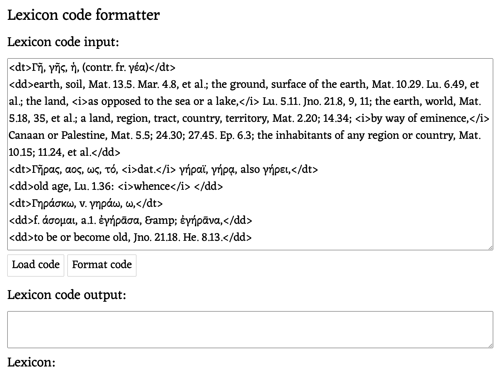
The value of the field "Lexicon code" should be the HTML code containing lexicon articles in which the words explained are wrapped by "dt" tag and explanations are wrapped by "dd" tag
Having pasted such code in the field "Lexicon code" click the button "Load code", and lexicon articles should be rendered below the heading "Lexicon". Then click the button "Format code" and formatted code will be outputted in "Lexicon code output" textarea. The outputted code will be as this:
<!-- part of code has been cut out --> <dt><span class="lexicon-heading" data-lemma="γῆ">Γῆ</span>, γῆς, ἡ, (contr. fr. γέα)</dt> <dd>earth, soil, Mat. 13.5. Mar. 4.8, et al.; the ground, surface of the earth, Mat. 10.29. Lu. 6.49, et al.; the land, <i>as opposed to the sea or a lake,</i> Lu. 5.11. Jno. 21.8, 9, 11; the earth, world, Mat. 5.18, 35, et al.; a land, region, tract, country, territory, Mat. 2.20; 14.34; <i>by way of eminence,</i> Canaan or Palestine, Mat. 5.5; 24.30; 27.45. Ep. 6.3; the inhabitants of any region or country, Mat. 10.15; 11.24, et al.</dd> <dt><span class="lexicon-heading" data-lemma="γῆρας">Γῆρας</span>, αος, ως, τό, <i>dat.</i> γήραϊ, γήρᾳ, also γήρει,</dt> <dd>old age, Lu. 1.36: <i>whence</i> </dd> <dt><span class="lexicon-heading" data-lemma="γηράσκω">Γηράσκω</span>, v. γηράω, ω,</dt> <dd>f. άσομαι, a.1. ἐγήρᾱσα, & ἐγήρᾱνα,</dd> <dd>to be or become old, Jno. 21.18. He. 8.13.</dd> <!-- part of code has been cut out -->
HTML formatted lexicon text should be converted to javascript string. It is easy to do by wrapping HTML code by backtick (``) symbols. If there are apostrophs in the text, they should be escaped using "\" symbol. The string we get be applying backticks should be made the value of the variable whose name is the same as the shortname of the resource as was defined while listing resource.
This way we get the following code:
greek_lexicon_to_nt_by_green =
`<h3>Α, α, <i>Ἄλφα</i></h3>
<dl>
<dt><span class="lexicon-heading" data-lemma="α">Α</span>, α, <i>Alpha</i>,</dt>
<dd>the first letter in the Greek Alphabet, and used for the <i>first</i>, Re. 1.8, 11; 21.6; 22.13.</dd>
<dd>In composition, it denotes privation; sometimes augmentation, and union.</dd>
<dt><span class="lexicon-heading" data-lemma="αβαρής">Αβᾰρής</span>, έος, οῦς, ὁ, ἡ, τὸ, -ές, (ἀ & <a class="inner-link" data-anchor="green-nt-lex-βαρος">βάρος</a>)</dt>
<dd>not burdensome, not chargeable, 2 Co. 11.9.</dd>
<dt><span class="lexicon-heading" data-lemma="αββᾶ">Αββᾶ</span></dt>
<dd>ind. ch. or Sy. <span class="hebrew">אבא</span>, father, Mar. 14.36. Ro.8.15 Ga. 4.6.</dd>
<dt><span class="lexicon-heading" data-lemma="ἄβυσσος">Ἄβυσσος</span>, ου, ἡ,</dt>
<dd><i>pr.</i> bottomless; place of the dead, hell.</dd>
<dt><span class="lexicon-heading" data-lemma="ἀγαθοεργέω">Ἀγαθοεργέω</span>, ῶ, Ἀγαθουργῶ, (<a class="inner-link" data-anchor="green-nt-lex-αγαθος">ἀγαθός</a> & <a class="inner-link" data-anchor="green-nt-lex-εργον">ἔργον</a>)</dt>
<dd>f. ήσω, </dd>
<dd>to do good, confer benefits, 1 Ti.6.18 N.T.</dd>
<dt><span class="lexicon-heading" data-lemma="αγαθοποιέω">Αγαθοποιέω</span>, ῶ, (<a class="inner-link" data-anchor="green-nt-lex-αγαθος">ἀγαθός</a> & <a class="inner-link" data-anchor="green-nt-lex-ποιεω">ποιέω</a>)</dt>
<dd>f. ήσω, </dd>
<dd>to do good, benefit, do well: (S.) <i>whence</i></dd>
<dt><span class="lexicon-heading" data-lemma="ἀγαθοποιΐα">Ἀγαθοποιΐα</span>, ας, ἡ,</dt>
<dd>well-doing, probity, 1 Pe. 4.19 L.G.</dd>
<dt><span class="lexicon-heading" data-lemma="ἀγαθοποιός">Ἀγαθοποιός</span>, οῦ, ὁ, ἡ,</dt>
<dd>a well-doer, 1 Pe. 2.14 L.G.</dd>
<dt><a class="pc-anchor" id="green-nt-lex-αγαθος"><span class="lexicon-heading" data-lemma="ἀγαθός">Ἀγᾰθός</span></a>, ή, όν, </dt>
<dd>good, profitable, generous, beneficent, upright, virtuous: <i>whence</i></dd>
<!-- part of code has been cut out -->
</dl>
<h3>Β, β, <i>Βῆτα</i></h3>
<dl>
<dt><a class="pc-anchor" id="green-nt-lex-βαθμος"><span class="lexicon-heading" data-lemma="βαθμός">Βαθμός</span></a>, οῦ, ὁ, (<a class="inner-link" data-anchor="green-nt-lex-βαινω">βαίνω</a>)</dt>
<dd><i>pr.</i> a step, stair; <i>met.</i> grade of dignity, degree, rank standing, 1 Ti 3.13.</dd>
<dt><span class="lexicon-heading" data-lemma="βάθος">Βάθος</span>, εος, ους, τό,</dt>
<dd>depth; τὸ βάθος, deep water, Lu. 5.4. Mat. 13.5, et al.; <i>met.</i> fullness, abundance, immensity, Ro. 11.33. 2 Co. 8.2; an extreme degree, 2 Co. 8.2; <i>pl.</i> deep laid plans, profound, secret things, 1 Co. 2.10. Re. 2.24.</dd>
<dt><span class="lexicon-heading" data-lemma="βαθύνω">Βαθύνω</span>, </dt>
<dd>f. ῠνῶ, </dd>
<dd>to deepen, excavate, Lu. 6.48 <i>from</i></dd>
<dt><a class="pc-anchor" id="green-nt-lex-βαθυς"><span class="lexicon-heading" data-lemma="βαθύς">Βαθύς</span></a>, εῖα, ύ, </dt>
<dd>deep. Jno. 4.11; <i>met.</i> deep, profound, Ac. 20.9; ὄρθρου βαθέος, <i>lit.</i> at deep morning twilight <i>i.e.</i> at the earliest dawn, Lu. 24.1.</dd>
<dt><span class="lexicon-heading" data-lemma="βάϊον">Βάϊον</span>, <i>v.</i> Βαΐον, ου, τό, </dt>
<dd>a palm branch, Jno. 12.13. S.</dd>
<dt><span class="lexicon-heading" data-lemma="βαλάντιον">Βαλάντιον</span>, ου, τό, </dt>
<dd>a bag, purse, Lu. 10.4; 12.33; 22.35, 36.</dd>
<!-- part of code has been cut out -->
<dt><a class="pc-anchor" id="green-nt-lex-βαρος"><span class="lexicon-heading" data-lemma="βάρος">Βάρος</span></a>, εος, τό,</dt>
<dd>weight, heaviness; a burden, any thing grievous and hard to be borne, Mat. 20.12. Ac. 15.28. Re. 2.24; burden, charge, <i>or,</i> weight, influence, dignity, honour, 1 Thes. 2.6; <i>with another noun in government,</i> fullness, abundance, excellence, 2 Co. 4.17.</dd>
<!-- part of code has been cut out -->
</dl>
<!-- part of code has been cut out -->`;
The code should be saved in the file whose name is the same as resource shortname, i.e. "greek_lexicon_to_nt_by_green.js" . Data file should be placed in directory having the same name as resource shortname: /data/lexicon/greek_lexicon_to_nt_by_green/ .
After doing this transcribed lexicon resource should work in sync with parsed text resource.
Checking completeness
Created transcribed lexicon resource should be checked for completenes.
To do this go to Lexicon completeness checker page and fill the form:
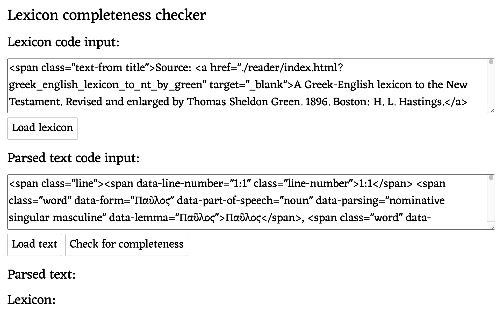
The value of the form‘s field "Lexicon code" should be full HTML code of the lexicon. Use browser’s HTML inspector (available on right-click in every major browser) to copy lexicon‘s HTML code from Library app’s page. To do this right-click inside HTML inspector's panel on the "div" element having "class" attribute "tab__content-inner" and in context menu select option "Copy outerHTML":
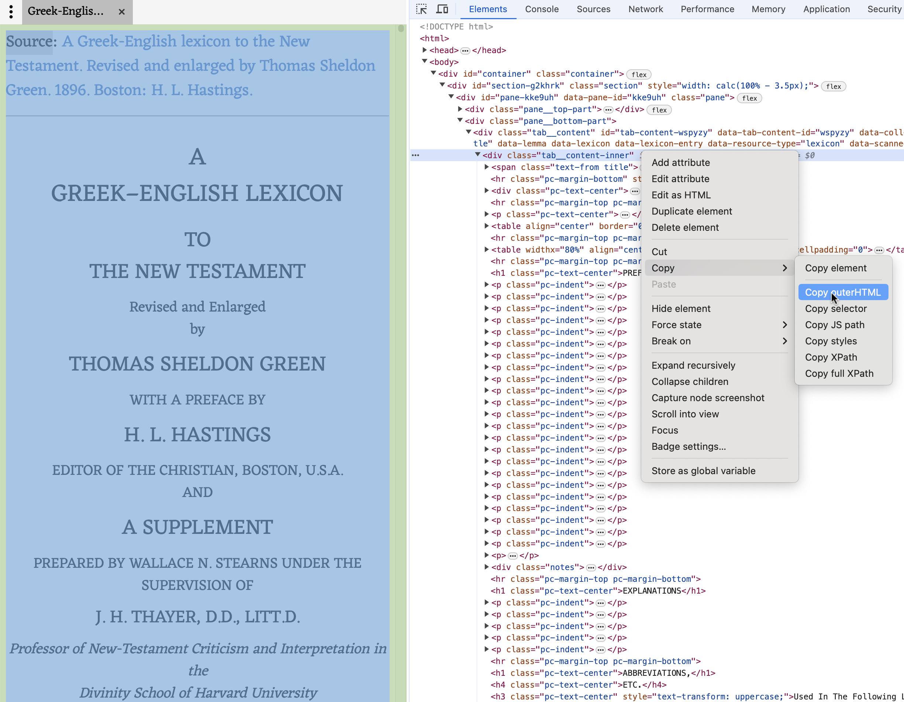
Then paste the copied string into form‘s field. After that select and delete opening and closing "div" tags from the code pasted into field:
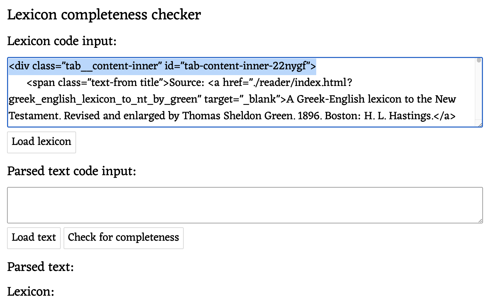
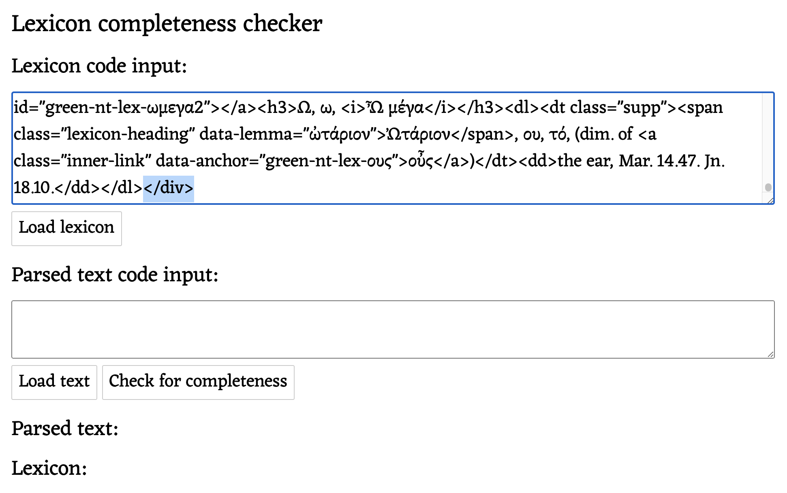
The value of the form‘s field "Parsed text code" should be HTML code of the parsed text. Use browser’s HTML inspector to copy this part of code from Library app’s page. As with lexicon's code, right-click inside HTML inspector's panel on the "div" element having "class" attribute "parsed-text-split-top" and in context menu select option "Copy outerHTML"; after that select and delete all code before first "span" tag having "class" attribute "line" and closing "div" tag from the code pasted into field:
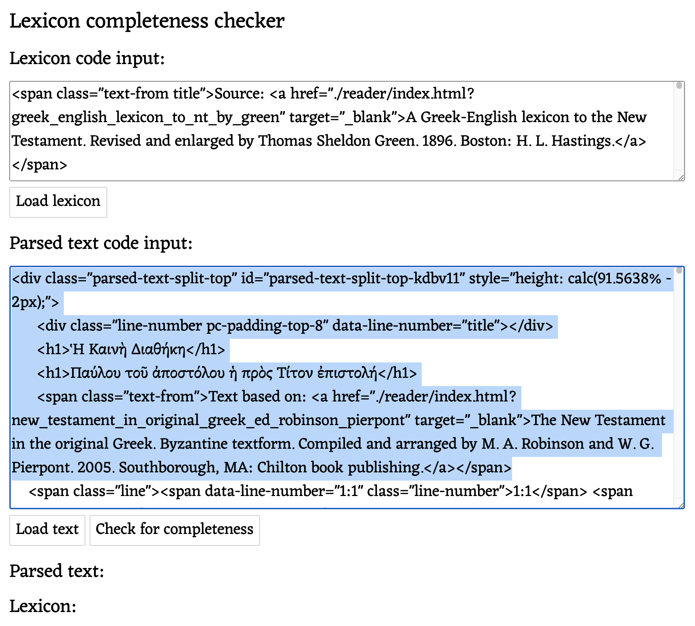
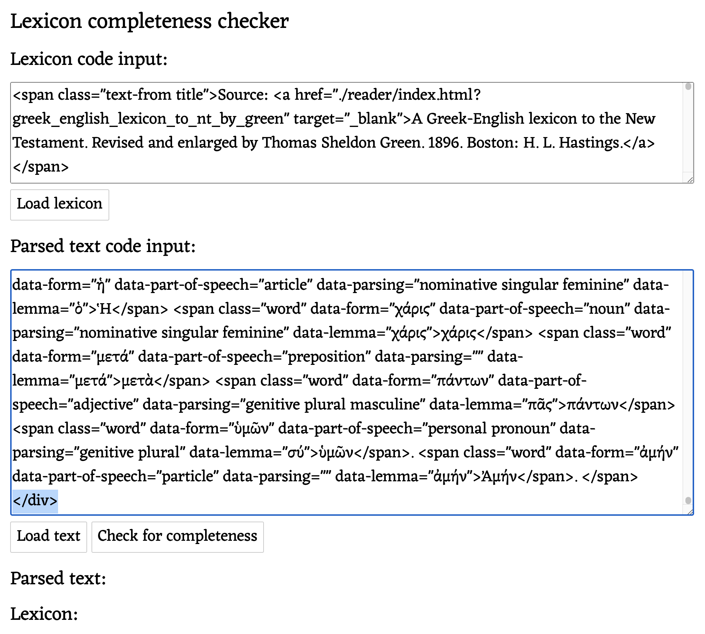
After filling fields with these values, click the button "Load lexicon" and the lexicon text will be displayed beneath "Lexicon" heading.
Then click the button "Load text" and the text will be displayed beneath "Parsed text" heading.
After loading lexicon and parsed text click the button "Check for completeness" and all words beneath the heading "Parsed text" should be displayed in green background.
If some words will not be displayed in green background, this may be for two reasons: (1) the word is not included in the lexicon (proper names are often not included in smaller lexicons); (2) the lemma of the same word in parsed text and in the lexicon are slightly different.
In the case (2) the code of lexicon‘s data file should be edited.
For example, in Epistle to Titus collection parsed text data file there is such line:
` <span class="word" data-form="ἐπηγγείλατο" data-part-of-speech="verb" data-parsing="aorist middle indicative 3rd person singular" data-lemma="ἐπαγγέλλομαι">ἐπηγγείλατο</span>`
In Th. S. Green‘s Greek-English lexicon resource data file the code of the relevant article is as follows:
`<dt><span class="lexicon-heading" data-lemma="ἐπαγγέλλω">Ἐπαγγέλλω</span>, (<a class="inner-link" data-anchor="green-nt-lex-επι">ἐπί</a> & <a class="inner-link" data-anchor="green-nt-lex-αγγελλω">ἀγγέλλω</a>)</dt> <dd>f. ελώ,</dd> <dd>to declare, announce; <i>mid.</i> to promise, undertake, Mar. 14.11. Ro. 4.21, et al.; to profess, 1 Ti. 2.10: <i>whence</i></dd>`
The value of "data-lemma" attribute in parsed text code is "ἐπαγγέλλομαι"; the value of "data-lemma" attribute in lexicon is "ἐπαγγέλλω". Since the values of "data-lemma" attribute in parsed text code and in lexicon code do not match, clicking on the word in parsed text pane will result into error message being displayed inside lexicon‘s content panel. To avoid this we need to add another "span" tag having class attribute value "lexicon-heading" and "data-lemma" attribute value "ἐπαγγέλλομαι":
`<dt><span class="lexicon-heading" data-lemma="ἐπαγγέλλω"><span class="lexicon-heading" data-lemma="ἐπαγγέλλομαι">Ἐπαγγέλλω</span></span>, (<a class="inner-link" data-anchor="green-nt-lex-επι">ἐπί</a> & <a class="inner-link" data-anchor="green-nt-lex-αγγελλω">ἀγγέλλω</a>)</dt> <dd>f. ελώ,</dd> <dd>to declare, announce; <i>mid.</i> to promise, undertake, Mar. 14.11. Ro. 4.21, et al.; to profess, 1 Ti. 2.10: <i>whence</i></dd>`
This should solve the issue. Similarly proceed with the other words which for the same reason were not displayed in the green background.
Coding policy
Dealing with alternative characters
In unicode two or more code points may encode characters which look identically or have only stylistic difference. In order for all functionality to work correctly the uniformity of encoding must be enforced by using only characters from certain "standard" set. To achieve this go to Unicode Characters changer and use the form to change unicode characters into "standard" ones.
Translation (scanned)
Creating image files
To create scanned resource of the type "Translation" you first need a series of JPG images, each image picturing one page of the book. Scanned resource always includes all pages of the book, i.e. each page from the title page to the last, not including covers and promotional materials. About creating a series of JPG files for scanned resource, read in Common tasks.
When you have a series of JPG files each image picturing one page of the book and named starting from page0001.jpg, submit them to the senior editor who will upload those files to the server. The files will be uploaded to the directory which was entered as value of the key "scanned_source_shortname" when translation resource was listed as part of collection. For example, in the Epistle to Titus collection the translation by R. Young has been listed and the value of the key "scanned_source_shortname" is "holy_bible_tr_young". It means that the pictures of the pages must be uploaded to the directory /_scans/holy_bible_tr_young/ .
Having uploaded the images of the pages to the server, senior editor should list the scanned book as described in section Listing scanned books.
After uploading the files of the scanned book and listing it among scanned books, it can be browsed using the value of the key "scanned_source_shortname" in the URL: parsedclassics.com/reader/embedded_bookreader.html?holy_bible_tr_young .
Creating contents file
In order for translation to work in sync with parsed text, the contents file must be created. To create contents file go to Scanned book contents generator page and fill the form:
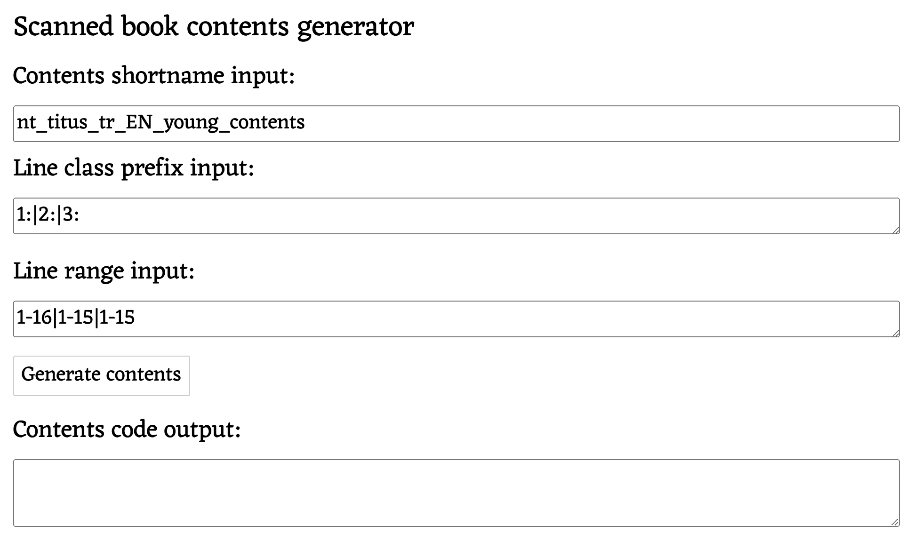
The value of the form‘s field "Line range" should be pipe delimited line ranges. In Epistle to Titus there are three chapters, the first having 16 verses, the second – 15 verses and the third – 15 verses. So, the value of this field should be 1-16|1-15|1-15 .
The value of the form‘s field "Prefix" should be be pipe delimited line prefixes, one for each chapter. The chapters of the New Testament are usually indicated by the number written to the left from verse number; colon usually used to separate chapter number from verse number. So, the value for this field is 1:|2:|3: .
The value of the form‘s field "Contents shortname" should be the same as the value of the key "contents_shortname" which was entered while listing resource as part of collection. The value we entered for this key was "nt_titus_tr_EN_young_contents", so we now should enter it as the value of the field "Contents shortname".
After filling fields with these values, click the button "Generate contents" and the contents code will be displayed in "Contents code output" textarea.
The code will be as this:
nt_titus_tr_EN_young_contents = {
"title": ""
, "1:1": ""
, "1:2": ""
// part of code has been cut out
, "1:15": ""
, "1:16": ""
, "2:1": ""
, "2:2": ""
// part of code has been cut out
, "2:14": ""
, "2:15": ""
, "3:1": ""
, "3:2": ""
// part of code has been cut out
, "3:14": ""
, "3:15": ""
}
Now we need to enter values for each key of this JSON object. The keys are indexes of lines of the parsed text. "title" is the index of the title of the parsed text. The values should be numbers from image file names (without zero padding). View images of the scanned files, look for the numbers in their file names and enter those numbers as the values for relevant keys.
We get the following code:
nt_titus_tr_EN_young_contents = {
"title": "753"
, "1:1": "753"
, "1:2": "753"
// part of code has been cut out
, "1:15": "753"
, "1:16": "753"
, "2:1": "753"
, "2:2": "753"
// part of code has been cut out
, "2:14": "753"
, "2:15": "753"
, "3:1": "753"
, "3:2": "753"
// part of code has been cut out
, "3:14": "753"
, "3:15": "753"
};
This code should be saved in the file having the same name as the value in "Contents shortname" field in the form, so it will be nt_titus_tr_EN_young_contents.js . The file should be placed in directory whose name is the same as resource shortname. Resource shortname is "nt_titus_tr_EN_young" so the directory will be /data/translation/nt_titus_tr_EN_young/ .
After doing this translation resource should work in sync with parsed text resource.
Translation (transcribed)
Creating transcribed resource of the type "Translation" involves creating one data file.
Creating data file
Data file uses certain formatting conventions.
HTML "span" tag having class attribute "line" should wrap each line of the text.
"span" tag having class attribute "line-number" should wrap line number in each line. The same "span" element should also have attribute "data-line-number" whose value should be line number. Line numbers should be the same as in parsed text resource.
"span" tag having class attribute "para" should mark start of each new paragraph.
HTML code formatted using these "span" tags should be converted to string and made the value of javascript global variable whose name is the same as resource shortname. We listed transcribed translation resource whose resource shortname is "nt_titus_tr_EN_green", so this will be variable's name.
This way we get such data file:
nt_titus_tr_EN_green = `<span class="line"><span class="line-number" data-line-number="1:1">1:1</span> Paul, a servant of God, and an apostle of Jesus Christ, according to the faith of the choice ones of God, and an acknowledging of truth that [is] according to piety, </span> <span class="line"><span class="line-number" data-line-number="1:2">1:2</span> upon hope of life age-during, which God, who doth not lie, did promise before times of ages, </span> <span class="line"><span class="line-number" data-line-number="1:3">1:3</span> (and He manifested in proper times His word,) in preaching, which I was entrusted with, according to a charge of God our Saviour, </span> <span class="line"><span class="line-number" data-line-number="1:4">1:4</span> to Titus — true child according to a common faith: Grace, kindness, peace, from God the Father, and the Lord Jesus Christ our Saviour! </span> <span class="line"><span class="line-number" data-line-number="1:5">1:5</span> For this cause left I thee in Crete, that the things lacking thou mayest arrange, and mayest set down in every city elders, as I did appoint to thee; </span> <span class="para"></span> <span class="line"><span class="line-number" data-line-number="1:6">1:6</span> if any one is blameless, of one wife a husband, having children stedfast, not under accusation of riotous living or insubordinate — </span> <span class="line"><span class="line-number" data-line-number="1:7">1:7</span> for it behoveth the overseer to be blameless, as God’s steward, not self-pleased, nor irascible, not given to wine, not a striker, not given to filthy lucre; </span> // part of code has been cut out <span class="line"><span class="line-number" data-line-number="3:8">3:8</span> Stedfast [is] the word; and concerning these things I counsel thee to affirm fully, that they may be thoughtful, to be leading in good works — who have believed God; these are the good and profitable things to men, </span> <span class="line"><span class="line-number" data-line-number="3:9">3:9</span> and foolish questions, and genealogies, and contentions, and strivings about law, stand away from — for they are unprofitable and vain. </span> <span class="para"></span> <span class="line"><span class="line-number" data-line-number="3:10">3:10</span> A sectarian man, after a first and second admonition be rejecting, </span> <span class="line"><span class="line-number" data-line-number="3:11">3:11</span> having known that he hath been subverted who [is] such, and doth sin, being self-condemned. </span> <span class="para"></span> <span class="line"><span class="line-number" data-line-number="3:12">3:12</span> When I shall send Artemas unto thee, or Tychicus, be diligent to come unto me to Nicopolis, for there to winter I have determined. </span> <span class="line"><span class="line-number" data-line-number="3:13">3:13</span> Zenas the lawyer and Apollos bring diligently on their way, that nothing to them may be lacking, </span> <span class="line"><span class="line-number" data-line-number="3:14">3:14</span> and let them learn — ours also — to be leading in good works to the necessary uses, that they may not be unfruitful. </span> <span class="line"><span class="line-number" data-line-number="3:15">3:15</span> Salute thee do all those with me; salute those loving us in faith; the grace [is] with you all! </span>`
Data file‘s name should be the same as resource shortname. The resource shortname is "nt_titus_tr_EN_green", so data file‘s name should be "nt_titus_tr_EN_green.js". Data file should be placed in directory having the same name: /data/translation/nt_titus_tr_EN_green/ .
After doing this transcribed translation resource should work in sync with parsed text resource.
Commentary (scanned)
Creating image files
To create scanned resource of the type "Commentary" you first need a series of JPG images, each image picturing one page of the book. Scanned resource always includes all pages of the book, i.e. each page from the title page to the last, not including covers and promotional materials. About creating a series of JPG files for scanned resource, read in Common tasks.
When you have a series of JPG files each image picturing one page of the book and named starting from page0001.jpg, submit them to the senior editor who will upload those files to the server. The files will be uploaded to the directory which was entered as value of the key "scanned_source_shortname" when commentary resource was listed as part of collection. For example, in the Epistle to Titus collection the commentary edited by W. R. Nicoll has been listed and the value of the key "scanned_source_shortname" is "expositors_greek_testament_ed_nicoll_vol_4". It means that the pictures of the pages must be uploaded to the directory /_scans/expositors_greek_testament_ed_nicoll_vol_4/ .
Having uploaded the images of the pages to the server, senior editor should list the scanned book as described in section Listing scanned books.
After uploading the files of the scanned book and listing it among scanned books, it can be browsed using the value of the key "scanned_source_shortname" in the URL: parsedclassics.com/reader/embedded_bookreader.html?expositors_greek_testament_ed_nicoll_vol_4 .
Creating contents file
In order for commentary to work in sync with parsed text, the contents file must be created. To create contents file go to Scanned book contents generator page and fill the form:
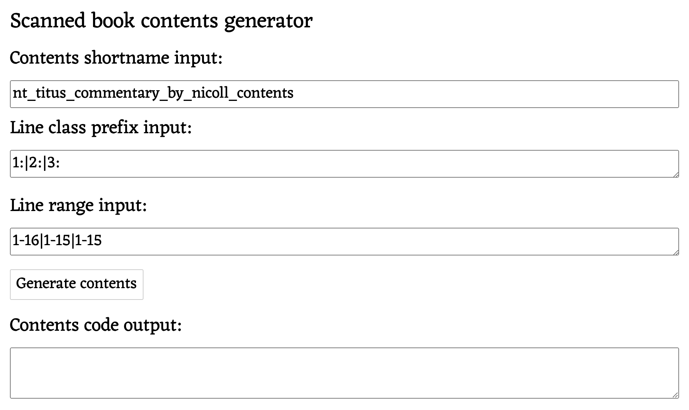
The value of the form‘s field "Line range" should be pipe delimited line ranges. In Epistle to Titus there are three chapters, the first having 16 verses, the second – 15 verses and the third – 15 verses. So, the value of this field should be 1-16|1-15|1-15 .
The value of the form‘s field "Prefix" should be be pipe delimited line prefixes, one for each chapter. The chapters of the New Testament are usually indicated by the number written to the left from verse number; colon usually used to separate chapter number from verse number. So, the value for this field is 1:|2:|3: .
The value of the form‘s field "Contents shortname" should be the same as the value of the key "contents_shortname" which was entered while listing resource as part of collection. The value we entered for this key was "nt_titus_commentary_by_nicoll_contents", so we now should enter it as the value of the field "Contents shortname".
After filling fields with these values, click the button "Generate contents" and the contents code will be displayed in "Contents code output" textarea.
The code will be as this:
nt_titus_commentary_by_nicoll_contents = {
"title": ""
, "1:1": ""
, "1:2": ""
// part of code has been cut out
, "1:15": ""
, "1:16": ""
, "2:1": ""
, "2:2": ""
// part of code has been cut out
, "2:14": ""
, "2:15": ""
, "3:1": ""
, "3:2": ""
// part of code has been cut out
, "3:14": ""
, "3:15": ""
}
Now we need to enter values for each key of this JSON object. The keys are indexes of lines of the parsed text. "title" is the index of the title of the parsed text. The values should be numbers from image file names (without zero padding). View images of the scanned files, look for the numbers in their file names and enter those numbers as the values for relevant keys.
We get the following code:
nt_titus_commentary_by_nicoll_contents = {
"v-title": "189"
, "v1-1": "189"
, "v1-2": "189"
// part of code has been cut out
, "v1-15": "194"
, "v1-16": "194"
, "v2-1": "195"
, "v2-2": "195"
// part of code has been cut out
, "v2-14": "200"
, "v2-15": "201"
, "v3-1": "201"
, "v3-2": "201"
// part of code has been cut out
, "v3-14": "206"
, "v3-15": "206"
};
This code should be saved in the file having the same name as the value in "Contents shortname" field in the form, so it will be nt_titus_commentary_by_nicoll_contents.js . The file should be placed in directory whose name is the same as resource shortname. Resource shortname is "nt_titus_commentary_by_nicoll" so the directory will be /data/commentary/nt_titus_commentary_by_nicoll/ .
After doing this commentary resource should work in sync with parsed text resource.
Commentary (transcribed)
Creating transcribed resource of the type "Commentary" involves creating one data file.
Creating data file
Data file uses certain formatting conventions.
HTML "span" tag having class attribute "verse" should wrap each line of the text.
"span" tag having class attribute "verse-number" should wrap verse number in each line. The same "span" element should also have attribute "data-line-number" whose value should be line number. Line numbers should be the same as in parsed text resource.
"span" tag having class attribute "para" should mark start of each new paragraph.
HTML code formatted using these "span" tags should be converted to string and made the value of javascript global variable whose name is the same as resource shortname. We listed transcribed commentary resource whose resource shortname is "nt_titus_commentary_by_bengel", so this will be variable's name.
This way we get such data file:
nt_titus_commentary_by_bengel = `<span class="verse"><span class="verse-number" data-line-number="1:1">1:1</span> Παυλος, <em>Paul<em/>) A title suitable to the character of Paul, and to the office of Titus.—κατὰ, <em>according to<em/>) Comp. κατὰ, Titus 1:4; Titus 1:9; 2 Timothy 1:1, note. </span> <span class="para"></span> It is the duty of an apostle to propagate the faith, Romans 1:5.—πίστιν, <em>faith<em/>) <em>faith—hope<em/> are the sum of Christianity; and these things Titus ought to regard in all his teaching, and avoid everything else; comp. 1 Timothy 1:5; 1 Timothy 3:15-16; 1 Timothy 4:1; 1 Timothy 4:3; 1 Timothy 4:10.—ἐκλεκτῶν Θεοῦ, <em>the elect of God<em/>) for whose sake we ought to do and endure all things, 2 Timothy 2:10. <em>The elect<em/> were from among Jews and Gentiles; and their faith was <em>common<em/>, Titus 1:4; 2 Peter 1:1 : of the former was Paul; of the latter, Titus. </span> <span class="verse"><span class="verse-number" data-line-number="1:2">1:2</span> Ἐλπίδι ζωῆς αἰωνίου, in <em>the hope of eternal life<em/>) ch. Titus 3:7. Hope has reference to <em>the promise<em/>.—ἣν, <em>which<em/>) <em>life<em/>.—ἀψευδὴς, <em>who cannot lie<em/>) The foundation of our confidence.—πρὸ χρόνων αἰωνίων, <em>before eternal ages, before the world began<em/>) <em>The promise<em/> of eternal life is already contained in the appellation, <em>the God of Abraham<em/>, etc.[Luke 20:37]. There is here implied an explicit promise to men. See Genesis 3, etc. The χρόνοι αἰωνιοι <em>followed<em/> the creation and the fall. </span> <span class="verse"><span class="verse-number" data-line-number="1:3">1:3</span> Καιροῖς) χρόνοι were longer than these. </span> // part of code has been cut out <span class="verse"><span class="verse-number" data-line-number="3:12">3:12</span> Ἀρτεμᾶν ἢ Τυχιχὸν, <em>Artemas or Tychicus<em/>) into whose hands Titus might deliver the lamp of the Gospel.—ἐλθεῖν πρός με, <em>to come to me<em/>) when affairs in Crete shall have been more fully set in order.—ἐκεῖ, <em>there<em/>) He does not say <em>here<em/>. Paul was not yet at Nicopolis. </span> <span class="verse"><span class="verse-number" data-line-number="3:13">3:13</span> Ἵνα μηδὲν, <em>that nothing<em/>) Titus therefore had the means. They did not go empty. </span> <span class="verse"><span class="verse-number" data-line-number="3:14">3:14</span> Μανθανέτωσαν, <em>let them learn<em/>) by thy admonition and example.—καὶ οἱ ἡμέτεροι, <em>ours also<em/>) not only we, but also ours, whom we have gained at Crete. These seem not to have given sufficient assistance to Zenas and Apollos, when they ought to have done so. [<em>It is not proper that some should ever and anon devolve the business in hand from themselves upon others.<em/>—V. g.] Zenas and Apollos were already in Crete with Titus; for this is the reason why he distinguishes them from Artemas and Tychicus, who were not until afterwards to be sent.—εἰς τὰς ἀναγκείας χρείας, <em>for necessary uses<em/>) even as spiritual <em>necessity<em/> [<em>i.e.<em/> the <em>tie<em/> which <em>necessarily<em/> binds saints to help one another] requires; so χρεία, Acts 6:3. <em>Spiritual necessity<em/> [‘necessitudo,’ tie of necessary obligation or relationship] lays the foundation of obligations, so that one cannot withdraw from another [so as not to help him]. </span>`
Data file‘s name should be the same as resource shortname. The resource shortname is "nt_titus_commentary_by_bengel", so data file‘s name should be "nt_titus_commentary_by_bengel.js". Data file should be placed in directory having the same name: /data/commentary/nt_titus_commentary_by_bengel/ .
After doing this commentary resource should work in sync with parsed text resource.
Commentary references (transcribed)
Creating resource of the type "Commentary references" involves creating data file and image files of the commentary books. The data file contains links to image files of the scanned commentary books, so the latter should be created first.
Creating image files
To create resource of the type "Commentary references" you first need to have one or more scanned commentary (collection of scholia) books. To create a scanned commentary book you need a series of JPG images, each image picturing one page of the book. Scanned book includes all pages, i.e. each page from the title page to the last, not including covers and promotional materials. About creating a series of JPG files for scanned resource, read in Common tasks.
When you have a series of JPG files each image picturing one page of the book and named starting from page0001.jpg, submit them to the senior editor who will upload those files to the server.
Having uploaded the images of the pages to the server, senior editor should list the scanned book as described in section Listing scanned books.
For example, in the file _scanned_books.js the key of the entry for K. Staab's "Pauluskommentare aus der Griechischen Kirche" is "staab_pauluskommentare_aus_griechishen_kirche". That means that image files of this book were uploaded to the directory /_scans/staab_pauluskommentare_aus_griechishen_kirche/ and can be browsed using the URL parsedclassics.com/reader/embedded_bookreader.html?staab_pauluskommentare_aus_griechishen_kirche .
Creating data file
Data file uses certain formatting conventions.
The file should contain "Commentaries" heading and "References" heading both wrapped by "h2" tags.
Below the heading "Commentaries" should be list of commentaries. Each item of the list should be wrapped by "span" tag having class attribute "text_from". Every list item should contain abbreviated name of the commentary book (usually author's surname) on the left and its bibliographical data to the right, separated by n-dash. Bibliographical data should be wrapped by "a" tag, having the value "_blank" of the attribute "target" and the relative URL as the value of the attribute "href".
Below the heading "References" should be list of references to commentaries for the each line of the classical text. "span" tag having class attribute "line" should wrap all references for the single line. "span" tag having class attribute "line-number" should wrap line number of the line. The same "span" element should also have line number as the value of its "data-line-number" attribute.
Each reference to the commentary book consists of commentary author name, abbreviated name of commentary book in brackets and page number. Commentary author name, abbreviated name of commentary book in brackets and page number should be wrapped by "a" tag having attribute "data-commentary" and attribute "data-page". The value of the attribute "data-commentary" should be the key of the relevant grammar book from the file _scanned_books.js. The value of the attribute "data-page" should be the number from the name of the image file (not the number of the page pictured!).
HTML code formatted using these tags should be converted to a string and made the value of javascript global variable whose name is the same as resource shortname. We listed commentary references resource whose resource shortname is "nt_titus_commentary_refs_by_parsedclassics", so this will be variable's name.
This way we get such data file:
nt_romans_commentary_refs_by_parsedclassics = `<h2>Commentaries</h2> <span class="text-from">Staab – <a href="./reader/index.html?staab_pauluskommentare_aus_griechishen_kirche" target="blank">Pauluskommentare aus der griechishen Kirche. Aus Katenenhandschriften gesammelt und herausgegeben. Von Dr. Karl Staab. 1933. Münster i. W.: Verlag der Aschendorfschen Verlagsbuchhandlung.</a></span> <h2>References</h2> <span class="line"><span data-line-number="1:1" class="line-number">1:1</span> <a data-commentary="staab_pauluskommentare_aus_griechishen_kirche" data-page="98">Eusebius von Emesa (Staab 46)</a>, <a data-commentary="staab_pauluskommentare_aus_griechishen_kirche" data-page="165">Theodor von Mopsuestia (Staab 113)</a>, <a data-commentary="staab_pauluskommentare_aus_griechishen_kirche" data-page="265">Severian von Gabala (Staab 213)</a>, <a data-commentary="staab_pauluskommentare_aus_griechishen_kirche" data-page="522">Photius von Konstantinopel (Staab 470)</a> </span> <span class="line"><span data-line-number="1:2" class="line-number">1:2</span> <a data-commentary="staab_pauluskommentare_aus_griechishen_kirche" data-page="109">Apollinaris von Laodicea (Staab 57)</a>, <a data-commentary="staab_pauluskommentare_aus_griechishen_kirche" data-page="265">Severian von Gabala (Staab 213)</a>, <a data-commentary="staab_pauluskommentare_aus_griechishen_kirche" data-page="522">Photius von Konstantinopel (Staab 470)</a> </span> <span class="line"><span data-line-number="1:3" class="line-number">1:3-4</span> <span data-line-number="1:4" class="line-number"></span> <a data-commentary="staab_pauluskommentare_aus_griechishen_kirche" data-page="109">Apollinaris von Laodicea (Staab 57)</a> </span> <span class="line"><span data-line-number="1:3" class="line-number">1:3-5</span> <span data-line-number="1:4" class="line-number"></span> <span data-line-number="1:5" class="line-number"></span> <a data-commentary="staab_pauluskommentare_aus_griechishen_kirche" data-page="522">Photius von Konstantinopel (Staab 470)</a> </span>`; // part of code has been cut out
Data file‘s name should be the same as resource shortname. Resource shortname is "nt_titus_commentary_refs_by_parsedclassics", so data file‘s name will be "nt_titus_commentary_refs_by_parsedclassics.js". Data file should be placed in the directory of the same name: /data/commentary_refs/nt_titus_commentary_refs_by_parsedclassics/ .
After doing this commentary references resource should work in sync with parsed text resource.
Coding data file by hand is tedious. The work can be made more effective by using tools.
Commentary references generator tool is used to generate data file. Let's use this tool to create data file containing references to apostle Paul's Epistle to Titus found in Staabs's "Pauluskommentare aus der Griechischen Kirche":
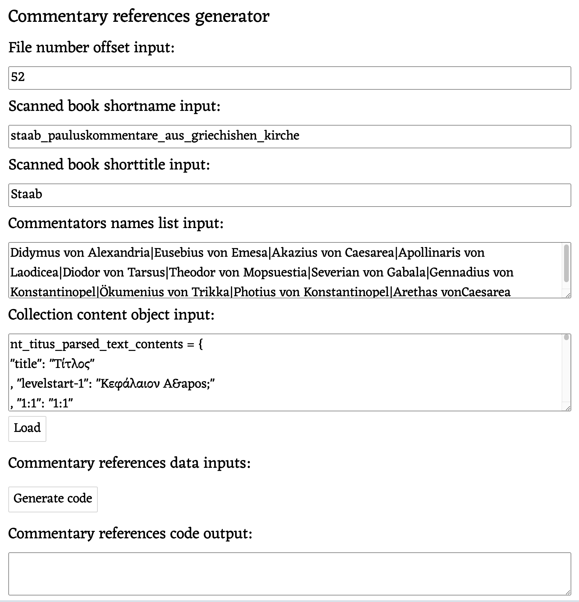
The value of the field "File number offset" should be a number expressing the difference between the number of the page in the image file and the number in the name of the image file. Here the value is "52" because e.g. the page 259 is pictured in the file whose name is page0311.jpg .
The value of the field "Scanned book shortname" should be index of the entry of the commentary book from _scans.php file.
The value of the field "Scanned book shorttile" should be short string (usually author's name) which respresents the commentary book. It should be the same as was used in the Commentaries list as described in this section above.
The value of the field "Commentators names list" should be pipe delimited list of commentators names whose commentaries are included in commentary book.
The value of the field "Collection content object" should be the code of the contents file of the parsed text resource which is used as collection's contents.
After entering such values the button "Load" should be clicked. This will result into input blocks being displayed below the heading "Commentary references data inputs", one input block for each line:
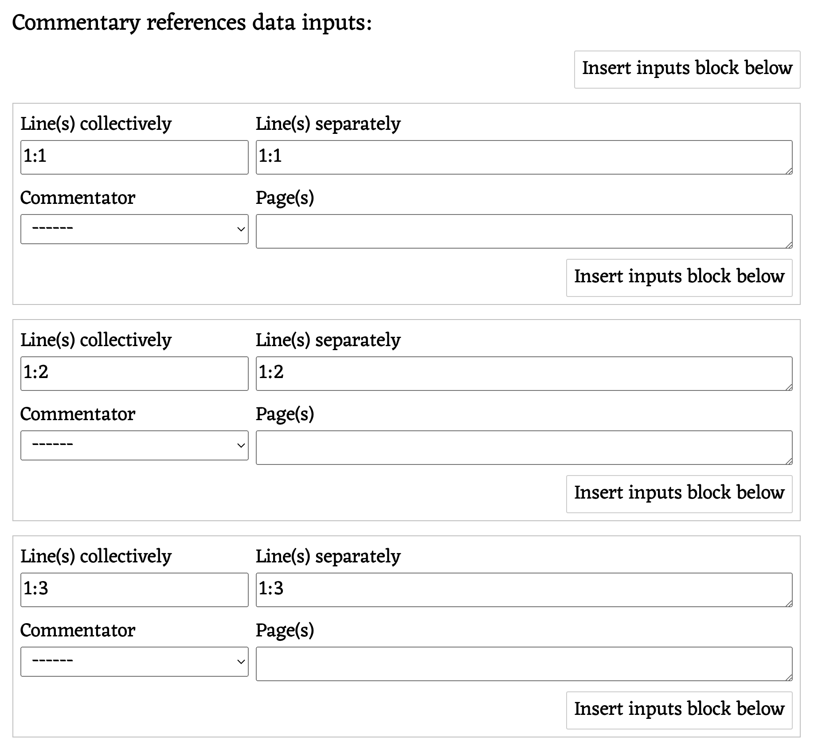
Each inputs block contains four fields and buttons "Insert Commentator/Page(s) fields" and "Insert inputs block below". Clicking "Insert inputs block below" button will result into new inputs block with empty fields being created below current block. Newly created inputs block can be removed by clicking Close button in top right corner. Clicking "Insert Commentator/Page(s) fields" button will result into Commentator field and Page(s) field being created below last pair of such fields. Newly created Commentator and Page(s) fields can be removed by clicking Close button in top right corner of Page(s) field.
Let's enter some values in the fields of such inputs blocks:
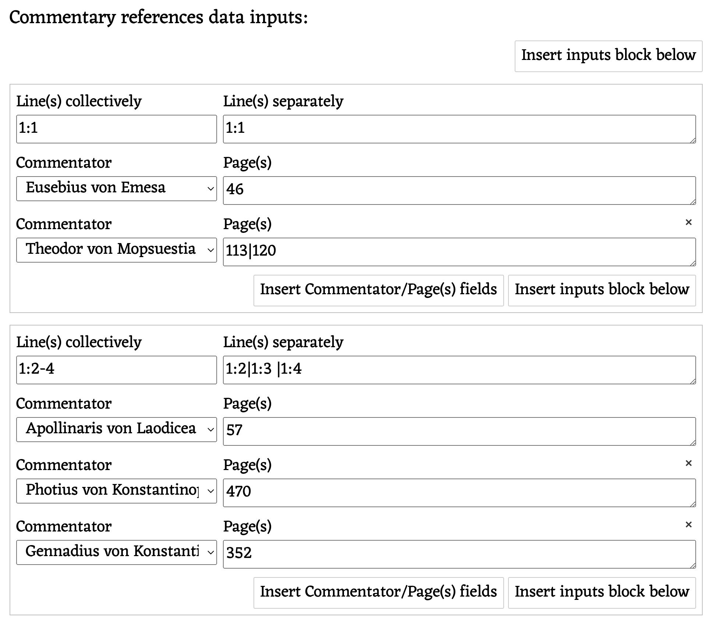
In the first block the second pair of Commentator and Page(s) fields was inserted by clicking the button "Insert Commentator/Page(s) fields. In the second of "Page(s)" fields was entered pipe delimited series of pages in which second commentator refers to the line 1:1.
In the second block in the field "Line(s) collectively" line range "1:2-4" was entered. I necessitates to enter pipe separated line numbers from that range in the field "Line(s) separately". In the fields "Page(s)" was entered page numbers of the commentary book in which commentators whose names are entered in the fields Commentator refers to that range of lines.
Having entered the values for all lines for which exist references in the commentary book, click the button "Generate code" and the code will be outputted in the textarea "Commentary references code".
The code generated should, as described above, made the value of the variable "nt_titus_commentary_refs_by_parsedclassics" and saved in the file of the same name.
Supplementing data file
In previous section using Commentary references generator tool we created data file which contains references only to one commentary book. What should be done if we need to create commentary references resource which contains references to two or more commentary books? Or as it can happen, we created created data file which contains references to comments of some commentators from certain commentary book and now we need to supplement it by adding references to comments by other commentatotors from the same commentary book. In such cases we can use References supplementer script.
In order to use it we first need to create two data files, one containing references to one grammar book, and other containing references to second grammar book or two data files one containing references to comments by some commentators from one commentary book, and other containing references to comments by other commentators from the same commentary book. Then the form should be filled:
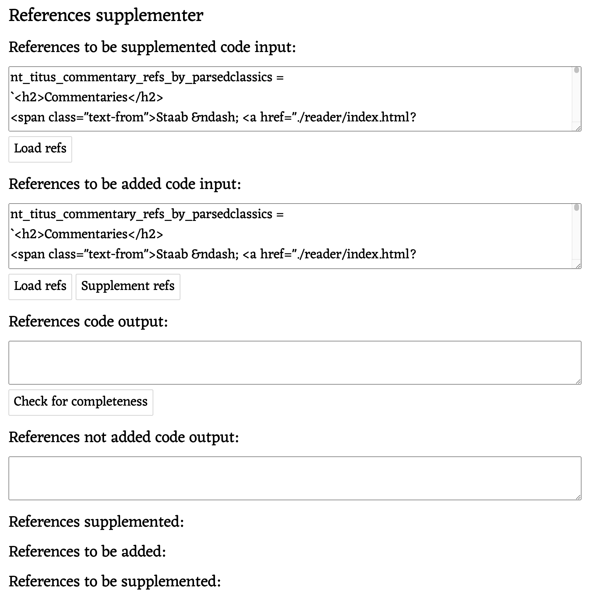
The value of the field "References to be supplemented code" should be the code containing the references to one commentary book or the code containing the references to comments of some only commentators from certain commentary book. Here the code entered contains references to comments of some only commentators from Staab's "Pauluskommentare aus der Griechischen Kirche".
The value of the field "References to be added code" should be the code containing the references to another commentary book or the code containing the references to comments of some other commentators from certain commentary book. Here the code entered contains references to comments of some other commentators from Staab's "Pauluskommentare aus der Griechischen Kirche".
Having entered such values in these fields we should click the buttons "Load refs" below these fields. This will result into references displayed below the headings "References to be supplemented" and "References to be added".
After that the button "Supplement refs" should be clicked. This will result into three things: (a) the code combining references from both pieces of code will be generated and outputted into "References code" textarea; (b) part of code from "References to be added code" textarea which the script was not able to include in the combined code will be outputted into "References not added code" textarea; (c) combined references will be displayed below the heading "Grammar references supplemented".
Now the button "Check for completeness" should be clicked. It will result in references which are included into combined code being highlighted green and references which are not included being highlighted red.
It remains to analyze the code from "References not added code" textarea and include it manually piece by piece into combined code. Then combined code should be made the value of of the variable "nt_titus_commentary_refs_by_parsedclassics" and saved in the file of the same name as described in previous section.
Grammar references (transcribed)
Creating resource of the type "Grammar references" involves creating data file and image files of the grammar books. The data file contains links to image files of the scanned grammar books, so the latter should be created first.
Creating image files
To create resource of the type "Grammar references" you first need to have one or more scanned grammar books. To create a scanned grammar book you need a series of JPG images, each image picturing one page of the book. Scanned book includes all pages, i.e. each page from the title page to the last, not including covers and promotional materials. About creating a series of JPG files for scanned resource, read in Common tasks.
When you have a series of JPG files each image picturing one page of the book and named starting from page0001.jpg, submit them to the senior editor who will upload those files to the server.
Having uploaded the images of the pages to the server, senior editor should list the scanned book as described in section Listing scanned books.
For example, in the file _scanned_books.js the key of the entry for A. T. Robertson's "Grammar of the New Testament in the light of historical research" is "grammar_of_greek_nt_in_light_of_hist_research_robertson". That means that image files of this book were uploaded to the directory /_scans/grammar_of_greek_nt_in_light_of_hist_research_robertson/ and can be browsed using the URL parsedclassics.com/reader/embedded_bookreader.html?grammar_of_greek_nt_in_light_of_hist_research_robertson .
Creating data file
Data file uses certain formatting conventions.
The file should contain "Grammars" heading and "References" heading both wrapped by "h2" tags.
Below the heading "Grammars" should be list of grammars. Each item of the list should be wrapped by "span" tag having class attribute "text_from". Every list item should contain abbreviated name of the grammar (usually author's surname) on the left and its bibliographical data to the right, separated by n-dash. Bibliographical data should be wrapped by "a" tag, having the value "_blank" of the attribute "target" and the relative URL as the value of the attribute "href".
Below the heading "References" should be list of references to grammars for the each line of the classical text. "span" tag having class attribute "line" should wrap all references for the single line. "span" tag having class attribute "line-number" should wrap line number of the line. The same "span" element should also have line number as the value of its "data-line-number" attribute.
Each reference to the grammar book consists of abbreviated grammar name and page number. Abbreviated name and page number should be wrapped by "a" tag having attribute "data-grammar" and attribute "data-page". The value of the attribute "data-grammar" should be the key of the relevant grammar book from the file _scanned_books.js. The value of the attribute "data-page" should be the number from the name of the image file (not the number of the page pictured!).
HTML code formatted using these tags should be converted to a string and made the value of javascript global variable whose name is the same as resource shortname. We listed grammar references resource whose resource shortname is "nt_titus_grammar_refs_by_parsedclassics", so this will be variable's name.
This way we get such data file:
nt_titus_grammar_refs_by_parsedclassics = `<h2>Grammars</h2> <span class="text-from">Robertson – <a href="./reader/index.html?grammar_of_greek_nt_in_light_of_hist_research_robertson" target="blank">A Grammar of the Greek New Testament in the light of historical research. By A.T. Robertson. 4-th edition. 1924. New York: George H. Doran Company.</a></span> <span class="text-from">Winer – <a href="./reader/index.html?treatise_on_grammar_of_nt_greek_winer" target="blank">A treatise on the grammar of New Testament Greek, regarded as a sure basis for New Testament exegesis. By dr. G. B. Winer. Translated from the German, with large additions and full indices, by rev. W. F. Moulton. Third edition, revised. (Ninth English edition.) 1882. Edinburgh: T. & T. Clark.</a></span> <h2>References</h2> <span class="line"><span data-line-number="1:1" class="line-number">1:1</span> <a data-grammar="treatise_on_grammar_of_nt_greek_winer" data-page="530">Winer 502</a> </span> <span class="line"><span data-line-number="1:1" class="line-number">1:1 sqq.</span> <a data-grammar="treatise_on_grammar_of_nt_greek_winer" data-page="735">Winer 707</a> </span> <span class="line"><span data-line-number="1:2" class="line-number">1:2</span> <a data-grammar="grammar_of_greek_nt_in_light_of_hist_research_robertson" data-page="310">Robertson 224</a>, <a data-grammar="treatise_on_grammar_of_nt_greek_winer" data-page="726">Winer 698</a> </span>`; // part of code has been cut out
Data file‘s name should be the same as resource shortname. Resource shortname is "nt_titus_grammar_refs_by_parsedclassics", so data file‘s name will be "nt_titus_grammar_refs_by_parsedclassics.js". Data file should be placed in the directory of the same name: /data/grammar_refs/nt_titus_grammar_refs_by_parsedclassics/ .
After doing this grammar references resource should work in sync with parsed text resource.
Coding data file by hand is tedious. The work can be made more effective by using tools.
Grammar references generator tool is used to generate data file. Let's use this tool to create data file containing references to apostle Paul's Epistle to Titus found in Robertson's "Grammar of the New Testament in the light of historical research":
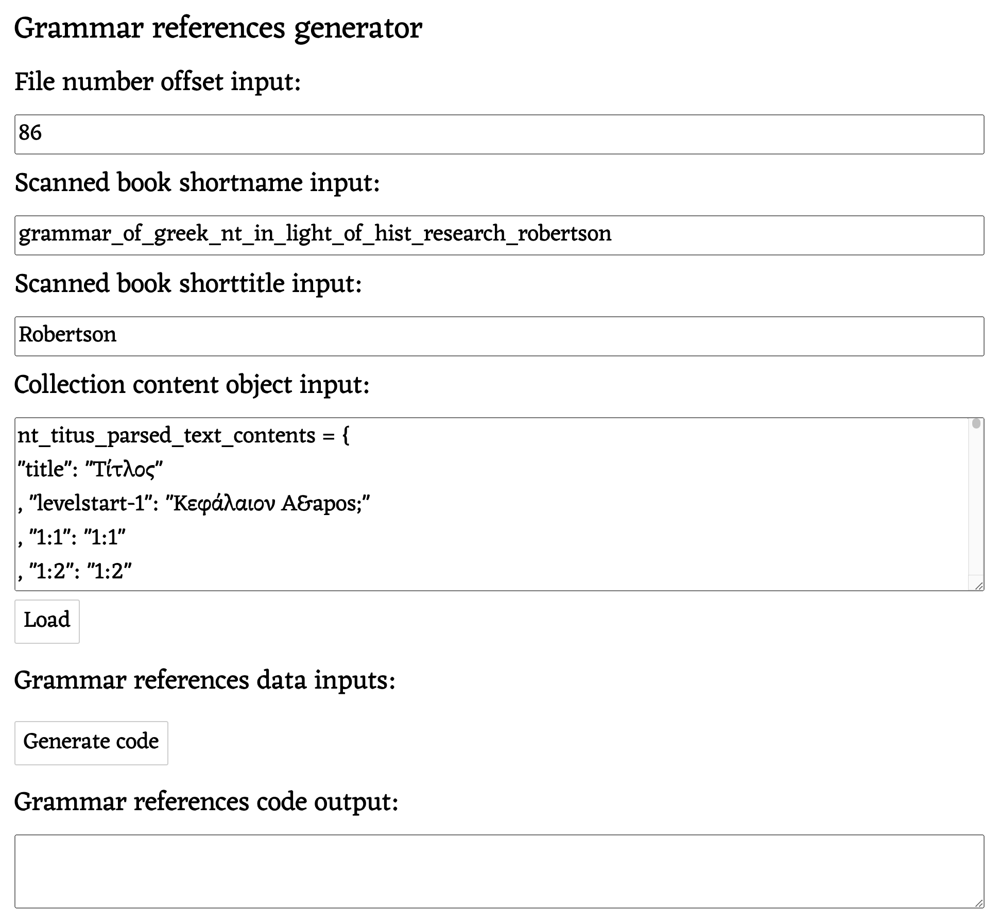
The value of the field "File number offset" should be a number expressing the difference between the number of the page in the image file and the number in the name of the image file. Here the value is "86" because e.g. the page 224 is pictured in the file whose name is page0310.jpg .
The value of the field "Scanned book shortname" should be index of the entry of the grammar book from _scans.php file.
The value of the field "Scanned book shorttile" should be short string (usually author's name) which respresents the grammar book. It should be the same as was used in the Grammars list as described in this section above.
The value of the field "Collection content object" should be the code of the contents file of the parsed text resource which is used as collection's contents.
After entering such values the button "Load" should be clicked. This will result into input blocks being displayed below the heading "Grammar references data inputs", one input block for each line:
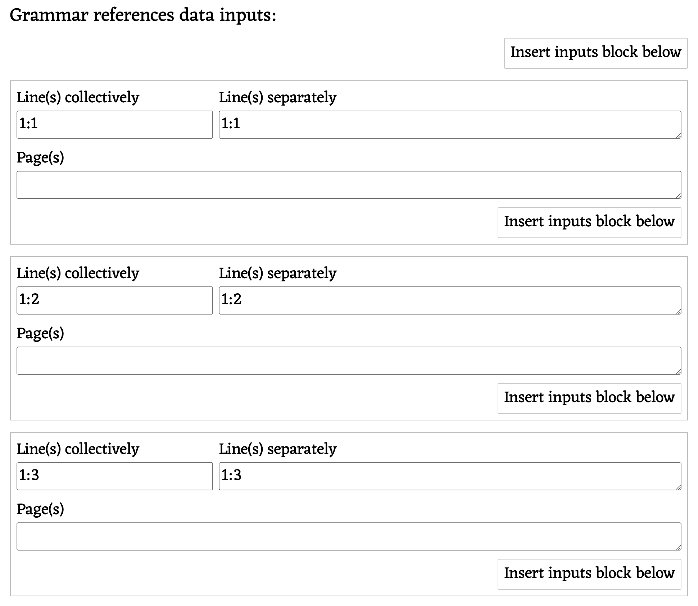
Each inputs block contains three fields and a button "Insert inputs block below". Clicking such button will result into new inputs block with empty fields created below current block. Newly created inputs block can be removed by clicking Close button in top right corner.
Let's enter some values in the fields of such inputs blocks:
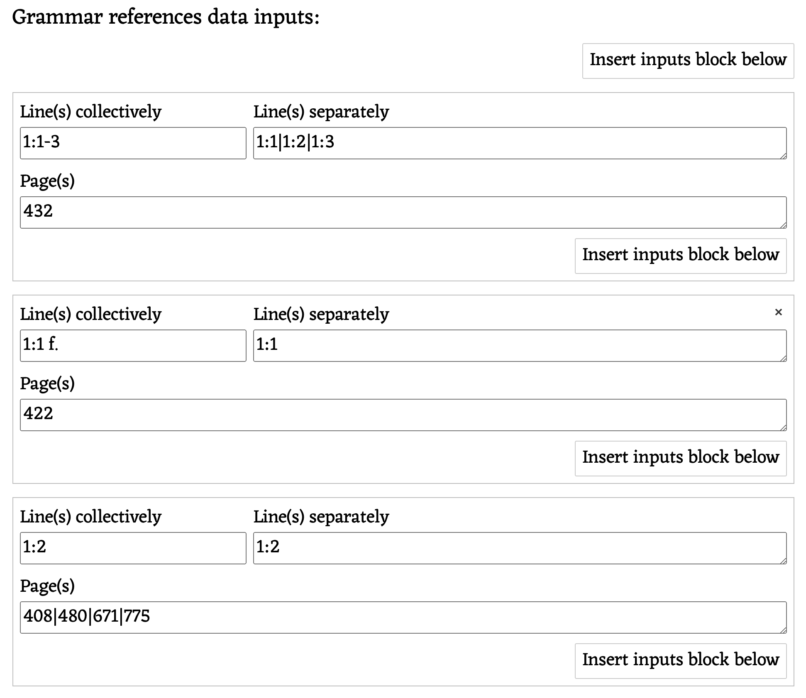
In the first block in the field "Line(s) collectively" line range "1:1-3" was entered. I necessitates to enter pipe separated line numbers from that range in the field "Line(s) separately". In the field "Page" was entered page number of the grammar book which refers to that range of lines in Epistle to Titus.
The second block was inserted by clicking the button "Insert inputs block below" in the first block. The value of the field "Line(s) collectively" is "1:1 f." and refers to range of lines, but the range is not explicitely defined, so in the field "Line(s) separately" is enough to enter the same line number "1:1". In the field "Page" was entered page number of the grammar book which refers to the "1:1 f." range of lines.
In the third block in the field "Pages" was entered pipe delimited series of pages of grammar book which refer to the line "1:2".
Having entered the values for all lines for which exist references in the grammar book, click the button "Generate code" and the code will be outputted in the textarea "Grammar references code".
The code generated should, as described above, made the value of the variable "nt_titus_grammar_refs_by_parsedclassics" and saved in the file of the same name.
Supplementing data file
In previous section using Grammar references generator tool we created data file which contains references only to one grammar book. What should be done if we need to create grammar references resource which contains references to two or more grammar books? In such case we can use References supplementer script.
In order to use it we first need to create two data files, one containing references to one grammar book, and other containing references to second grammar book. Then the form should be filled:
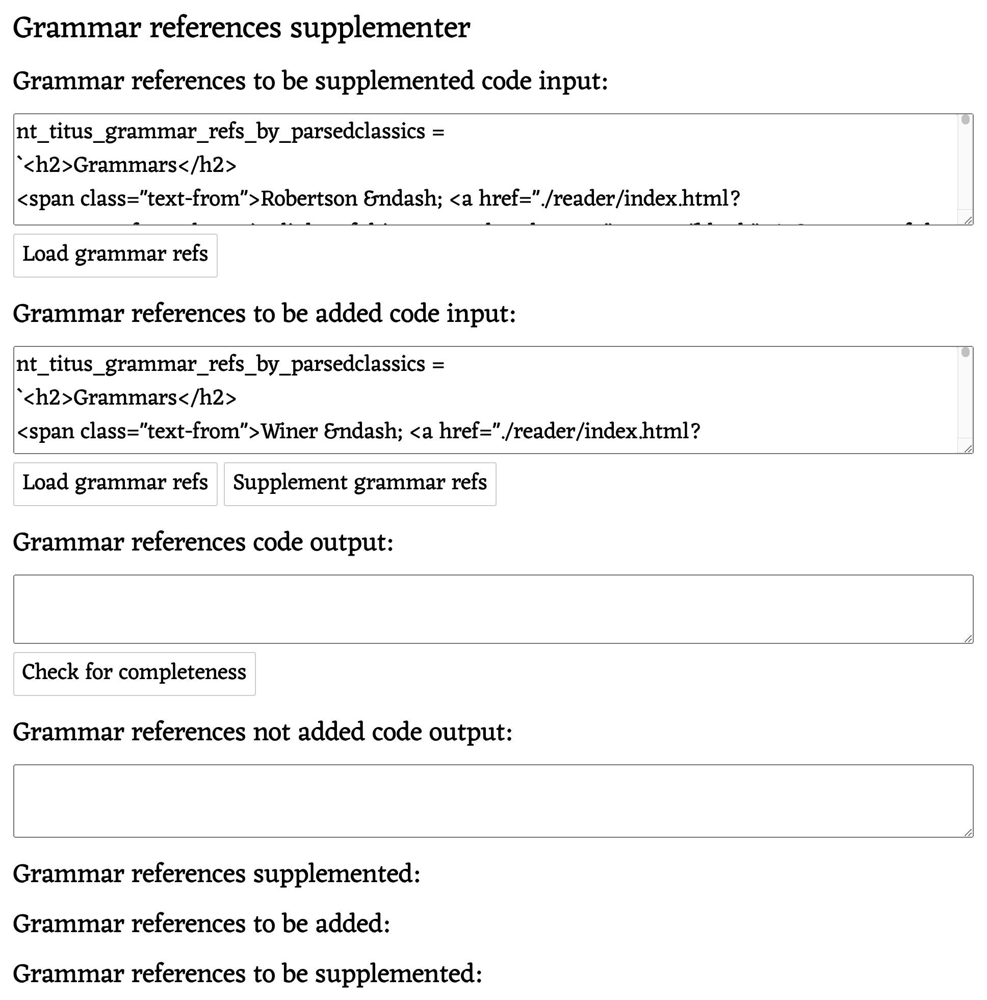
The value of the field "References to be supplemented code" should be the code containing the references to one grammar book. Here the code entered contains references to Robertson's "Grammar of the Greek New Testament in the light of historical research".
The value of the field "References to be added code" should be the code containing the references to second grammar book. Here the code entered contains references to Winer's "Treatise on the grammar of New Testament Greek".
Having entered such values in these fields we should click the buttons "Load refs" below these fields. This will result into references displayed below the headings "References to be supplemented" and "References to be added".
After that the button "Supplement refs" should be clicked. This will result into three things: (a) the code combining references from both pieces of code will be generated and outputted into "References code" textarea; (b) part of code containing references to the second grammar book which the script was not able to include in the combined code will be outputted into "References not added code" textarea; (c) combined references will be displayed below the heading "Grammar references supplemented".
Now the button "Check for completeness" should be clicked. It will result in references which are included into combined code being highlighted green and references which are not included being highlighted red.
It remains to analyze the code from "References not added code" textarea and include it manually piece by piece into combined code. Then combined code should be made the value of of the variable "nt_titus_grammar_refs_by_parsedclassics" and saved in the file of the same name as described in previous section.
Diagram set (transcribed)
Creating resource of the type "diagram set" involves creating diagram images and data file.
Creating diagram images
To create diagram images Syntax diagram generator script should be used. This program generates syntax diagrams based on Modernized Reed-Kellogg diagram system. Syntax diagrams are generated from input in JSON format; input JSON can be generated by filling the form:
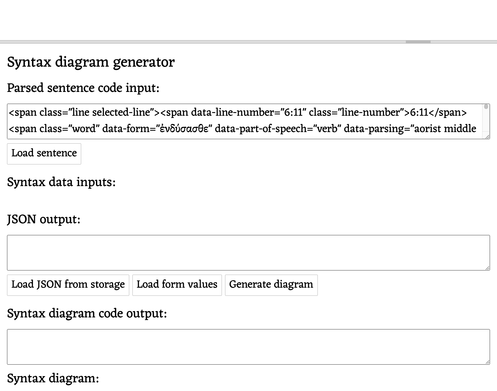
The value of the field "Parsed sentence code" should be the code from parsed text data file containing lines with the sentences to be diagrammed. Here we entered the code of the line 6:11 from apostle Paul's Epistle to Ephesians.
After entering the value of the field "Parsed sentence code" the button "Load sentence" should be clicked. It will result into two things: (a) above the splitter the sentence will be displayed, (b) inputs block "Syntactic relation" will be displayed below the heading "Syntax data":
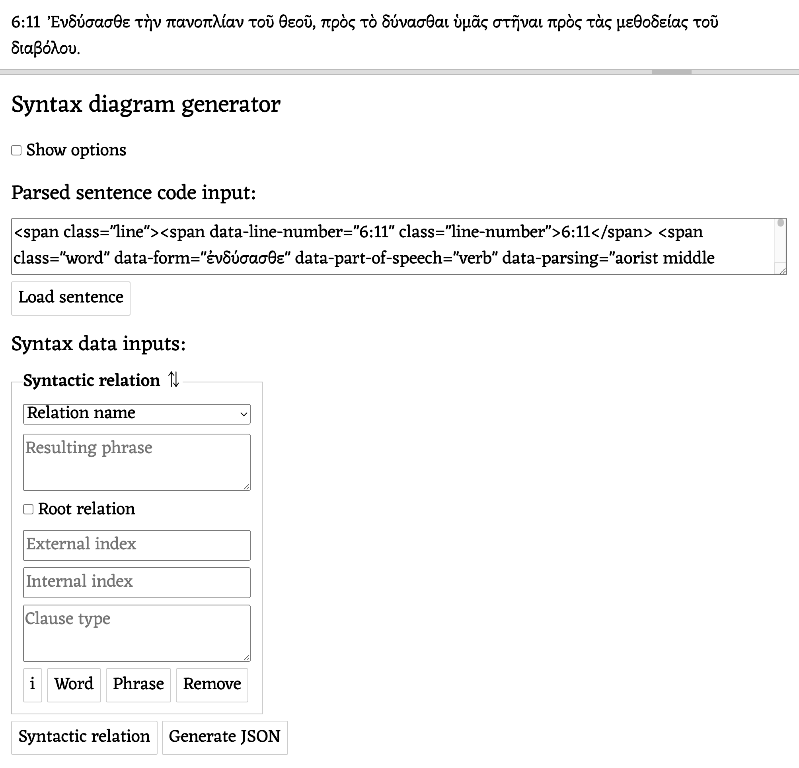
Creating of syntax diagram is being done by manipulating inputs blocks such as that displayed after clicking the button "Load sentence". One line of inputs blocks describes one syntactic relation. The order of the lines is not essential.
There are three types of inputs blocks: (a) syntactic relation block; (b) word block; (c) phrase block.
Syntactic relation block stands first in the line of inputs blocks. The values of the fields of syntactic relation inputs block describe syntactic relation itself, i.e. in abstraction of words and/or phrases it relates. After the loading of the sentence new syntactic relation inputs block can be added by clicking the button "Syntactic relation". Syntactic relation inputs block can be removed by clicking the button "Remove". If we have two or more lines of inputs blocks, we can reorder them by dragging the handle ⇅ .
The values of the fields of word inputs block describe how the word functions inside syntactic relation. New word inputs block can be added by clicking the button "Word". Word inputs block can be removed by clicking the button "Remove" which is below the fields which describe the word.
The values of the fields of phrase inputs block describe how the phrase functions inside syntactic relation. New phrase inputs block can be added by clicking the button "Phrase". Phrase inputs block can be removed by clicking the button "Remove" which is below the fields which describe the phrase.
If we need to reorder word and/or phrase inputs blocks inside the line of inputs blocks, we can do it by dragging the handle ⇄ .
Only one Syntactic relation can be marked as "Root relation" by checking checkbox. (Root relation is that, which is displayed by the most left symbol in the diagram.)
Although the order of the lines of inputs blocks is not essential, it is recommended to analyze syntactic relations in certain order, which would allow to generate as often as possible partial diagram of the sentence. In order to be able to generate partial diagram as often as possible, we need:
(a) to start from root relation, if root relation relates only words, not phrases;
(b) if (root) relation relates some phrase, start analysis from that phrase and then analyze (root) relation;
(c) after analyzing (root) relation proceed with analyzing relations which relate words of (root) relation with other words;
(d) if word of (root) relation is related by some other relation to phrase, relation of that phrase should be analyzed first;
(e) use rules (b)-(d) for all non root relations in the structure of the sentence.
By using these simple rules we will be able to click the buttons "Generate JSON" and "Generate diagram" each time we have part of the sentence analyzed to its constituent words.
Let's fill the form for the sentence from the line 6:11 of the aposte Paul's Epistle to Ephesians. It is the sentence Ἐνδύσασθε τὴν πανοπλίαν τοῦ θεοῦ, πρὸς τὸ δύνασθαι ὑμᾶς στῆναι πρὸς τὰς μεθοδείας τοῦ διαβόλου.
At first we will fill the fields for the phrase "ἐνδύσασθε τὴν πανοπλίαν". The fields of the input blocks should be filled this way:
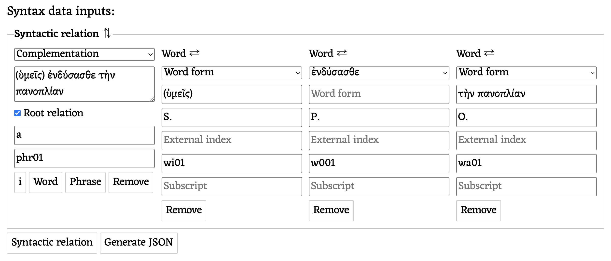
In the left inputs block which describes syntax relation itself we entered "Complementation" as the value of the field "Relation name", the phrase "(ὑμεῖς) ἐνδύσασθε τὴν πανοπλίαν" as the value of the field "Resulting phrase", the string "root_relation" as the value of the field "Internal index". The latter field cannot be empty and should have as the value any unique string, but usually the string "root_relation" is used for root relation and "phr" with padded number for other relations. As the value for the field "External index" the character "a" was entered, because in diagrams all clauses (syntactic relations expressing predication) are indexed by small Latin characters. As the value for the field "Clause type" the string "imperatival hortatory clause" was entered (it will be displayed onmouseover on the letter of external index). The checkbox "Root relation" was checked, because complementation symbol of "(ὑμεῖς) ἐνδύσασθε τὴν πανοπλίαν" should be the leftmost syntactic relation symbol in diagram. The checkbox "Root relation" should be checked in one and only one of the relation inputs blocks.
The next three inputs blocks describe the words. First two fields of word inputs block are used to enter word form. Word form can be entered by selecting it from dropdown. It was done with the word "ἐνδύσασθε". The word "ὑμεῖς" is implicit, so it is not present in the dropdown and it was needed to enter it by hand. The word "ὑμεῖς" is in parenthesis thus indicating that the word is implicit. The word "τὴν πανοπλίαν" was also entered by hand because it is preceded by article. The words preceded by articles are really phrases formed by syntactic relation of specification, but since it would be very tedious to display this in diagrams, application of article to single word is displayed as if it were not phrase, but single word. Word form must be entered for each word inputs block using dropdown or manually.
In the field "Syntactic role" we entered "S." (subject) for the word "ὑμεῖς", "P." (predicator) for the word "ἐνδύσασθε" and "O." (object) for the word "τὴν πανοπλίαν". This field is optional; we need to be careful not to forget to enter syntactic role where needed. Entering syntactic role is needed when syntactic relation allows for the words it relates to have different syntactic roles and syntactic roles are not indicated in the diagram by the sign of certain syntactic relation.
In the field "Internal index" the value for the word "ἐνδύσασθε" was entered automatically when we selected word form using dropdown. For the word "ὑμεῖς" we entered "wi01" as internal index and for the word "τὴν πανοπλίαν" we entered "wa01" as internal index. As internal index can serve any unique string, but usually the string "wi" with padded number is added for implicit word and "wa" with padded number is added for word preceded by article. The field "Internal index" is required; its values are used to identify the words in different inputs blocks as the same.
The word "ὑμεῖς" has "(1)" as the value of the field "Subscript". Subscript numerical indexes in diagrams are used to mark anaphora and kataphora. i.e. are being attached to pronouns and the words which refer to the the same object. In this sentence the first (implicit) pronoun "ὑμεῖς" and second (explicit) pronoun "ὑμᾶς" have the same reference, so both should have "(1)" as the value of the field "Subscript".
After filling fields of inputs blocks with these values we can generate fragment of the diagram by clicking the button "Generate JSON", and then clicking the button "Generate diagram".
Three things will happen (a) syntax diagram JSON code will be outputted in the textarea "JSON output", (b) syntax diagram HTML code will be outputted in the textarea "Syntax diagram code output", (c) syntax diagram will be displayed below the heading "Syntax diagram":
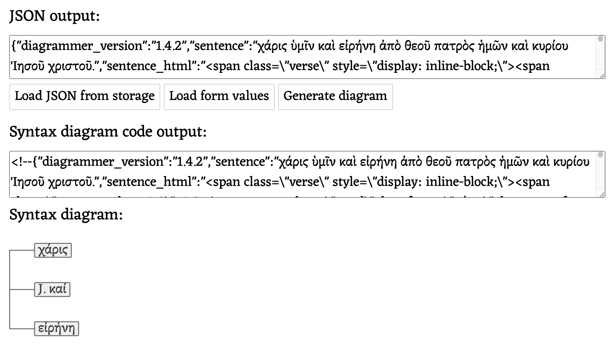
Now let's fill the fields in the new line of inputs blocks:
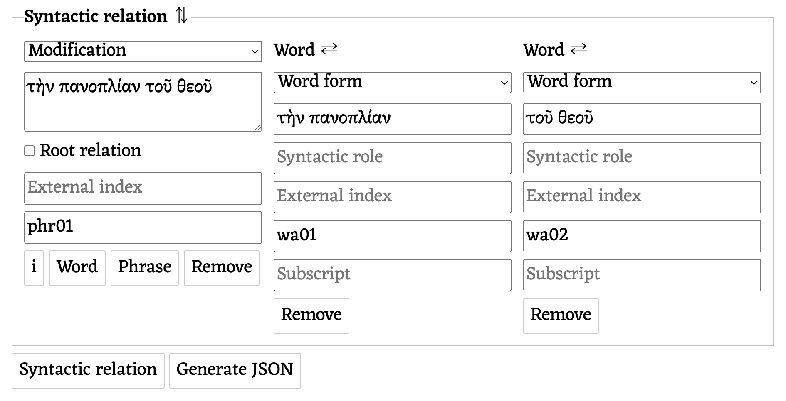
In the left inputs block which describes syntax relation itself we entered "Modification" as the value of the field "Relation name", the phrase "τὴν πανοπλίαν τοῦ θεοῦ" as the value of the field "Resulting phrase", the string "phr01" as the value of the field "Internal index". The checkbox "Root relation" is left unchecked. The fields "External index" and "Clause type" were left empty because the phrase is not clause.
To the right are two word inputs blocks. We entered "τὴν πανοπλίαν" and "τοῦ θεοῦ" as the values of the fields "Word form", and the values "wa01" and "wa02" as the values of the fields "Internal index". Notice, that internal index "wa01" is the same as in previous line of inputs blocks – internal indexes allow the script to identify words and phrases entered in different inputs blocks as identical.
The fields "Syntactic role" are left empty, because in diagrams the difference of role between words/phrases participating in relation of modification is expressed by the sign of modification ‐ arrow pointing from word/phrase which modifies to the word being modified.
After filling fields of inputs blocks with these values let's click the button "Generate JSON", and then the button "Generate diagram". The diagram generated will be this:
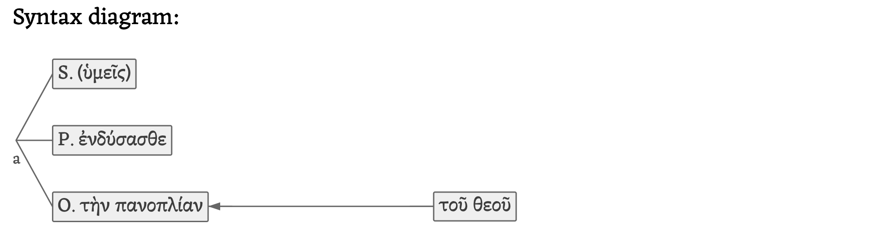
Now let's fill the fields in the new line of inputs blocks:
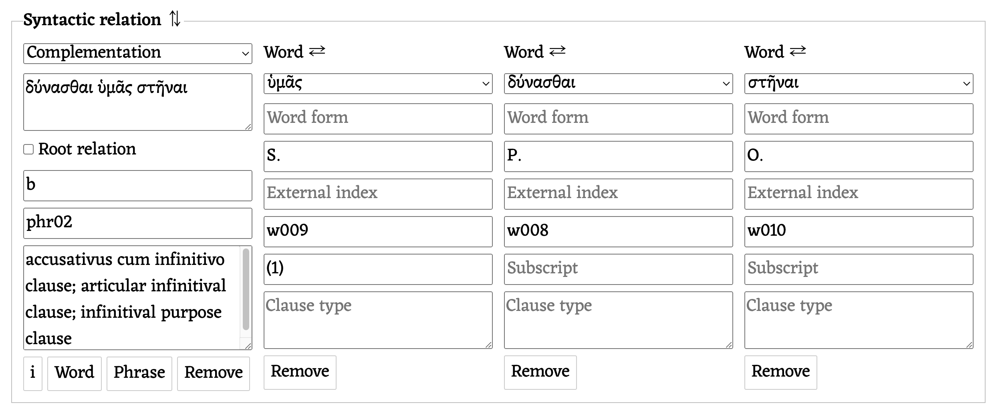
In the left inputs block which describes syntax relation itself we entered "Complementation" as the value of the field "Relation name", the phrase "δύνασθαι ὑμᾶς στῆναι" as the value of the field "Resulting phrase", the string "phr02" as the value of the field "Internal index". The checkbox "Root relation" is left unchecked. Since the phrase is a clause, as the value of the field "External index" we entered small Latin character "b". As the value of the field "Clause type" we entered the string "accusativus cum infinitivo clause; articular infinitival clause; infinitival purpose clause"
To the right are three word inputs blocks. We entered "ὑμᾶς", "δύνασθαι" and "στῆναι" as the values of the fields "Word form" by selecting the words in dropdown; the values "w009", "w008", "w010" of the fields "Internal index" were added automatically after selection of words in the dropdown.
The fields "Syntactic role" have the values "S." (subject), "P" (predicator) and "O." (object).
The word "ὑμᾶς" has "(1)" as the value of the field "Subscript". Subscript numerical indexes in diagrams are used to mark anaphora and kataphora. i.e. are being attached to pronouns and the words which refer to the the same object. In this sentence the first (implicit) pronoun "ὑμεῖς" and second pronoun "ὑμᾶς" has the same reference, so both should have "(1)" as the value of the field "Subscript".
If we now will click the buttons "Generate JSON" and "Generate diagram", the new JSON will be gererated, but the diagram will remain the same, because as yet we have not entered some relation which relates the clause "(ὑμεῖς) ἐνδύσασθε τὴν πανοπλίαν" with the clause "δύνασθαι ὑμᾶς στῆναι".
The clause "δύνασθαι ὑμᾶς στῆναι" modifies the word "ἐνδύσασθε", but not directly, because at first it is specified by the article "τό" and then the result of specification is made "object" of preposition "πρός", or in terms of the diagramming system, introductory word "πρός" is applied.
Let's enter the values of the fields in two lines of inputs blocks which describe these two syntactic relations of specification and introduction:
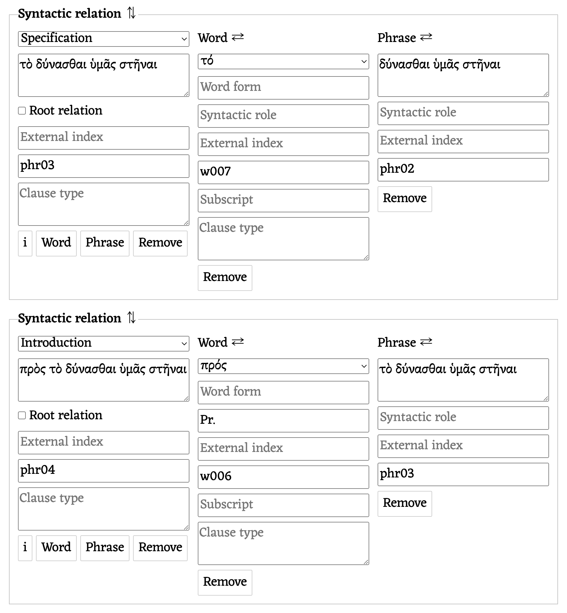
In the first line in the left inputs block which describes syntax relation itself we entered "Specification" as the value of the field "Relation name", the phrase "τὸ δύνασθαι ὑμᾶς στῆναι" as the value of the field "Resulting phrase", the string "phr03" as the value of the field "Internal index". The checkbox "Root relation" is left unchecked.
To the right are word inputs block and phrase inputs block. In the word inputs block the word form "τό" was entered by using dropdown; the value "w007" was entered automatically after selecting word form by using dropdown. In the phrase inputs block the string "δύνασθαι ὑμᾶς στῆναι" was entered as the value of the field "Phrase", and the string "phr02" was entered as the value of the field "Internal index" – this value is the same as was entered for the same phrase in prevous line of inputs blocks.
In the second line in the left inputs block which describes syntax relation itself we entered "Introduction" as the value of the field "Relation name", the phrase "πρὸς τὸ δύνασθαι ὑμᾶς στῆναι" as the value of the field "Resulting phrase", the string "phr04" as the value of the field "Internal index". The checkbox "Root relation" is left unchecked.
To the right are word inputs block and phrase inputs block. In the word inputs block the word form "πρός" was entered by using dropdown; the value "w006" was entered automatically after selecting word form by using dropdown. In the phrase inputs block the string "τὸ δύνασθαι ὑμᾶς στῆναι" was entered as the value of the field "Phrase", and the string "phr03" was entered as the value of the field "Internal index" – this value is the same as was entered for the same phrase in prevous line of inputs blocks.
Now we can describe modification relation which will relate the word "ἐνδύσασθε" and the phrase "πρὸς τὸ δύνασθαι ὑμᾶς στῆναι":
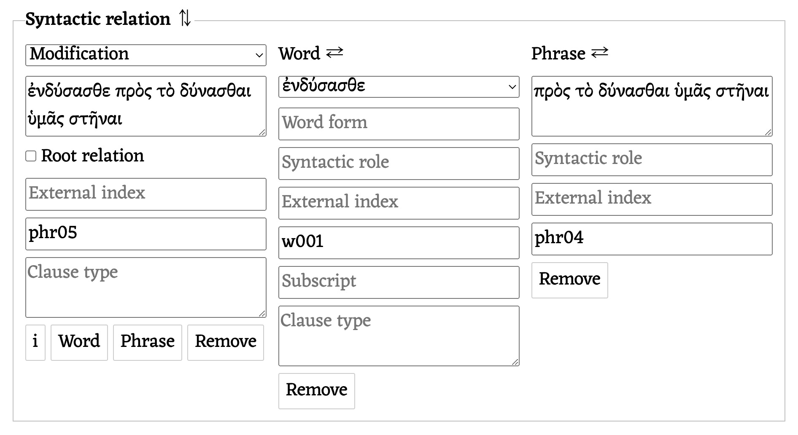
In the left inputs block which describes syntax relation itself we entered "Modification" as the value of the field "Relation name", the phrase "ἐνδύσασθε πρὸς τὸ δύνασθαι ὑμᾶς στῆναι" as the value of the field "Resulting phrase", the string "phr05" as the value of the field "Internal index". The checkbox "Root relation" is left unchecked.
To the right are word inputs block and phrase inputs block. In the word inputs block the word form "ἐνδύσασθε" was entered by using dropdown; the value "w001" was entered automatically after selecting word form by using dropdown. In the phrase inputs block the string "πρὸς τὸ δύνασθαι ὑμᾶς στῆναιι" was entered as the value of the field "Phrase", and the string "phr04" was entered as the value of the field "Internal index" – this value is the same as was entered for the same phrase in prevous line of inputs blocks.
After filling fields of inputs blocks with these values let's click the button "Generate JSON", and then the button "Generate diagram". The diagram generated will be this:
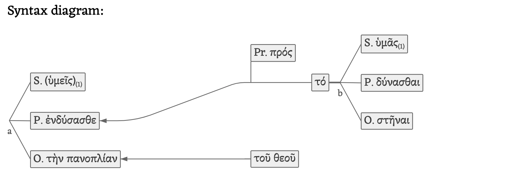
Let's describe another one syntax relation:
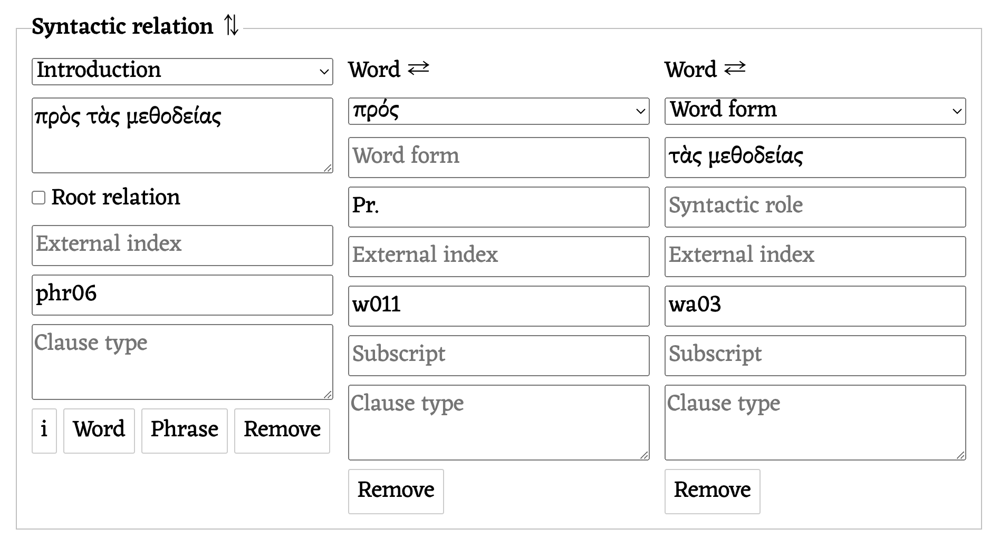
In the left inputs block which describes syntax relation itself we entered "Introduction" as the value of the field "Relation name", the phrase "πρὸς τὰς μεθοδείας" as the value of the field "Resulting phrase", the string "phr06" as the value of the field "Internal index". The checkbox "Root relation" is left unchecked.
To the right are two word inputs blocks. We entered "πρός" as as the value of the field "Word form" by using dropdown. The value of the field "Internal index" were added automatically after selection of word in the dropdown. The value "τὰς μεθοδείας" were entered by hand because it is preceded by article. The words preceded by articles are really phrases formed by syntactic relation of specification, but since it would be very tedious to display this in diagrams, application of article to single word is displayed as if it were not phrase, but single word. For the word "τὰς μεθοδείας" we entered "wa03" (there were already two words preceded by article) as internal index.
If we now will click the buttons "Generate JSON" and "Generate diagram", the new JSON will be gererated, but the diagram will remain the same, because as yet we have not entered some relation which relates the phrase "πρὸς τὰς μεθοδείας" with the rest of diagram.
Let's describe another one syntax relation, and this relation will relate the phrase of the relation just described with the rest of the diagram:
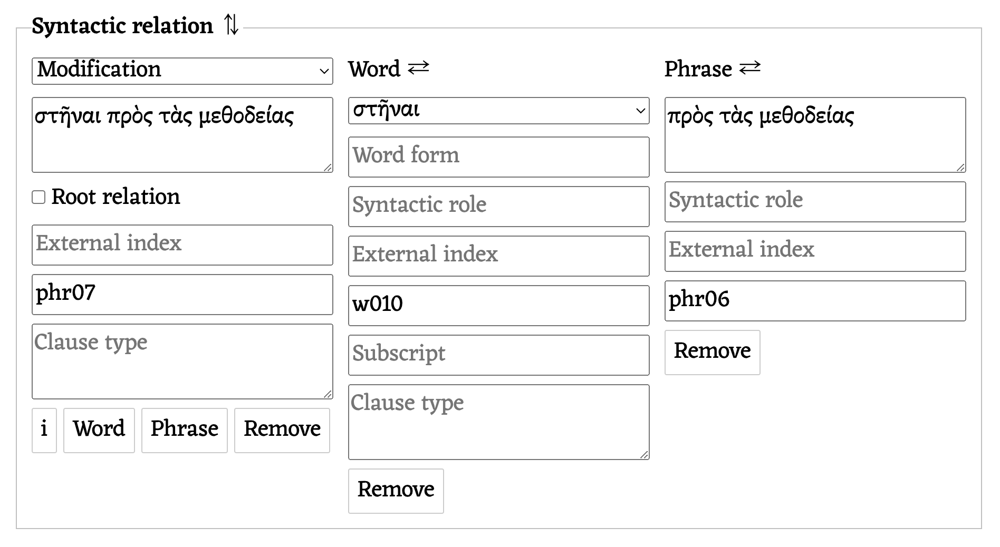
In the left inputs block which describes syntax relation itself we entered "Modification" as the value of the field "Relation name", the phrase "στῆναι πρὸς τὰς μεθοδείας" as the value of the field "Resulting phrase", the string "phr07" as the value of the field "Internal index". The checkbox "Root relation" is left unchecked.
To the right are word inputs block and phrase inputs block. In the word inputs block the word form "στῆναι" was entered by using dropdown; the value "w010" of the field "Internal index" was entered automatically after selecting word form by using dropdown. In the phrase inputs block the string "πρὸς τὰς μεθοδείας" was entered as the value of the field "Phrase", and the string "phr06" was entered as the value of the field "Internal index" – this value is the same as was entered for the same phrase in prevous line of inputs blocks.
After filling fields of inputs blocks with these values let's click the button "Generate JSON", and then the button "Generate diagram". The diagram generated will be this:
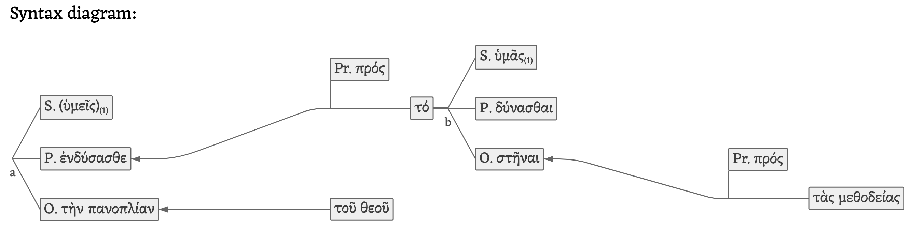
Now let's describe the last syntactic relation:
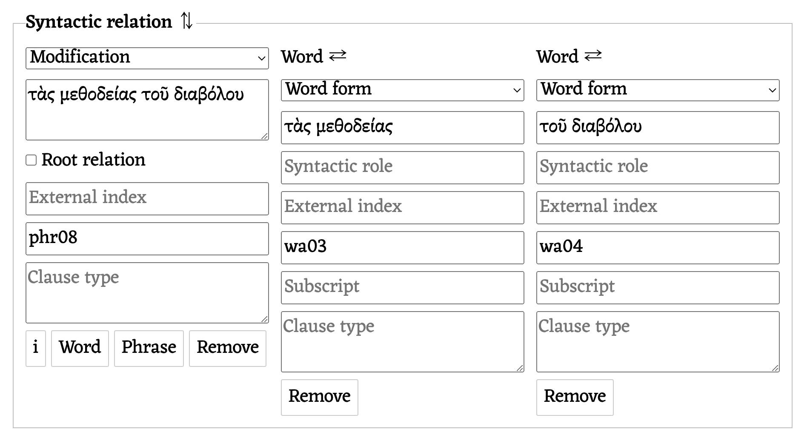
In the left inputs block which describes syntax relation itself we entered "Modification" as the value of the field "Relation name", the phrase "τὰς μεθοδείας τοῦ διαβόλου" as the value of the field "Resulting phrase", the string "phr08" as the value of the field "Internal index". The checkbox "Root relation" is left unchecked.
To the right are two word inputs blocks. We entered "τὰς μεθοδείας" and "τοῦ διαβόλου" as the values of the fields "Word form", and the values "wa03" and "wa04" as the values of the fields "Internal index". Notice, that internal index "wa03" is the same as in one of previous lines of inputs blocks ‐ internal indexes allow the script to identify words and phrases entered in different inputs blocks as identical.
The fields "Syntactic role" are left empty, because in diagrams the difference of role between words/phrases participating in relation of modification is expressed by the sign of modification ‐ arrow pointing from word/phrase which modifies to the word being modified.
After filling fields of inputs blocks with these values let's click the button "Generate JSON", and then the button "Generate diagram". The diagram generated will be this:
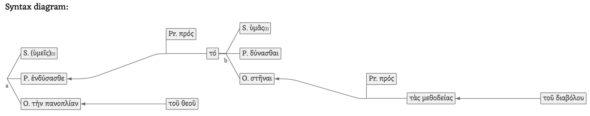
The sentence we just diagrammed is quite short and simple. It was not complicated to deal with inner indexes and subscripts – there was only one subscript and needed inner indexes were found in previous line of inputs blocks. This is not always the case. If we have to diagram long and complicated sentence it may be needed much scrolling and searching until needed inner index or subscript is found. In order to avoid such tedious searching Info button marked by letter "i" should be clicked:
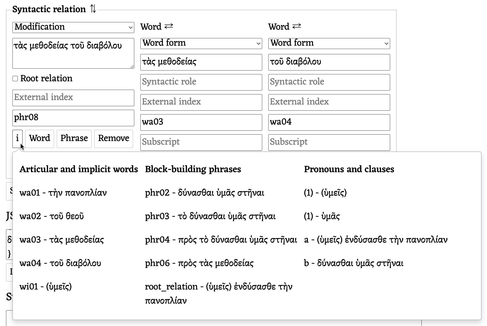
Clicking Info button results into opening of the panel in which you can find all used inner indexes, external indexes and subscripts.
In the first column all articular words (i.e. words preceded by article) and implicit words together with their inner indexes are listed.
In the second column block-building phrases with their inner indexes are listed. "Block-building phrase" is technical term of diagramming system, referring to such phrases in case of which there might be a need to refer to them by inner index. All phrases are considered block-building except those which are result of relations of modification, apposition and relativization.
The phrases which are result of relations of modification, apposition and relativization are called "Non-block building phrases" and are listed in the third column. In the third column also are listed technical "phrases" i.e. those technical objects which are result of the technical "relations" called "Front fork", "Back fork", "Hook" and "Cable".
In the fourth column pronouns with their subscript numbers and clauses with their external indexes are listed. Notice, that clauses are listed not only in the fourth column, but also in the second column – as phrases with inner indexes. That was done by design – sometimes we search for inner index, sometimes for external index and it is useful to have all inner indexes of phrases in one place and all external indexes of clauses in another place.
Between each index and its word or phrase there is a link represented by ∞ symbol. Click the link to scroll the page to the relevant input.
Onmouseover on internal indexes of clauses displays clause type in the tooltip:
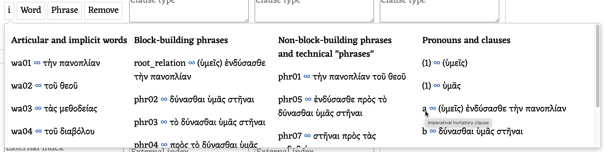
Onmouseover on internal indexes of clauses displays relation name in the tooltip:
Quite often happens, that there is a need to correct a diagram – we may have forgotten to add some subscript or external index or whatever else migtht be wrong in a diagram; or the sentence may be so complex that there is a need to make a break and return to work on it after some time. In such cases we will load saved JSON code back into the form. To do it we need to paste JSON code into "JSON" textarea and click the button "Load form values":
Each time, when we click the button "Generate JSON" the JSON code generated is saved in localStorage. It is useful in case we incidentaly close the tab in which we filled the form. The form values can be loaded from local storage by clicking the button "Load JSON from storage":
Syntax diagram generator has Options panel which is by default hidden. To see it check "Show options" checkbox:
Options panel allows to set the value of "column_left_distance" variable whose default value is 75 (pixels) and cannot be less than 50.
The meaning of this parameter is as follows: it is distance/gap in pixels which separates the column of block-building phrases on the right from the column of block-building phrases on the left; between colums can be only non-block-building relations such as modification, relativization, apposition, or some technical "relation". In the diagram we just generated there are four columns and three distances/gaps 125px wide:
By entering one number as "column_left_distance" value the width of the distance between columns is being set for all diagram. By entering several numbers separated by pipe characters we can control the width of the distance between each pair of columns. E.g. here we have set separate width for each of three distances/gaps between four columns in our diagram:
Setting different widths between pairs of columns is often needed to avoid overcrowding of lines and ensure better look and readability of diagrams.
In case there are more distances/gaps between columns in diagram, than pipe separated numbers, the last number will be used for each gap whose width was left undefined.
Clicking the button "Save as default" will save current value for creating new diagrams, i.e. it will be available after opening Syntax diagram generator.
Description in this section of diagramming of Ephesians 6:11 gives general understanding how diagramming is done using Diagram generator script. To be better acquainted with diagramming, study selected examples: Colossians 4:10-11, Luke 23:50-51. In example pages to see inputs blocks and field values click the button "Load form values", to see the diagram click the button "Generate diagram".
Creating data file
Data file uses certain formatting conventions.
HTML "span" tag having class attribute "line" should wrap each line of the text.
"span" tag having class attribute "line-number" should wrap verse number in each line. The same "span" element should also have line number as the value of its "data-line-number" attribute.
After one or several "span" tags having class attribute "line" should be the code representing the diagram. This is the code outputted into "Syntax diagram code" textarea when the button "Genenerate diagram" is being clicked.
HTML formatted lines of text and diagram code should be converted to a string and made the value of javascript global variable whose name is the same as resource shortname. We listed diagram set resource whose resource shortname is "nt_ephesians_diagrams_by_parsedclassics", so this will be variable's name.
This way we get such data file:
nt_ephesians_diagrams_by_parsedclassics = `
// part of code has been cut out
<span class='line'><span data-line-number='6:11' class='line-number'>6:11</span>Ἐνδύσασθε τὴν πανοπλίαν τοῦ θεοῦ, πρὸς τὸ δύνασθαι ὑμᾶς στῆναι πρὸς τὰς μεθοδείας τοῦ διαβόλου.</span>
<!--{"diagrammer_version":"1.6.21","sentence":"Ἐνδύσασθε τὴν πανοπλίαν τοῦ θεοῦ, πρὸς τὸ δύνασθαι ὑμᾶς στῆναι πρὸς τὰς μεθοδείας τοῦ διαβόλου.","sentence_html":"<span class=\"line selected-line\" style=\"display: inline-block;\"><span data-line-number=\"6:11\" class=\"line-number\">6:11</span> <span class=\"word\" data-form=\"ἐνδύσασθε\" data-part-of-speech=\"verb\" data-parsing=\"aorist middle imperative 2nd person plural\" data-lemma=\"ἐνδύω\">Ἐνδύσασθε</span> <span class=\"word\" data-form=\"τήν\" data-part-of-speech=\"article\" data-parsing=\"accusative singular feminine\" data-lemma=\"ὁ\">τὴν</span> <span class=\"word\" data-form=\"πανοπλίαν\" data-part-of-speech=\"noun\" data-parsing=\"accusative singular feminine\" data-lemma=\"πανοπλία\">πανοπλίαν</span> <span class=\"word\" data-form=\"τοῦ\" data-part-of-speech=\"article\" data-parsing=\"genitive singular masculine\" data-lemma=\"ὁ\">τοῦ</span> <span class=\"word\" data-form=\"θεοῦ\" data-part-of-speech=\"noun\" data-parsing=\"genitive singular masculine\" data-lemma=\"θεός\">θεοῦ</span>, <span class=\"word\" data-form=\"πρός\" data-part-of-speech=\"preposition\" data-parsing=\"\" data-lemma=\"πρός\">πρὸς</span> <span class=\"word\" data-form=\"τό\" data-part-of-speech=\"article\" data-parsing=\"accusative singular neuter\" data-lemma=\"ὁ\">τὸ</span> <span class=\"word\" data-form=\"δύνασθαι\" data-part-of-speech=\"verb\" data-parsing=\"present middle infinitive\" data-lemma=\"δύναμαι\">δύνασθαι</span> <span class=\"word\" data-form=\"ὑμᾶς\" data-part-of-speech=\"personal pronoun\" data-parsing=\"accusative plural\" data-lemma=\"σύ\">ὑμᾶς</span> <span class=\"word\" data-form=\"στῆναι\" data-part-of-speech=\"verb\" data-parsing=\"aorist active infinitive\" data-lemma=\"ἵστημι\">στῆναι</span> <span class=\"word\" data-form=\"πρός\" data-part-of-speech=\"preposition\" data-parsing=\"\" data-lemma=\"πρός\">πρὸς</span> <span class=\"word\" data-form=\"τάς\" data-part-of-speech=\"article\" data-parsing=\"accusative plural feminine\" data-lemma=\"ὁ\">τὰς</span> <span class=\"word\" data-form=\"μεθοδείας\" data-part-of-speech=\"noun\" data-parsing=\"accusative plural feminine\" data-lemma=\"μεθοδεία\">μεθοδείας</span> <span class=\"word\" data-form=\"τοῦ\" data-part-of-speech=\"article\" data-parsing=\"genitive singular masculine\" data-lemma=\"ὁ\">τοῦ</span> <span class=\"word\" data-form=\"διαβόλου\" data-part-of-speech=\"adjective\" data-parsing=\"genitive singular masculine\" data-lemma=\"διάβολος\">διαβόλου</span>. </span>","options":{"column_left_distance":[125],"diagrammer_version":"1.6.21"},"syntactic_relations":[{"relation":"complementation","resulting_phrase":"(ὑμεῖς) ἐνδύσασθε τὴν πανοπλίαν","root":true,"external_index":"a","internal_index":"root_relation","clause_type":"imperatival hortatory clause","words_and_phrases":[{"word":"","word2":"(ὑμεῖς)","phrase":"","subscript":"(1)","clause_type":"","syntactic_role":"S.","external_index":"","internal_index":"wi01","recursion_level":0},{"word":"ἐνδύσασθε","word2":"","phrase":"","subscript":"","clause_type":"","syntactic_role":"P.","external_index":"","internal_index":"w001","recursion_level":0},{"word":"","word2":"τὴν πανοπλίαν","phrase":"","subscript":"","clause_type":"","syntactic_role":"O.","external_index":"","internal_index":"wa01","recursion_level":0}],"recursion_level":1},{"relation":"modification","resulting_phrase":"τὴν πανοπλίαν τοῦ θεοῦ","root":false,"external_index":"","internal_index":"phr01","clause_type":"","words_and_phrases":[{"word":"","word2":"τὴν πανοπλίαν","phrase":"","subscript":"","clause_type":"","syntactic_role":"","external_index":"","internal_index":"wa01"},{"word":"","word2":"τοῦ θεοῦ","phrase":"","subscript":"","clause_type":"","syntactic_role":"","external_index":"","internal_index":"wa02"}]},{"relation":"complementation","resulting_phrase":"δύνασθαι ὑμᾶς στῆναι","root":false,"external_index":"b","internal_index":"phr02","clause_type":"accusativus cum infinitivo clause; articular infinitival clause; infinitival purpose clause","words_and_phrases":[{"word":"ὑμᾶς","word2":"","phrase":"","subscript":"(1)","clause_type":"","syntactic_role":"S.","external_index":"","internal_index":"w009","recursion_level":0},{"word":"δύνασθαι","word2":"","phrase":"","subscript":"","clause_type":"","syntactic_role":"P.","external_index":"","internal_index":"w008","recursion_level":0},{"word":"στῆναι","word2":"","phrase":"","subscript":"","clause_type":"","syntactic_role":"O.","external_index":"","internal_index":"w010","recursion_level":0}],"recursion_level":1},{"relation":"specification","resulting_phrase":"τὸ δύνασθαι ὑμᾶς στῆναι","root":false,"external_index":"","internal_index":"phr03","clause_type":"","words_and_phrases":[{"word":"τό","word2":"","phrase":"","subscript":"","clause_type":"","syntactic_role":"","external_index":"","internal_index":"w007","recursion_level":0},{"word":"","word2":"","phrase":"δύνασθαι ὑμᾶς στῆναι","subscript":"","syntactic_role":"","external_index":"","internal_index":"phr02","recursion_level":1}],"recursion_level":2},{"relation":"introduction","resulting_phrase":"πρὸς τὸ δύνασθαι ὑμᾶς στῆναι","root":false,"external_index":"","internal_index":"phr04","clause_type":"","words_and_phrases":[{"word":"πρός","word2":"","phrase":"","subscript":"","clause_type":"","syntactic_role":"Pr.","external_index":"","internal_index":"w006","recursion_level":0},{"word":"","word2":"","phrase":"τὸ δύνασθαι ὑμᾶς στῆναι","subscript":"","syntactic_role":"","external_index":"","internal_index":"phr03","recursion_level":2}],"recursion_level":3},{"relation":"modification","resulting_phrase":"ἐνδύσασθε πρὸς τὸ δύνασθαι ὑμᾶς στῆναι","root":false,"external_index":"","internal_index":"phr05","clause_type":"","words_and_phrases":[{"word":"ἐνδύσασθε","word2":"","phrase":"","subscript":"","clause_type":"","syntactic_role":"","external_index":"","internal_index":"w001"},{"word":"","word2":"","phrase":"πρὸς τὸ δύνασθαι ὑμᾶς στῆναι","subscript":"","syntactic_role":"","external_index":"","internal_index":"phr04"}]},{"relation":"introduction","resulting_phrase":"πρὸς τὰς μεθοδείας","root":false,"external_index":"","internal_index":"phr06","clause_type":"","words_and_phrases":[{"word":"πρός","word2":"","phrase":"","subscript":"","clause_type":"","syntactic_role":"Pr.","external_index":"","internal_index":"w011","recursion_level":0},{"word":"","word2":"τὰς μεθοδείας","phrase":"","subscript":"","clause_type":"","syntactic_role":"","external_index":"","internal_index":"wa03","recursion_level":0}],"recursion_level":1},{"relation":"modification","resulting_phrase":"στῆναι πρὸς τὰς μεθοδείας","root":false,"external_index":"","internal_index":"phr07","clause_type":"","words_and_phrases":[{"word":"στῆναι","word2":"","phrase":"","subscript":"","clause_type":"","syntactic_role":"","external_index":"","internal_index":"w010"},{"word":"","word2":"","phrase":"πρὸς τὰς μεθοδείας","subscript":"","syntactic_role":"","external_index":"","internal_index":"phr06"}]},{"relation":"modification","resulting_phrase":"τὰς μεθοδείας τοῦ διαβόλου","root":false,"external_index":"","internal_index":"phr08","clause_type":"","words_and_phrases":[{"word":"","word2":"τὰς μεθοδείας","phrase":"","subscript":"","clause_type":"","syntactic_role":"","external_index":"","internal_index":"wa03"},{"word":"","word2":"τοῦ διαβόλου","phrase":"","subscript":"","clause_type":"","syntactic_role":"","external_index":"","internal_index":"wa04"}]}],"phase_2":{"wa04":{"related_to":[]}}}-->
<div class="svg-diagram-container"><svg xmlns="http://www.w3.org/2000/svg" version="1.1" xmlns:xlink="http://www.w3.org/1999/xlink" xmlns:svgjs="http://svgjs.com/svgjs" width="1318.6160888671875" height="258.5367431640625"><g id="mrk_diagram"><g id="root_relation" data-recursion-level="1"><g id="wi01" class="word" data-recursion-level="0"><text xml:space="preserve" x="44.756805419921875" y="67.47993850708008" svgjs:data="{"leading":"1.3"}"><tspan dy="28.6" x="44.756805419921875" svgjs:data="{"leading":"1.3","newLined":true}"> S. (ὑμεῖς)</tspan><tspan style="baseline-shift: -35%; font-size: 60%" svgjs:data="{"leading":"1.3"}">(1)</tspan><tspan svgjs:data="{"leading":"1.3"}"> </tspan></text><rect width="105.5" height="34.87687301635742" fill="#cccccc" fill-opacity=".3" stroke="#666666" stroke-width="1.5px" rx="1.5" x="44.756805419921875" y="74.24993896484375"></rect><circle r="0.75" cx="44.756805419921875" cy="91.6883544921875" fill="transparent" data-recursion-level="0" class="hotspot_l"></circle><circle r="0.75" cx="44.756805419921875" cy="109.1268310546875" fill="transparent" data-recursion-level="0" class="hotspot_lb"></circle><circle r="0.75" cx="97.50680541992188" cy="74.24993896484375" fill="transparent" data-recursion-level="0" class="hotspot_tc"></circle><circle r="0.75" cx="141.53759765625" cy="74.24993896484375" fill="transparent" data-recursion-level="0" class="hotspot_tr"></circle><circle r="0.75" cx="97.50680541992188" cy="109.1268310546875" fill="transparent" data-recursion-level="0" class="hotspot_bc"></circle><circle r="0.75" cx="141.53759765625" cy="109.1268310546875" fill="transparent" data-recursion-level="0" class="hotspot_br"></circle><circle r="0.75" cx="150.25680541992188" cy="74.24993896484375" fill="transparent" data-recursion-level="0" class="hotspot_r1"></circle><circle r="0.75" cx="150.25680541992188" cy="82.96917724609375" fill="transparent" data-recursion-level="0" class="hotspot_r2"></circle><circle r="0.75" cx="150.25680541992188" cy="91.6883544921875" fill="transparent" data-recursion-level="0" class="hotspot_r3"></circle><circle r="0.75" cx="150.25680541992188" cy="100.4075927734375" fill="transparent" data-recursion-level="0" class="hotspot_r4"></circle><circle r="0.75" cx="150.25680541992188" cy="109.1268310546875" fill="transparent" data-recursion-level="0" class="hotspot_r5"></circle></g><g id="w001" class="word" data-recursion-level="0"><text xml:space="preserve" x="44.756805419921875" y="143.85683059692383" svgjs:data="{"leading":"1.3"}"><tspan dy="28.6" x="44.756805419921875" svgjs:data="{"leading":"1.3","newLined":true}"> P. ἐνδύσασθε </tspan></text><rect width="132.7109375" height="32.82999801635742" fill="#cccccc" fill-opacity=".3" stroke="#666666" stroke-width="1.5px" rx="1.5" x="44.756805419921875" y="150.6268310546875"></rect><circle r="0.75" cx="44.756805419921875" cy="167.0418701171875" fill="transparent" data-recursion-level="0" class="hotspot_l"></circle><circle r="0.75" cx="44.756805419921875" cy="183.456787109375" fill="transparent" data-recursion-level="0" class="hotspot_lb"></circle><circle r="0.75" cx="111.11227416992188" cy="150.6268310546875" fill="transparent" data-recursion-level="0" class="hotspot_tc"></circle><circle r="0.75" cx="169.26025390625" cy="150.6268310546875" fill="transparent" data-recursion-level="0" class="hotspot_tr"></circle><circle r="0.75" cx="111.11227416992188" cy="183.456787109375" fill="transparent" data-recursion-level="0" class="hotspot_bc"></circle><circle r="0.75" cx="169.26025390625" cy="183.456787109375" fill="transparent" data-recursion-level="0" class="hotspot_br"></circle><circle r="0.75" cx="177.46774291992188" cy="150.6268310546875" fill="transparent" data-recursion-level="0" class="hotspot_r1"></circle><circle r="0.75" cx="177.46774291992188" cy="158.8343505859375" fill="transparent" data-recursion-level="0" class="hotspot_r2"></circle><circle r="0.75" cx="177.46774291992188" cy="167.0418701171875" fill="transparent" data-recursion-level="0" class="hotspot_r3"></circle><circle r="0.75" cx="177.46774291992188" cy="175.249267578125" fill="transparent" data-recursion-level="0" class="hotspot_r4"></circle><circle r="0.75" cx="177.46774291992188" cy="183.456787109375" fill="transparent" data-recursion-level="0" class="hotspot_r5"></circle></g><line x1="44.756805419921875" y1="167.04180908203125" x2="4.006805419921875" y2="166.530029296875" stroke-width="1.5" stroke="#666666"></line><g id="wa01" class="word" data-recursion-level="0"><text xml:space="preserve" x="44.756805419921875" y="218.18678665161133" svgjs:data="{"leading":"1.3"}"><tspan dy="28.6" x="44.756805419921875" svgjs:data="{"leading":"1.3","newLined":true}"> O. τὴν πανοπλίαν </tspan></text><rect width="173.3203125" height="32.82999801635742" fill="#cccccc" fill-opacity=".3" stroke="#666666" stroke-width="1.5px" rx="1.5" x="44.756805419921875" y="224.956787109375"></rect><circle r="0.75" cx="44.756805419921875" cy="241.371826171875" fill="transparent" data-recursion-level="0" class="hotspot_l"></circle><circle r="0.75" cx="44.756805419921875" cy="257.7867431640625" fill="transparent" data-recursion-level="0" class="hotspot_lb"></circle><circle r="0.75" cx="131.41696166992188" cy="224.956787109375" fill="transparent" data-recursion-level="0" class="hotspot_tc"></circle><circle r="0.75" cx="209.86959838867188" cy="224.956787109375" fill="transparent" data-recursion-level="0" class="hotspot_tr"></circle><circle r="0.75" cx="131.41696166992188" cy="257.7867431640625" fill="transparent" data-recursion-level="0" class="hotspot_bc"></circle><circle r="0.75" cx="209.86959838867188" cy="257.7867431640625" fill="transparent" data-recursion-level="0" class="hotspot_br"></circle><circle r="0.75" cx="218.07711791992188" cy="224.956787109375" fill="transparent" data-recursion-level="0" class="hotspot_r1"></circle><circle r="0.75" cx="218.07711791992188" cy="233.164306640625" fill="transparent" data-recursion-level="0" class="hotspot_r2"></circle><circle r="0.75" cx="218.07711791992188" cy="241.371826171875" fill="transparent" data-recursion-level="0" class="hotspot_r3"></circle><circle r="0.75" cx="218.07711791992188" cy="249.5792236328125" fill="transparent" data-recursion-level="0" class="hotspot_r4"></circle><circle r="0.75" cx="218.07711791992188" cy="257.7867431640625" fill="transparent" data-recursion-level="0" class="hotspot_r5"></circle></g><path d="M44.756805419921875 91.6883544921875L4.006805419921875 166.53009033203125L44.756805419921875 241.371826171875 " stroke-width="1.5" stroke="#666666" stroke-linejoin="round" fill="none"></path><circle r="0.75" cx="11.1796875" cy="179.7039794921875" fill="transparent" data-recursion-level="1" class="hotspot_external_index"></circle><text xml:space="preserve" font-size="80%" text-anchor="end" class="external_index" x="8.9296875" y="169.8239803314209" svgjs:data="{"leading":"1.3"}"><tspan dy="22.880000000000003" x="8.9296875" svgjs:data="{"leading":"1.3","newLined":true}">a</tspan></text><rect width="8.9296875" height="17.5" fill="white" fill-opacity=".3" stroke="#666666" stroke-width="0" x="0" y="179.7039794921875"><title>imperatival hortatory clause</title></rect><circle r="0.75" cx="4.006805419921875" cy="166.530029296875" fill="transparent" data-recursion-level="1" class="hotspot_l"></circle></g><circle r="0.75" cx="244.57711791992188" cy="167.0418701171875" fill="transparent"></circle><circle r="0.75" cx="319.57708740234375" cy="92.82257080078125" fill="transparent"></circle><path d="M345 92.9361572265625L332 92.9361572265625Q320 92.9361572265625 311 100.9361572265625L268 143.9361572265625Q245 166.9361572265625 212 166.9361572265625L178 166.9361572265625 " stroke-width="1.5" stroke="#666666" stroke-linejoin="round" fill="none" marker-end="url(#SvgjsMarker1008)"></path><circle r="0.75" cx="244.57711791992188" cy="241.371826171875" fill="transparent"></circle><circle r="0.75" cx="319.57708740234375" cy="241.041748046875" fill="transparent"></circle><path d="M345 240.9361572265625L332 240.9361572265625Q320 240.9361572265625 308 240.9361572265625L258 240.9361572265625Q245 240.9361572265625 232 240.9361572265625L218 240.9361572265625 " stroke-width="1.5" stroke="#666666" stroke-linejoin="round" fill="none" marker-end="url(#SvgjsMarker1009)"></path><g><g id="phr04" data-recursion-level="3"><g id="w006" class="word" data-recursion-level="0"><text xml:space="preserve" x="344.5771179199219" y="12.472553253173828" svgjs:data="{"leading":"1.3"}"><tspan dy="28.6" x="344.5771179199219" svgjs:data="{"leading":"1.3","newLined":true}"> Pr. πρός </tspan></text><rect width="85.8046875" height="32.82999801635742" fill="#cccccc" fill-opacity=".3" stroke="#666666" stroke-width="1.5px" rx="1.5" x="344.57708740234375" y="19.2425537109375"></rect><circle r="0.75" cx="344.57708740234375" cy="35.65753173828125" fill="transparent" data-recursion-level="0" class="hotspot_l"></circle><circle r="0.75" cx="344.57708740234375" cy="52.07257080078125" fill="transparent" data-recursion-level="0" class="hotspot_lb"></circle><circle r="0.75" cx="387.47943115234375" cy="19.2425537109375" fill="transparent" data-recursion-level="0" class="hotspot_tc"></circle><circle r="0.75" cx="422.17431640625" cy="19.2425537109375" fill="transparent" data-recursion-level="0" class="hotspot_tr"></circle><circle r="0.75" cx="387.47943115234375" cy="52.07257080078125" fill="transparent" data-recursion-level="0" class="hotspot_bc"></circle><circle r="0.75" cx="422.17431640625" cy="52.07257080078125" fill="transparent" data-recursion-level="0" class="hotspot_br"></circle><circle r="0.75" cx="430.38177490234375" cy="19.2425537109375" fill="transparent" data-recursion-level="0" class="hotspot_r1"></circle><circle r="0.75" cx="430.38177490234375" cy="27.4500732421875" fill="transparent" data-recursion-level="0" class="hotspot_r2"></circle><circle r="0.75" cx="430.38177490234375" cy="35.65753173828125" fill="transparent" data-recursion-level="0" class="hotspot_r3"></circle><circle r="0.75" cx="430.38177490234375" cy="43.86505126953125" fill="transparent" data-recursion-level="0" class="hotspot_r4"></circle><circle r="0.75" cx="430.38177490234375" cy="52.07257080078125" fill="transparent" data-recursion-level="0" class="hotspot_r5"></circle></g><g id="phr03" data-recursion-level="2"><g id="phr02" data-recursion-level="1"><g id="w009" class="word" data-recursion-level="0"><text xml:space="preserve" x="557.2646179199219" y="-6.020000457763672" svgjs:data="{"leading":"1.3"}"><tspan dy="28.6" x="557.2646179199219" svgjs:data="{"leading":"1.3","newLined":true}"> S. ὑμᾶς</tspan><tspan style="baseline-shift: -35%; font-size: 60%" svgjs:data="{"leading":"1.3"}">(1)</tspan><tspan svgjs:data="{"leading":"1.3"}"> </tspan></text><rect width="89.484375" height="34.87687301635742" fill="#cccccc" fill-opacity=".3" stroke="#666666" stroke-width="1.5px" rx="1.5" x="557.2645874023438" y="0.75"></rect><circle r="0.75" cx="557.2645874023438" cy="18.1884765625" fill="transparent" data-recursion-level="0" class="hotspot_l"></circle><circle r="0.75" cx="557.2645874023438" cy="35.6268310546875" fill="transparent" data-recursion-level="0" class="hotspot_lb"></circle><circle r="0.75" cx="602.0067749023438" cy="0.75" fill="transparent" data-recursion-level="0" class="hotspot_tc"></circle><circle r="0.75" cx="638.0297241210938" cy="0.75" fill="transparent" data-recursion-level="0" class="hotspot_tr"></circle><circle r="0.75" cx="602.0067749023438" cy="35.6268310546875" fill="transparent" data-recursion-level="0" class="hotspot_bc"></circle><circle r="0.75" cx="638.0297241210938" cy="35.6268310546875" fill="transparent" data-recursion-level="0" class="hotspot_br"></circle><circle r="0.75" cx="646.7489624023438" cy="0.75" fill="transparent" data-recursion-level="0" class="hotspot_r1"></circle><circle r="0.75" cx="646.7489624023438" cy="9.46923828125" fill="transparent" data-recursion-level="0" class="hotspot_r2"></circle><circle r="0.75" cx="646.7489624023438" cy="18.1884765625" fill="transparent" data-recursion-level="0" class="hotspot_r3"></circle><circle r="0.75" cx="646.7489624023438" cy="26.9075927734375" fill="transparent" data-recursion-level="0" class="hotspot_r4"></circle><circle r="0.75" cx="646.7489624023438" cy="35.6268310546875" fill="transparent" data-recursion-level="0" class="hotspot_r5"></circle></g><g id="w008" class="word" data-recursion-level="0"><text xml:space="preserve" x="557.2646179199219" y="70.35683059692383" svgjs:data="{"leading":"1.3"}"><tspan dy="28.6" x="557.2646179199219" svgjs:data="{"leading":"1.3","newLined":true}"> P. δύνασθαι </tspan></text><rect width="118.9375" height="32.82999801635742" fill="#cccccc" fill-opacity=".3" stroke="#666666" stroke-width="1.5px" rx="1.5" x="557.2645874023438" y="77.1268310546875"></rect><circle r="0.75" cx="557.2645874023438" cy="93.5418701171875" fill="transparent" data-recursion-level="0" class="hotspot_l"></circle><circle r="0.75" cx="557.2645874023438" cy="109.956787109375" fill="transparent" data-recursion-level="0" class="hotspot_lb"></circle><circle r="0.75" cx="616.7333374023438" cy="77.1268310546875" fill="transparent" data-recursion-level="0" class="hotspot_tc"></circle><circle r="0.75" cx="667.9945678710938" cy="77.1268310546875" fill="transparent" data-recursion-level="0" class="hotspot_tr"></circle><circle r="0.75" cx="616.7333374023438" cy="109.956787109375" fill="transparent" data-recursion-level="0" class="hotspot_bc"></circle><circle r="0.75" cx="667.9945678710938" cy="109.956787109375" fill="transparent" data-recursion-level="0" class="hotspot_br"></circle><circle r="0.75" cx="676.2020263671875" cy="77.1268310546875" fill="transparent" data-recursion-level="0" class="hotspot_r1"></circle><circle r="0.75" cx="676.2020263671875" cy="85.3343505859375" fill="transparent" data-recursion-level="0" class="hotspot_r2"></circle><circle r="0.75" cx="676.2020263671875" cy="93.5418701171875" fill="transparent" data-recursion-level="0" class="hotspot_r3"></circle><circle r="0.75" cx="676.2020263671875" cy="101.749267578125" fill="transparent" data-recursion-level="0" class="hotspot_r4"></circle><circle r="0.75" cx="676.2020263671875" cy="109.956787109375" fill="transparent" data-recursion-level="0" class="hotspot_r5"></circle></g><line x1="557.2645874023438" y1="93.5418701171875" x2="516.5145874023438" y2="92.8226318359375" stroke-width="1.5" stroke="#666666"></line><g id="w010" class="word" data-recursion-level="0"><text xml:space="preserve" x="557.2646179199219" y="143.85678672790527" svgjs:data="{"leading":"1.3"}"><tspan dy="28.6" x="557.2646179199219" svgjs:data="{"leading":"1.3","newLined":true}"> O. στῆναι </tspan></text><rect width="99.09375" height="31.999998092651367" fill="#cccccc" fill-opacity=".3" stroke="#666666" stroke-width="1.5px" rx="1.5" x="557.2645874023438" y="151.456787109375"></rect><circle r="0.75" cx="557.2645874023438" cy="167.456787109375" fill="transparent" data-recursion-level="0" class="hotspot_l"></circle><circle r="0.75" cx="557.2645874023438" cy="183.456787109375" fill="transparent" data-recursion-level="0" class="hotspot_lb"></circle><circle r="0.75" cx="606.8114624023438" cy="151.456787109375" fill="transparent" data-recursion-level="0" class="hotspot_tc"></circle><circle r="0.75" cx="648.3583374023438" cy="151.456787109375" fill="transparent" data-recursion-level="0" class="hotspot_tr"></circle><circle r="0.75" cx="606.8114624023438" cy="183.456787109375" fill="transparent" data-recursion-level="0" class="hotspot_bc"></circle><circle r="0.75" cx="648.3583374023438" cy="183.456787109375" fill="transparent" data-recursion-level="0" class="hotspot_br"></circle><circle r="0.75" cx="656.3582763671875" cy="151.456787109375" fill="transparent" data-recursion-level="0" class="hotspot_r1"></circle><circle r="0.75" cx="656.3582763671875" cy="159.456787109375" fill="transparent" data-recursion-level="0" class="hotspot_r2"></circle><circle r="0.75" cx="656.3582763671875" cy="167.456787109375" fill="transparent" data-recursion-level="0" class="hotspot_r3"></circle><circle r="0.75" cx="656.3582763671875" cy="175.456787109375" fill="transparent" data-recursion-level="0" class="hotspot_r4"></circle><circle r="0.75" cx="656.3582763671875" cy="183.456787109375" fill="transparent" data-recursion-level="0" class="hotspot_r5"></circle></g><path d="M557.2646179199219 18.1884765625L516.5146179199219 92.8226318359375L557.2646179199219 167.456787109375 " stroke-width="1.5" stroke="#666666" stroke-linejoin="round" fill="none"></path><circle r="0.75" cx="523.702880859375" cy="105.988037109375" fill="transparent" data-recursion-level="1" class="hotspot_external_index"></circle><text xml:space="preserve" font-size="80%" text-anchor="end" class="external_index" x="521.4529113769531" y="96.1080379486084" svgjs:data="{"leading":"1.3"}"><tspan dy="22.880000000000003" x="521.4529113769531" svgjs:data="{"leading":"1.3","newLined":true}">b</tspan></text><rect width="9.508255004882812" height="17.5" fill="white" fill-opacity=".3" stroke="#666666" stroke-width="0" x="511.94464111328125" y="105.988037109375"><title>accusativus cum infinitivo clause; articular infinitival clause; infinitival purpose clause</title></rect><circle r="0.75" cx="516.5145874023438" cy="92.8226318359375" fill="transparent" data-recursion-level="1" class="hotspot_l"></circle></g><g id="w007" class="word" data-recursion-level="0"><text xml:space="preserve" x="461.8818054199219" y="69.63762283325195" svgjs:data="{"leading":"1.3"}"><tspan dy="28.6" x="461.8818054199219" svgjs:data="{"leading":"1.3","newLined":true}"> τό </tspan></text><rect width="33.1328125" height="32.82999801635742" fill="#cccccc" fill-opacity=".3" stroke="#666666" stroke-width="1.5px" rx="1.5" x="461.88177490234375" y="76.4075927734375"></rect><circle r="0.75" cx="461.88177490234375" cy="92.82257080078125" fill="transparent" data-recursion-level="2" class="hotspot_l"></circle><circle r="0.75" cx="461.88177490234375" cy="109.23760986328125" fill="transparent" data-recursion-level="0" class="hotspot_lb"></circle><circle r="0.75" cx="478.44818115234375" cy="76.4075927734375" fill="transparent" data-recursion-level="0" class="hotspot_tc"></circle><circle r="0.75" cx="486.80706787109375" cy="76.4075927734375" fill="transparent" data-recursion-level="0" class="hotspot_tr"></circle><circle r="0.75" cx="478.44818115234375" cy="109.23760986328125" fill="transparent" data-recursion-level="0" class="hotspot_bc"></circle><circle r="0.75" cx="486.80706787109375" cy="109.23760986328125" fill="transparent" data-recursion-level="0" class="hotspot_br"></circle><circle r="0.75" cx="495.01458740234375" cy="76.4075927734375" fill="transparent" data-recursion-level="0" class="hotspot_r1"></circle><circle r="0.75" cx="495.01458740234375" cy="84.6151123046875" fill="transparent" data-recursion-level="0" class="hotspot_r2"></circle><circle r="0.75" cx="495.01458740234375" cy="92.82257080078125" fill="transparent" data-recursion-level="0" class="hotspot_r3"></circle><circle r="0.75" cx="495.01458740234375" cy="101.03009033203125" fill="transparent" data-recursion-level="0" class="hotspot_r4"></circle><circle r="0.75" cx="495.01458740234375" cy="109.23760986328125" fill="transparent" data-recursion-level="0" class="hotspot_r5"></circle></g><line x1="495.01458740234375" y1="92.82257080078125" x2="516.5145874023438" y2="92.8226318359375" stroke-width="3" stroke="#666666"></line></g><polyline points="461.8818359375,92.82257080078125 344.5771484375,92.82257080078125 344.5771484375,52.07257080078125" stroke-width="1.5" stroke="#666666" stroke-linejoin="round" fill="none"></polyline><circle r="0.75" cx="344.57708740234375" cy="92.82257080078125" fill="transparent" data-recursion-level="3" class="hotspot_l"></circle></g><g id="wa02" class="word" data-recursion-level="0"><text xml:space="preserve" x="344.5771179199219" y="217.52678680419922" svgjs:data="{"leading":"1.3"}"><tspan dy="28.6" x="344.5771179199219" svgjs:data="{"leading":"1.3","newLined":true}"> τοῦ θεοῦ </tspan></text><rect width="91.984375" height="32.16999816894531" fill="#cccccc" fill-opacity=".3" stroke="#666666" stroke-width="1.5px" rx="1.5" x="344.57708740234375" y="224.956787109375"></rect><circle r="0.75" cx="344.57708740234375" cy="241.041748046875" fill="transparent" data-recursion-level="0" class="hotspot_l"></circle><circle r="0.75" cx="344.57708740234375" cy="257.126708984375" fill="transparent" data-recursion-level="0" class="hotspot_lb"></circle><circle r="0.75" cx="390.56927490234375" cy="224.956787109375" fill="transparent" data-recursion-level="0" class="hotspot_tc"></circle><circle r="0.75" cx="428.51898193359375" cy="224.956787109375" fill="transparent" data-recursion-level="0" class="hotspot_tr"></circle><circle r="0.75" cx="390.56927490234375" cy="257.126708984375" fill="transparent" data-recursion-level="0" class="hotspot_bc"></circle><circle r="0.75" cx="428.51898193359375" cy="257.126708984375" fill="transparent" data-recursion-level="0" class="hotspot_br"></circle><circle r="0.75" cx="436.56146240234375" cy="224.956787109375" fill="transparent" data-recursion-level="0" class="hotspot_r1"></circle><circle r="0.75" cx="436.56146240234375" cy="232.999267578125" fill="transparent" data-recursion-level="0" class="hotspot_r2"></circle><circle r="0.75" cx="436.56146240234375" cy="241.041748046875" fill="transparent" data-recursion-level="0" class="hotspot_r3"></circle><circle r="0.75" cx="436.56146240234375" cy="249.084228515625" fill="transparent" data-recursion-level="0" class="hotspot_r4"></circle><circle r="0.75" cx="436.56146240234375" cy="257.126708984375" fill="transparent" data-recursion-level="0" class="hotspot_r5"></circle></g></g><circle r="0.75" cx="702.7020263671875" cy="167.456787109375" fill="transparent"></circle><circle r="0.75" cx="777.7020263671875" cy="225.0367431640625" fill="transparent"></circle><path d="M803 224.9361572265625L790 224.9361572265625Q778 224.9361572265625 768 217.9361572265625L721 181.9361572265625Q703 167.9361572265625 680 167.9361572265625L657 167.9361572265625 " stroke-width="1.5" stroke="#666666" stroke-linejoin="round" fill="none" marker-end="url(#SvgjsMarker1010)"></path><g><g id="phr06" data-recursion-level="1"><g id="w011" class="word" data-recursion-level="0"><text xml:space="preserve" x="802.7020263671875" y="144.68678665161133" svgjs:data="{"leading":"1.3"}"><tspan dy="28.6" x="802.7020263671875" svgjs:data="{"leading":"1.3","newLined":true}"> Pr. πρός </tspan></text><rect width="85.8046875" height="32.82999801635742" fill="#cccccc" fill-opacity=".3" stroke="#666666" stroke-width="1.5px" rx="1.5" x="802.7020263671875" y="151.456787109375"></rect><circle r="0.75" cx="802.7020263671875" cy="167.8717041015625" fill="transparent" data-recursion-level="0" class="hotspot_l"></circle><circle r="0.75" cx="802.7020263671875" cy="184.2867431640625" fill="transparent" data-recursion-level="0" class="hotspot_lb"></circle><circle r="0.75" cx="845.6043701171875" cy="151.456787109375" fill="transparent" data-recursion-level="0" class="hotspot_tc"></circle><circle r="0.75" cx="880.2991943359375" cy="151.456787109375" fill="transparent" data-recursion-level="0" class="hotspot_tr"></circle><circle r="0.75" cx="845.6043701171875" cy="184.2867431640625" fill="transparent" data-recursion-level="0" class="hotspot_bc"></circle><circle r="0.75" cx="880.2991943359375" cy="184.2867431640625" fill="transparent" data-recursion-level="0" class="hotspot_br"></circle><circle r="0.75" cx="888.5067138671875" cy="151.456787109375" fill="transparent" data-recursion-level="0" class="hotspot_r1"></circle><circle r="0.75" cx="888.5067138671875" cy="159.664306640625" fill="transparent" data-recursion-level="0" class="hotspot_r2"></circle><circle r="0.75" cx="888.5067138671875" cy="167.8717041015625" fill="transparent" data-recursion-level="0" class="hotspot_r3"></circle><circle r="0.75" cx="888.5067138671875" cy="176.0792236328125" fill="transparent" data-recursion-level="0" class="hotspot_r4"></circle><circle r="0.75" cx="888.5067138671875" cy="184.2867431640625" fill="transparent" data-recursion-level="0" class="hotspot_r5"></circle></g><g id="wa03" class="word" data-recursion-level="0"><text xml:space="preserve" x="920.0067138671875" y="201.85182571411133" svgjs:data="{"leading":"1.3"}"><tspan dy="28.6" x="920.0067138671875" svgjs:data="{"leading":"1.3","newLined":true}"> τὰς μεθοδείας </tspan></text><rect width="139.375" height="32.82999801635742" fill="#cccccc" fill-opacity=".3" stroke="#666666" stroke-width="1.5px" rx="1.5" x="920.0067138671875" y="208.621826171875"></rect><circle r="0.75" cx="920.0067138671875" cy="225.0367431640625" fill="transparent" data-recursion-level="0" class="hotspot_l"></circle><circle r="0.75" cx="920.0067138671875" cy="241.4517822265625" fill="transparent" data-recursion-level="0" class="hotspot_lb"></circle><circle r="0.75" cx="989.6942138671875" cy="208.621826171875" fill="transparent" data-recursion-level="0" class="hotspot_tc"></circle><circle r="0.75" cx="1051.1741943359375" cy="208.621826171875" fill="transparent" data-recursion-level="0" class="hotspot_tr"></circle><circle r="0.75" cx="989.6942138671875" cy="241.4517822265625" fill="transparent" data-recursion-level="0" class="hotspot_bc"></circle><circle r="0.75" cx="1051.1741943359375" cy="241.4517822265625" fill="transparent" data-recursion-level="0" class="hotspot_br"></circle><circle r="0.75" cx="1059.3817138671875" cy="208.621826171875" fill="transparent" data-recursion-level="0" class="hotspot_r1"></circle><circle r="0.75" cx="1059.3817138671875" cy="216.829345703125" fill="transparent" data-recursion-level="0" class="hotspot_r2"></circle><circle r="0.75" cx="1059.3817138671875" cy="225.0367431640625" fill="transparent" data-recursion-level="0" class="hotspot_r3"></circle><circle r="0.75" cx="1059.3817138671875" cy="233.2442626953125" fill="transparent" data-recursion-level="0" class="hotspot_r4"></circle><circle r="0.75" cx="1059.3817138671875" cy="241.4517822265625" fill="transparent" data-recursion-level="0" class="hotspot_r5"></circle></g><polyline points="920.0067138671875,225.0367431640625 802.7020263671875,225.0367431640625 802.7020263671875,184.2867431640625" stroke-width="1.5" stroke="#666666" stroke-linejoin="round" fill="none"></polyline><circle r="0.75" cx="802.7020263671875" cy="225.0367431640625" fill="transparent" data-recursion-level="1" class="hotspot_l"></circle></g></g><circle r="0.75" cx="1085.8817138671875" cy="225.0367431640625" fill="transparent"></circle><circle r="0.75" cx="1160.8817138671875" cy="225.0367431640625" fill="transparent"></circle><polyline points="1185.8817138671875,225.0367431640625 1059.1317138671875,225.0367431640625" stroke-width="1.5" stroke="#666666" stroke-linejoin="round" fill="none" marker-end="url(#SvgjsMarker1011)"></polyline><g><g id="wa04" class="word" data-recursion-level="0"><text xml:space="preserve" x="1185.8817138671875" y="201.85182571411133" svgjs:data="{"leading":"1.3"}"><tspan dy="28.6" x="1185.8817138671875" svgjs:data="{"leading":"1.3","newLined":true}"> τοῦ διαβόλου </tspan></text><rect width="131.984375" height="32.82999801635742" fill="#cccccc" fill-opacity=".3" stroke="#666666" stroke-width="1.5px" rx="1.5" x="1185.8817138671875" y="208.621826171875"></rect><circle r="0.75" cx="1185.8817138671875" cy="225.0367431640625" fill="transparent" data-recursion-level="0" class="hotspot_l"></circle><circle r="0.75" cx="1185.8817138671875" cy="241.4517822265625" fill="transparent" data-recursion-level="0" class="hotspot_lb"></circle><circle r="0.75" cx="1251.8739013671875" cy="208.621826171875" fill="transparent" data-recursion-level="0" class="hotspot_tc"></circle><circle r="0.75" cx="1309.6585693359375" cy="208.621826171875" fill="transparent" data-recursion-level="0" class="hotspot_tr"></circle><circle r="0.75" cx="1251.8739013671875" cy="241.4517822265625" fill="transparent" data-recursion-level="0" class="hotspot_bc"></circle><circle r="0.75" cx="1309.6585693359375" cy="241.4517822265625" fill="transparent" data-recursion-level="0" class="hotspot_br"></circle><circle r="0.75" cx="1317.8660888671875" cy="208.621826171875" fill="transparent" data-recursion-level="0" class="hotspot_r1"></circle><circle r="0.75" cx="1317.8660888671875" cy="216.829345703125" fill="transparent" data-recursion-level="0" class="hotspot_r2"></circle><circle r="0.75" cx="1317.8660888671875" cy="225.0367431640625" fill="transparent" data-recursion-level="0" class="hotspot_r3"></circle><circle r="0.75" cx="1317.8660888671875" cy="233.2442626953125" fill="transparent" data-recursion-level="0" class="hotspot_r4"></circle><circle r="0.75" cx="1317.8660888671875" cy="241.4517822265625" fill="transparent" data-recursion-level="0" class="hotspot_r5"></circle></g></g></g><defs><marker markerWidth="9" markerHeight="6" refX="9" refY="3" viewBox="0 0 9 6" orient="auto" fill="#666666" id="SvgjsMarker1008"><path d="M0,0 L0,6 L9,3 z"></path></marker><marker markerWidth="9" markerHeight="6" refX="9" refY="3" viewBox="0 0 9 6" orient="auto" fill="#666666" id="SvgjsMarker1009"><path d="M0,0 L0,6 L9,3 z"></path></marker><marker markerWidth="9" markerHeight="6" refX="9" refY="3" viewBox="0 0 9 6" orient="auto" fill="#666666" id="SvgjsMarker1010"><path d="M0,0 L0,6 L9,3 z"></path></marker><marker markerWidth="9" markerHeight="6" refX="9" refY="3" viewBox="0 0 9 6" orient="auto" fill="#666666" id="SvgjsMarker1011"><path d="M0,0 L0,6 L9,3 z"></path></marker></defs></svg></div>
// part of code has been cut out
`;
Data file‘s name should be the same as the value of the key "resource_shortname" from collection catalogue. We listed diagram set resource whose resource shortname is "nt_ephesians_diagrams_by_parsedclassics", so this will be file's name. Data file should be placed in the directory of the same name: /data/diagram_set/nt_ephesians_diagrams_by_parsedclassics/nt_ephesians_diagrams_by_parsedclassics.js
After doing this diagram set resource should work in sync with parsed text resource.
Audio recording (transcribed)
Creating resource of the type "audio recording" involves creating three files: MP3 sound file, data file and contents file.
Creating MP3 sound file
The resource of the type "audio recording" syncronizes sound with text. In order this to be possible MP3 file should be encoded using Constant bit rate (CBR) mode. If you don‘t know constant or variable bit rate mode was used, you should convert the file.
To convert the file the program Free Easy MP3 Joiner (Win, free) can be used. The following options should be selected.
On the main program window should be selected "export format" – mp3 and "export type" – convert:
Then push the button "Settings", select "Specify Settings" and push "Configure" button:
In the opened window "Configure MP3 Settings" choose "Mode" – Stereo, "Constant bit rate" – 192 kbps (this is MOST important), "Set flags" – deselected:
Sound file‘s name should be the same as the value of the key "resource_shortname" from collection catalogue. Audio recording resource shortname from Epistle to Titus catalogue is "nt_titus_audio_by_karvounakis", so this should be sound file‘s name. Sound file should be placed in the directory of the same name: _audio/nt_titus_audio_by_karvounakis/nt_titus_audio_by_karvounakis.mp3
After doing this you should be able to listen to the recording using audio controls in resources pane.
Creating data file
To see in resource pane not only audio controls, but also the text which is in sync with the sound, we need to create data file.
In the data file we need to paste the original text and before each line to mark its start time in square brackets. The start time of each line should be marked with the precision of hundredths of the second. To see when the line starts, some software should be used, such as Seventh String Transcribe! (Win/Mac, commercial).
The code will be as this:
[00:00.00] [00:08.10]1:1 Παῦλος, δοῦλος θεοῦ, ἀπόστολος δὲ Ἰησοῦ χριστοῦ, κατὰ πίστιν ἐκλεκτῶν θεοῦ καὶ ἐπίγνωσιν ἀληθείας τῆς κατ’ εὐσέβειαν, [00:23.00]1:2 ἐπ’ ἐλπίδι ζωῆς αἰωνίου, ἣν ἐπηγγείλατο ὁ ἀψευδὴς θεὸς πρὸ χρόνων αἰωνίων, [00:33.80]1:3 ἐφανέρωσεν δὲ καιροῖς ἰδίοις τὸν λόγον αὐτοῦ ἐν κηρύγματι ὃ ἐπιστεύθην ἐγὼ κατ’ ἐπιταγὴν τοῦ σωτῆρος ἡμῶν θεοῦ, [00:49.50]1:4 Τίτῳ γνησίῳ τέκνῳ κατὰ κοινὴν πίστιν· χάρις, ἔλεος, εἰρήνη ἀπὸ θεοῦ πατρός, καὶ κυρίου Ἰησοῦ χριστοῦ τοῦ σωτῆρος ἡμῶν. [01:05.80]1:5 Τούτου χάριν κατέλιπόν σε ἐν Κρήτῃ, ἵνα τὰ λείποντα ἐπιδιορθώσῃ, καὶ καταστήσῃς κατὰ πόλιν πρεσβυτέρους, ὡς ἐγώ σοι διεταξάμην· // part of code has been cut out [04:05.90] [04:07.70]2:1 Σὺ δὲ λάλει ἃ πρέπει τῇ ὑγιαινούσῃ διδασκαλίᾳ· [04:14.80]2:2 πρεσβύτας νηφαλέους εἶναι, σεμνούς, σώφρονας, ὑγιαίνοντας τῇ πίστει, τῇ ἀγάπῃ, τῇ ὑπομονῇ· [04:28.20]2:3 πρεσβύτιδας ὡσαύτως ἐν καταστήματι ἱεροπρεπεῖς, μὴ διαβόλους, μὴ οἴνῳ πολλῷ δεδουλωμένας, καλοδιδασκάλους, [04:43.30]2:4 ἵνα σωφρονίζωσιν τὰς νέας φιλάνδρους εἶναι, φιλοτέκνους, [04:51.60]2:5 σώφρονας, ἁγνάς, οἰκουρούς ἀγαθάς, ὑποτασσομένας τοῖς ἰδίοις ἀνδράσιν, ἵνα μὴ ὁ λόγος τοῦ θεοῦ βλασφημῆται· // part of code has been cut out [07:13.70] [07:15.80]3:1 Ὑπομίμνησκε αὐτοὺς ἀρχαῖς καὶ ἐξουσίαις ὑποτάσσεσθαι, πειθαρχεῖν, πρὸς πᾶν ἔργον ἀγαθὸν ἑτοίμους εἶναι, [07:29.30]3:2 μηδένα βλασφημεῖν, ἀμάχους εἶναι, ἐπιεικεῖς, πᾶσαν ἐνδεικνυμένους πρᾳότητα πρὸς πάντας ἀνθρώπους. [07:42.40]3:3 Ἦμεν γάρ ποτε καὶ ἡμεῖς ἀνόητοι, ἀπειθεῖς, πλανώμενοι, δουλεύοντες ἐπιθυμίαις καὶ ἡδοναῖς ποικίλαις, ἐν κακίᾳ καὶ φθόνῳ διάγοντες, στυγητοί, μισοῦντες ἀλλήλους. [08:04.90]3:4 Ὅτε δὲ ἡ χρηστότης καὶ ἡ φιλανθρωπία ἐπεφάνη τοῦ σωτῆρος ἡμῶν θεοῦ, [08:15.10]3:5 οὐκ ἐξ ἔργων τῶν ἐν δικαιοσύνῃ ὧν ἐποιήσαμεν ἡμεῖς, ἀλλὰ κατὰ τὸν αὐτοῦ ἔλεον ἔσωσεν ἡμᾶς, διὰ λουτροῦ παλιγγενεσίας καὶ ἀνακαινώσεως πνεύματος ἁγίου, // part of code has been cut out [10:43.60]
Notice, that in the code there are three places where the time is indicated without any text to the right. These are starting points in the sound file where there are no text to sync with.
IMPORTANT! The first line should never have the time [00:00.00] because this time is reserved for the case the title of the resource is selected in lines selectbox. The first line should have the time [00:00.01] or bigger.
IMPORTANT! The time without any text to the right indicating the end of the recording is required at the end of the file, otherwise the last line will remain highlighted after playing of the recording will end.
This code should be converted to a string and made the value of javascript global variable whose name is the same as resource shortname. We listed audio recording resource whose resource shortname is "nt_titus_audio_by_karvounakis", so this will be variable's name.
This way we get such data file:
nt_titus_audio_by_karvounakis = ` [00:00.00] [00:08.10]1:1 Παῦλος, δοῦλος θεοῦ, ἀπόστολος δὲ Ἰησοῦ χριστοῦ, κατὰ πίστιν ἐκλεκτῶν θεοῦ καὶ ἐπίγνωσιν ἀληθείας τῆς κατ’ εὐσέβειαν [00:23.00]1:2 ἐπ’ ἐλπίδι ζωῆς αἰωνίου, ἣν ἐπηγγείλατο ὁ ἀψευδὴς θεὸς πρὸ χρόνων αἰωνίων [00:33.80]1:3 ἐφανέρωσεν δὲ καιροῖς ἰδίοις τὸν λόγον αὐτοῦ ἐν κηρύγματι ὃ ἐπιστεύθην ἐγὼ κατ’ ἐπιταγὴν τοῦ σωτῆρος ἡμῶν θεοῦ [00:49.50]1:4 Τίτῳ γνησίῳ τέκνῳ κατὰ κοινὴν πίστιν· χάρις, ἔλεος, εἰρήνη ἀπὸ θεοῦ πατρός, καὶ κυρίου Ἰησοῦ χριστοῦ τοῦ σωτῆρος ἡμῶν. [01:05.80]1:5 Τούτου χάριν κατέλιπόν σε ἐν Κρήτῃ, ἵνα τὰ λείποντα ἐπιδιορθώσῃ, καὶ καταστήσῃς κατὰ πόλιν πρεσβυτέρους, ὡς ἐγώ σοι διεταξάμην· // part of code has been cut out [04:05.90] [04:07.70]2:1 Σὺ δὲ λάλει ἃ πρέπει τῇ ὑγιαινούσῃ διδασκαλίᾳ· [04:14.80]2:2 πρεσβύτας νηφαλέους εἶναι, σεμνούς, σώφρονας, ὑγιαίνοντας τῇ πίστει, τῇ ἀγάπῃ, τῇ ὑπομονῇ· [04:28.20]2:3 πρεσβύτιδας ὡσαύτως ἐν καταστήματι ἱεροπρεπεῖς, μὴ διαβόλους, μὴ οἴνῳ πολλῷ δεδουλωμένας, καλοδιδασκάλους, [04:43.30]2:4 ἵνα σωφρονίζωσιν τὰς νέας φιλάνδρους εἶναι, φιλοτέκνους, [04:51.60]2:5 σώφρονας, ἁγνάς, οἰκουρούς ἀγαθάς, ὑποτασσομένας τοῖς ἰδίοις ἀνδράσιν, ἵνα μὴ ὁ λόγος τοῦ θεοῦ βλασφημῆται· // part of code has been cut out [07:13.70] [07:15.80]3:1 Ὑπομίμνησκε αὐτοὺς ἀρχαῖς καὶ ἐξουσίαις ὑποτάσσεσθαι, πειθαρχεῖν, πρὸς πᾶν ἔργον ἀγαθὸν ἑτοίμους εἶναι, [07:29.30]3:2 μηδένα βλασφημεῖν, ἀμάχους εἶναι, ἐπιεικεῖς, πᾶσαν ἐνδεικνυμένους πρᾳότητα πρὸς πάντας ἀνθρώπους. [07:42.40]3:3 Ἦμεν γάρ ποτε καὶ ἡμεῖς ἀνόητοι, ἀπειθεῖς, πλανώμενοι, δουλεύοντες ἐπιθυμίαις καὶ ἡδοναῖς ποικίλαις, ἐν κακίᾳ καὶ φθόνῳ διάγοντες, στυγητοί, μισοῦντες ἀλλήλους. [08:04.90]3:4 Ὅτε δὲ ἡ χρηστότης καὶ ἡ φιλανθρωπία ἐπεφάνη τοῦ σωτῆρος ἡμῶν θεοῦ, [08:15.10]3:5 οὐκ ἐξ ἔργων τῶν ἐν δικαιοσύνῃ ὧν ἐποιήσαμεν ἡμεῖς, ἀλλὰ κατὰ τὸν αὐτοῦ ἔλεον ἔσωσεν ἡμᾶς, διὰ λουτροῦ παλιγγενεσίας καὶ ἀνακαινώσεως πνεύματος ἁγίου, // part of code has been cut out [10:43.60] `;
Data file‘s name should be the same as the value of the key "resource_shortname" from collection catalogue. Audio recording resource shortname from Epistle to Titus catalogue is "nt_titus_audio_by_karvounakis", so this should be data file‘s name. Data file should be placed in the directory of the same name: /data/audio_recording/nt_titus_audio_by_karvounakis/nt_titus_audio_by_karvounakis.js
After doing this the text from the data file should be synchronized with the sound.
Creating data file can be made easier by using Audio recording data file generator.
The value of the form‘s field "Data file shortname" should be shortname of the resource.
The value of the form‘s field "Recorded text" should be the lines of the text with line numbers on the left of each line. Each line should be separated from the next line by new line symbol. The easiest way to get the text formatted this way is to copy and paste the text from parsed text pane. IMPORTANT! Copy and paste the text using Chrome or Opera browser, because using Mozilla browser new line symbols may be lost.
IMPORTANT! As explained above, on top and on bottom of the data file there should be strings "[00:00.00]" without ane text to the right. In order to get these strings generated, leave an empty line on the top of the text and an empty line on the bottom of the text inside "Recorded text" textarea.
After filling the fields with these values click the button "Load text". The text will be displayed below the heading "Recorded text". Then click the button "Generate code" and the data file code will appear in "Data file code" textarea.
Save the code in the file as described above and enter relevant numbers inside the strings "[00:00.00]" at the beginning of the each line of text.
IMPORTANT! In order to ensure correct movement of color indicator marking the text being played, the correct treatment of pauses and of lack of pauses between lines is necessary. If there is some pause between lines, then add 7/100-10/100 of the second to the duration of the last word of the first line; if there is no pause between lines, then subtract 10/000-12/100 of the second from the duration of the last word of the first line.
Creating contents file
In order for audio recording resource to work in sync with parsed text, the contents file should be created.
To create contents file go to Audio recording contents generator page and fill the form:
The value of the form‘s field "Contents shortname" should be the same as the value of the key "contents_shortname" in collection‘s catalogue. While creating collection‘s catalogue for Epistle to Titus collection we entered for this key the value "nt_titus_audio_by_karvounakis_contents", so we now should enter it as the value of the field "Contents shortname".
The value of the form‘s field "Recorded text code" should be HTML code of the recorded text starting from the first "div" tag having class attribute value "line" and ending with the last "div" tag having the same attribute value. Use browser’s HTML inspector (available on right-click in every major browser) to copy this part of code from Library app’s page.
After filling fields with these values, click the button "Load text" and the text will be displayed beneath "Recorded text" heading.
After loading text click the button "Generate contents" and contents code will appear in "Contents code" textarea.
The contents code will be as this:
nt_titus_audio_by_karvounakis_contents = {
"title": 0
, "1:1": 8.1
, "1:2": 23
, "1:3": 33.8
, "1:4": 49.5
, "1:5": 65.8
// part of code has been cut out
, "3:11": 580.3
, "3:12": 590.8
, "3:13": 606.8
, "3:14": 616.6
, "3:15": 630.9
};
This code should be saved in the file having the same name as the value in "Contents shortname" field. The file should be placed in directory having the same name as the value of "Resource shortname" field: /data/audio_recording/nt_titus_audio_by_karvounakis/nt_titus_audio_by_karvounakis_contents.js
After doing this audio recording resource should work in sync with parsed text resource.
Coding policy
Dealing with unrecorded lines
It may happen that certain lines, which are included in parsed text resource are not recorded inside audio recording. E.g. inside parsed text of apostle Paul's Epistle to Romans there are lines 14:24-26 which are not recorded in Th. Karvounakis's audio recording. If we ignore this discrepancy, clicking on the lines 14:24-26 inside parsed text pane will not bring in sync the audio resource. The recomended way of dealing with this situation is as follows.
First, check how long is the silence inside the sound file at the place where unrecorded lines might be. In case there are at least 0.25 second of silence for each unrecorded line, we can leave the sound file as it is and make changes only to data file and contents file. Inside data file we should to add numbers of unrecorded lines indicating that each should play 0.25 second or a little longer:
// part of code has been cut out '[51:53.45]14:23 Ὁ δὲ διακρινόμενος, ἐὰν φάγῃ, κατακέκριται, ὅτι οὐκ ἐκ πίστεως· πᾶν δὲ ὃ οὐκ ἐκ πίστεως, ἁμαρτία ἐστίν.\n' + '[52:03.20]14:24\n' + '[52:03.45]14:25\n' + '[52:03.70]14:26\n' + '[52:03.95]15:1 Ὀφείλομεν δὲ ἡμεῖς οἱ δυνατοὶ τὰ ἀσθενήματα τῶν ἀδυνάτων βαστάζειν, καὶ μὴ ἑαυτοῖς ἀρέσκειν.\n' + // part of code has been cut out
Then we should introduce relevant changes into contents file by using Audio recording contents generator as described above:
// part of code has been cut out , "v14-23": 3113.45 , "v14-24": 3123.20 , "v14-25": 3123.45 , "v14-26": 3123.70 , "v15-1": 3123.95 // part of code has been cut out
If there are not at least 0.25 second of silence for each unrecorded line, then we should add it. To do this use WavePad (Win/Mac, commercial) programme. Open the sound file in WavePad, select the place the silence should be inserted and go Edit > Insert Silence... > Current:
Then type the length of silence and click "Insert Silence":
Common tasks
Scanned resources
Scanning a book
The book needed for scanned resource should be scanned in full (pages from the title page to the last, not including covers and promotional materials). Each page should be scanned into separate JPG file. Scanning resolution should be at least 400dpi, scanning mode should be "color" or "greyscale".
Quite often it is more convenient to scan two pages of the book into one JPG file. In this case you will need to split each file into two files. This can be done usinge "TileMage" program (Win, free). This program places each pair of new files created into separate directory. So you will need to flatten directory structure. This can be made using program "Suction" (Win, free).
Removing watermark from PDF file
Quite often you may find a PDF file displaying scanned book. If its quality is good enough, PDF file can be used as the source of images for scanned resource. Unfortunately, quite often each page of PDF file is watermarked with some image or text, such as "Created with Cool PDF Soft". Such watermarks should be removed before converting PDF file to series of JPG images.
To remove watermark you can use Foxit Advanced PDF Editor (Win, commercial). Open watermarked PDF file, click "Object tool" in the toolbar and then click the watermark to select it:
Then in the menubar go Edit > Delete Across Pages... and in the Dialogue select "All Pages" and click the button "Delete". The watermark will be deleted from all pages:
Save the PDF file. Now it can be converted to series of JPG images.
Converting PDF file to images
To convert PDF file to series of images use conversion software "Boxoft PDF To JPG Converter" (Win, free).
To get JPG images of good quality you should set "DPI" value at least to 400 and "Quality" value at least to 75%; "Color mode" value should be "color" even in case the pages are black and white:
Bulk download of images
Quite often you may find a scanned book published in the internet as a set of .jpg failes. In this case you should copy all .jpg files of the scanned book. To copy images one by one would be tedious, so you should use tools which allow to do bulk download of the all needed files.
At first you need to generate list of URL addresses of the image files to be downloaded. To do that go to URL list generator, fill the form and click "Generate URL list" button:
The value of the field "Start number" should be the number from the URL of the first page of the scanned book.
The value of the field "End number" should be the number from the URL of the last page of the scanned book.
The value of the field "Zero padding to length" should be the length of the numbers in the file names. E.g. if the file names of the scanned images are scanned-page00001.jpg, scanned-page00002.jpg, scanned-page00003.jpg etc., then the value of this field should be "5", because the numbers 00001, 00002, 00003 atc. contain 5 positions.
The value of the field "URL template" should be URL of the scanned image with the number changed into "{index}" variable.
After you click the button "Generate URL list" the generated URLs will be outputted into "URL list" textarea. Now you can copy this list and use it with some software providing bulk download functionality, e.g. with the program Free Download Manager (Win, free).
Using Free Download Manager at first you should copy generated URL list, then click hamburger menu, and inside dropdown click the option "Paste URLs from Clipboard":
After that you will see the dialogue as this:
In this dialogue select the folder in which downloaded images should be saved, leave the field "Create subfolder" empty and click the button "Download". All images from the list will be dowloaded into specified directory.
Batch renaming of files
Images created by the scanner or extracted from PDF file should be renamed in order to get sequence of files page0001.jpg, page0002.jpg, page0003.jpg etc. This can easily be achived using program "ReNamer Lite" (Win; free).
In order to rename as described the batch of files we need to add three rules.
1. Add rule > Serialize. Insert where: Replace current name
2. Add rule > Padding. Add zero padding to length: 4
3. Add rule > Insert. Insert: "page"; Where: Prefix
Having added these three rules click "Rename" and all files will be renamed.
Alternatively NameChanger program can be used (Mac/free).
In order to rename the files as was done using former program, the following steps should be followed.
1. Click the button "Add" and select the files whose names should be changed:
2. In program's menu click "Options" and make sure that the option "Hide extensions" is selected:
3. In selectbox select the option "Sequence":
4. Set the value of the selectbox "# of Digits" to "0004" and the value of the input "Starting at" to the number from which counting should be started; the value of the radio input "Location" should be "Replace" and the value of radio input "Arrangement" should be "Custom":
5. Click the button "Rename":
6. Now click selectbox where the value "Sequence" was selected and select the value "Prepend":
7. Now in the nearby input insert the string "page", then press the button "Rename" and all files will be renamed:
Cropping images
Often images created by the scanner or extracted from PDF file need to be cropped.
To crop single file you can use the program "Photoshop" (Win/Mac; commercial).
Open in Photoshop the file to be cropped. Click the button "Rectangular Marquee Tool" on the left. Then click the button "New selection" on the top. Select on the top in the dropdown "Style" the value "Fixed size". Then on the top enter pixel values in "Width" and "Height" boxes. After doing that click the top left or top right corner of the area to be selected. The selected area will be marked by dashed line:
Then go Image > Crop:
After clicking menu item "Crop" the picture will be reduced to the selected area. Then go File > Save As and save the picture as JPG file:
To batch crop the image files you can use the program IrfanView (Win/Mac; free).
Go to File > Batch Conversion/Rename:
In the top right of the window opened select the folder containing images to be cropped and click the button "Add all". Then click the button "Browse" and select the folder in which the cropped images will be saved. The select in radio group "Work As" the value "Batch conversion" and click the button "Advanced":
In the new window select the checkbox "CROP" and enter pixel values in the fields "X-pos", "Y-pos", "With" and "Height". Then select the value in "Start corner" radio group: the value "Left top" in case you need to crop the images of the left pages or the value "Right top" in case you need to crop the images of the right pages, and click the button "OK":
After that the images will be cropped and saved in the directory you have chosen.
Rotating images at arbitrary angle
The lines of the physical book often appear inclined more or less to the left or to the right in the image. In case the image has the white background this inclination of the lines can be fixed by rotating image at certain angle.
A convenient software for rotating images at arbitrary angle is "Adobe Photoshop" (Win/Mac, commercial).
Open image to be rotated in Photoshop:
Then go Image > Image Size, deselect the option "Resample Image" and click "OK":
Now click the button "Rectangle Marquee Tool" on the left and in the dropdown "Style" on the top select the value "Normal":
Then select the part of page which needs to be rotated at certain angle:
After that right-click inside the selected area and select the option "Layer Via Copy" from the context menu:
Now select the just created layer in the right pane and push the keys "Ctrl" and "t" in the keyboard. You will see the frame and the handle:
Using the handle rotate the layer at needed angle:
Now go File > Save As and inside the dialogue click the button "Apply":
Another dialogue will be displayed. For the option "Format" select the value "JPG" and click the button "Save":
Yet another dialogue will ask do you want to replace the file. Click "OK":
In the last dialogue set the value "10" or "11" for the option "Quality", values "Progressive" and "3" for the "Format Options" and "Scans" respectively. Then click "OK" and the image will be saved:
Retouching images
Images of the scanned pages may contain various defects: inscriptions or marks left be previous owners or readers, library stamps etc. It is better to remove such defects by retouching images. This is time-consuming task, so choose for scanning the copy which has the minimal number of such defects!
A convenient software for retouching images is "Adobe Photoshop" (Win/Mac, commercial). Using this program you will need Spot Healing Brush tool.
To use this tool right-click "Spot Healing Brush tool" button on the left of the window and select "Spot Healing Brush tool" in the menu:
Optimizing size of JPG files
Very often the size of JPG file can be reduced without loss of quality. This can be achieved using such programs as ImageOptim (Mac, free) or FileOptimizer (Win, free). These programs change original files, so make backup copy before running the program.
FileOptimizer program by default creates in the same directory backup files having .bak extension. Disable this feature in the Options:
Transcribed resources
Using regex
While editing code of the file of the transcribed resource, there is often the need to remove or replace certain parts of the HTML code. For example, you may need to remove "id" or "href" attributes, to remove opening or closing part of certain tags, to reverse order of tags, to extract certain numbers and put them in another place. The most efficient way to do this is using regular expressions (regex).
Regular expressions can be used with such code editors as Notepad++ (Win, free), ActiveState Komodo Edit (Win/Mac, free) and many others.
For using regular expressions with Notepad++ code editor go Search > Replace and inside the dialogue check "Regular expression", enter regex in the "Find" field, enter another expression in the field "Replace" or leave it blank if you need to delete and click "Replace All". Or click "Replace All in All Opened Documents" if you need to make replacements in several files. All strings which match the regular expression will be replaced:
For using regular expressions with ActiveState Komodo Edit code editor go Menu > Replace and inside the dialogue click the button "Treat the pattern as a regular expression", enter regex in the "Find" field, enter another expression in the field "Replace" or leave it blank if you need to delete and click "Replace all". All strings which match the regular expression will be deleted:
Below are examples of regular expressions:
| Find field | Replace field | Used for | Tested with |
|---|---|---|---|
| \shref="([^"]*)" | empty | Removing "href" attributes. | Notepad++ |
| \sid="([^"]*)" | empty | Removing "id" attributes. | Notepad++ |
| <\s*div.*?> | empty | Removing opening part of "div" tags. | Notepad++ |
| <\s*\/\s*div\s*.*?> | empty | Removing closing part of "div" tags. | Notepad++ |
| </span> | </span>\r\n | Adding new line after closing "span" tags. | Notepad++ |
| >[\r\n]*<span | ><span | Removing new lines before opening "span" tags. | Notepad++ |
| (<a[^<>]*class="verse_num"[^<>]*>[\s\S]*?</a>)(<span[^<>]*class="verse"[^<>]*>) | \2\1 | Reversing order of the "a" tag having class "verse_num" with the opening part of the "span" tag having class "verse". E. g. from: <a class="verse_num" data-verse="10-22">22</a><span class="verse"> To: <span class="verse"><a class="verse_num" data-verse="10-22">22</a> |
Notepad++ |
| (<a[^<>]*data-verse="(\d+)-\d+"[^<>]*>)(\d+)(</a>) | \1\2:\3\4 | Extracting chapter number fom attribute "data-verse" and put it before line number inside the text of "a" tag. E.g. from: <a class="verse_num" data-verse="10-22">22</a> To: <a class="verse_num" data-verse="10-22">10:22</a> |
Notepad++ |
| ([0-9]+)(\s+) | 1:$1 | Adding chapter number (in this case "1:") before line number and empty space after line number (empty space symbol not seen in "Replace" regex). E.g. from: <span class="verse"><a class="verse_num" data-verse="10-22">22 </a> To: <span class="verse"><a class="verse_num" data-verse="10-22">1:22 </a> |
Notepad++ |
| (a) class="verse-number (b) <span class="line-number v\d+-\d+" (c) (<span[^<>]*)(class="line-number[^<>]*>)(\d+:\d+)(</span>) |
(a) class="line-number (b) <span class="line-number" (c) \1data-line-number="\3" \2\3\4 |
E.g. from: <span class="verse-number v1-1">1:1</span> To: <span data-line-number="1:1" class="line-number">1:1</span> |
Notepad++ |
| "v(\d+)-(\d+)" | "\1:\2" | E.g. from: "v1-1" To: "1:1" |
Notepad++ |
Comparing versions of text
While editing transcribed resource, there is often the need to compare different versions of the text. This can be done using certain online text comparision tool such as available at diffchecker.com .
Alternatively a desktop program can be used, such as WinMerge (Win, free). To compare two versions of the excerpt of the text, open the program, push the keys "Ctrl" and "N". This will open program window split into two panes:
In order to see the text as wrapped lines go View > Wrap Lines:
Then paste one version of the text into left pane, another version – into another pane, and push the button "F5". Differences of the text versions will be highlighted:
Appendix I. URL stucture
Almost everything you do in Library app will be reflected in URL. In other words, URL reflects the state of the Library app.
Only what is displayed in bottom subpane, right subpane, top right subpane, bottom right subpane is not reflected in URL.
URL is structured in the way that makes it easily readable.
To see how the state of the Library app is reflected in the URL let's analyze this example URL:
https://www.parsedclassics.com/classics.html#{"L":{"a":[["nt_titus|nt_titus_parsed_text","nt_titus|nt_titus_text_ed_robinson_pierpont"]],"b":[["nt_titus|nt_titus_tr_LA_s_hieronymus","nt_titus|nt_titus_tr_EN_young"],["nt_titus|greek_lexicon_to_nt_by_green"]]},"P":{"nt_titus":{"line":"2:8","word":"ἐντρέπω"}},"D":{"a":[["zwdfzv",50],["kke9uh",100,["i4yoe6","o1sscd"],0]],"b":[["z11wu3",50],["xewahx",50,["vowggx","c8neaw"],1,"max"],["1agxr3",50,["4ryhqx"],0]]}}
In this URL classics.html is the page of Library app, and the part after # is JSON object representing the state of the Library app. This JSON object has 3 keys – "L", "P" and "D", whose values are JSON objects.
"L" part of URL
Let's repeat "L" part of the URL:
"L":{"a":[["nt_titus|nt_titus_parsed_text","nt_titus|nt_titus_text_ed_robinson_pierpont"]],"b":[["nt_titus|nt_titus_tr_LA_s_hieronymus","nt_titus|nt_titus_tr_EN_young"],["nt_titus|greek_lexicon_to_nt_by_green"]]}
The key "L" means "layout". JSON object which is the value of the key "L" represents how the layout of the Library app is split into sections and panes and which resources are loaded.
The lower Latin keys "a" and "b" are indexes for the first and second section. If there were third, fouth etc. section, their keys would be "c", "d" etc.
Each lower Latin key has at its value two-level array, i.e. array whose members are arrays. The members of the first-level arrays are strings. Second-level array represents section, first level arrays represent panes and strings represent resources.
Inside the second-level array which is the value of the "a" key there is only one first-level array. It means that only one pane is inside the first section. Inside this first-level array there are two strings as its members. That means that the tabs of the only pane contain two resources. Each string representing resource contain two parts separated by pipe symbol: collection shortname and resource shortname. So, the first string represents resource whose shortname is "nt_titus_parsed_text" from collection whose shortname is "nt_titus"; the second string represents resource whose shortname is "nt_titus_text_ed_robinson_pierpont" from collection whose shortname is "nt_titus".
Inside the second-level array which is the value of the "b" key there are two first-level arrays. It means that there are two panes inside the second section. Inside the first of these two first-level arrays there are two strings as its members. That means that the tabs of the upper pane contain two resources. The first string represents resource whose shortname is "nt_titus_tr_LA_s_hieronymus" from collection whose shortname is "nt_titus"; the second string represents resource whose shortname is "nt_titus_tr_EN_young" from collection whose shortname is "nt_titus". Inside the second of two first-level arrays there is one string as its member. This string represents resource whose shortname is "greek_lexicon_to_nt_by_green" from collection whose shortname is "nt_titus".
"P" part of URL
Let's repeat "P" part of the URL:
"P":{"nt_titus":{"line":"2:8","word":"ἐντρέπω"}}
The key "P" means "position". JSON object which is the value of the key "P" represents at which position are opened resources of certain collection or collections.
Resources can be line-indexed (resources of the types Parsed text, Original text, Translation, Commentary, Commentary references, Grammar references, Diagram set, Audio recording) or word-indexed (resources of the types Concordance, Lexicon). Position of the line-indexed resources is represented by the value of the key "line"; position of the word-indexed resources is represented by the value of the key "word".
The meaning of JSON object in our example is as follows: inside the collection whose shortname is "nt_titus" line-indexed resources are opened at the line "2:8" and word-indexed resources are opened at the word "ἐντρέπω".
For representing position in word-indexed resources 2 optional keys can be used: "lexicon" and "lexentry". They are used in those cases when more than one word has the same lemma.
Let's inspect as an example such "P" part of the URL:
"P":{"nt_matthew":{"line":"9:38","word":"δέω","lexicon":"greek_lexicon_to_nt_by_green","lexentry":"2"}}
The meaning of JSON object in example is as follows: inside the collection whose shortname is "nt_matthew" line-indexed resources are opened at the line "2:8" and word-indexed resources are opened at the word "δέω"; the word-indexed resource whose shortname is "greek_lexicon_to_nt_by_green" should be opened at the second entry indexed by the word "δέω".
In case there are two or more collections selected in different tabs, the tabs in which the one collection is selected will be marked by circle colored in one color, the tabs in which the other collection is selected will be marked by circle colored in another color, etc. The color of the circle mark is indicated in URL by the value of the key "tag". Let's inspect as an example such "P" part of the URL:
"P":{"nt_luke":{"line":"1:15","tag":"green"},"nt_mark":{"line":"3:18","tag":"red"}}
The meaning of JSON object in example is as follows: inside the collection whose shortname is "nt_luke" line-indexed resources are opened at the line "1:15" and all tabs displaying resources belonging to this collection are marked by green circle mark; inside the collection whose shortname is "nt_mark" line-indexed resources are opened at the line "3:18" and all tabs displaying resources belonging to this collection are marked by red circle mark.
"D" part of URL
Let's repeat "D" part of the URL:
"D":{"a":[["zwdfzv",50],["kke9uh",100,["i4yoe6","o1sscd"],0]],"b":[["z11wu3",50],["xewahx",50,["vowggx","c8neaw"],1,"max"],["1agxr3",50,["4ryhqx"],0]]}
The key "D" means "dimensions". JSON object which is the value of the key "D" represents width of sections, height of panes, which tabs are active, which tab is maximized.
The lower Latin keys "a" and "b" are indexes for the first and second section. These are exactly the same keys as in part "L" of the URL.
Each lower Latin key has at its value second-level array, i.e. array whose members are arrays.
The key "a" has as its value second-level array which has two first-level arrays as its members.
The first of them is ["zwdfzv",50]. It represents section. "zwdfzv" is section's unique id, 50 is section''s width in percents.
The second of them is ["kke9uh",100,["i4yoe6","o1sscd"],0]]. It represents the only pane of the section. "kke9uh" is pane's unique id, 100 is pane's height in percents, ["i4yoe6","o1sscd"] is array of the unique ids of the pane's tabs, 0 is the index of the active tab.
The key "b" has as its value second-level array which has three first-level arrays as its members.
The first of them is ["z11wu3",50]. It represents section. "z11wu3" is section's unique id, 50 is section''s width in percents.
The second of them is ["xewahx",50,["vowggx","c8neaw"],1,"max"]. It represents the top pane of the section. "xewahx" is pane's unique id, 50 is pane's height in percents, ["vowggx","c8neaw"] is array of the unique ids of the pane's tabs, 1 is the index of the active tab, "max" signifies that the active tab is maximized.
The third of them is ["1agxr3",50,["4ryhqx"],0]. It represents the bottom pane of the section. "1agxr3" is pane's unique id, 50 is pane's height in percents, ["4ryhqx"] is array of the unique ids of the pane's tabs, 0 is the index of the active tab.
Appendix II. Platform architecture
Technology stack
Since classical texts and scholarship will be allways relevant, the design of the ParsedClassics website aimed at long term preservation of digital content. Long term preservation can be achieved by choosing widely used stack of technology compatible with broad range of both server and desktop environments. This led us to decision to choose HTML/CSS/Javascript stack, reject using any database software and server scripting languages and to use only relative URLs. As a result of this architectural decision ParsedClassics is static website which simply by copying can be "installed" on server or on desktop computer without any difference in behavior and used by pointing any modern browser.
Functions, sections, directories
ParsedClassics website is a platform performing these main functions:
(1) displaying digital editions of classical Greek and Latin texts;
(2) enabling creation of digital editions;
(3) documenting best practices of creating and using of digital editions;
(4) informing the lovers of classics about digital editions.
While developing ParsedClassics platform it was found that each of the four main functions is best performed if it's software is organized as separated unit, having its own directories, HTML, CSS and Javascript files. This way the platform is naturaly split into four sections:
(1) Library app section;
(2) Tools section;
(3) Docs section;
(4) Site section.
Such organization has following advantages: (a) changes in one section do not break anything in other sections; (b) making changes in one section do not force to upgrade other sections.
Relation of directories to sections is shown in the following table. As you see each directory and file below root belong to certain section, except fonts directory which is shared by all sections.
| Directory | Section | |
|---|---|---|
|
/_audio/ /_diagrams/ /_scans/ /data/ /docs/ /fonts/ /img/ /js/ /reader/ /site/ /tools/ .htaccess classics.html index.html |
Library app Library app Library app Library app Docs Library app, Tools, Docs, Site Library app Library app Library app Site Tools Library app Library app Site |
|